СТРОИТЕЛЬНЫЕ НОРМЫ И ПРАВИЛА
КАНАЛИЗАЦИЯ.
НАРУЖНЫЕ СЕТИ И СООРУЖЕНИЯ
СНиП 2.04.03-85
ГОСУДАРСТВЕННЫЙ КОМИТЕТ СССР ПО ДЕЛАМ СТРОИТЕЛЬСТВА
МОСКВА 1986
РАЗРАБОТАНЫ Союзводоканалпроектом (Г. М. Мирончик - руководитель темы; Д. А. Бердичевский, А. Е. Высота, Л. В. Ярославский) с участием ВНИИ ВОДГЕО, Донецкого ПромстройНИИпроекта и НИНОСП им. Н. М. Герсеванова Госстроя СССР, НИИ коммунального водоснабжения и очистки воды Академии коммунального хозяйства им. К. Д. Памфилова и Гипрокоммунводоканала Минжилкомхоза РСФСР, ЦНИИЭП инженерного о6орудования Госгражданстроя, МосводоканалНИИпроекта и Мосинжпроекта Мосгорисполкома, Научно-исследовательского и конструкторско-технологического института городского хозяйства и УкркоммунНИИпроекта Минжилкомхоза УССР, Института механики и сейсмостойкости сооружений им. М. Т. Уразбаева Академии наук УзССР, Московского инженерно-строительного института им. В. В. Куйбышева Минвуза СССР, Ленинградского инженерно-строительного института Минвуза РСФСР.
ВНЕСЕНЫ Союзводоканалпроектом Госстроя СССР.
ПОДГОТОВЛЕНЫ К УТВЕРЖДЕНИЮ Главтехнормированием Госстроя СССР (Б.В. Тамбовцев).
Согласованы Минздравом СССР (письмо от 24.10.83 № 121-12/1502-14), Минводхозом СССР (письмо от 15.04.85 № 13-3-05/366), Минрыбхозом СССР (письмо от 26.04.85 № 30-11-9).
С введением в действие СНиП 2.04.03-85 «Канализация. Наружные сети и сооружения» утрачивает силу СНиП II-32-74 «Канализация. Наружные сети и сооружения».
При пользовании нормативным документом следует учитывать утвержденные изменения строительных норм и правил и государственных стандартов, публикуемые в журнале «Бюллетень строительной техники», «Сборнике изменений к строительным нормам и правилам» Госстроя СССР и информационном указателе «Государственные стандарты СССР» Госстандарта.
|
Государственный комитет СССР |
Строительные нормы и правила |
СНиП 2.04.03-85 |
|
Канализация. |
Взамен |
Настоящие нормы и правила должны соблюдаться при проектировании вновь строящихся и реконструируемых систем наружной канализации постоянного назначения для населенных пунктов и объектов народного хозяйства.
При разработке проектов канализации надлежит руководствоваться «Основами водного законодательства Союза ССР и союзных республик», соблюдать «Правила охраны поверхностных вод от загрязнения сточными водами» и «Правила санитарной охраны прибрежных вод морей» Минводхоза СССР, Минрыбхоза СССР и Минздрава СССР, требования «Положения о водоохранных и прибрежных полосах малых рек страны» и «Инструкции о порядке согласования и выдачи разрешений на специальное водопользование» Минводхоза СССР, а также указания других нормативных документов, утвержденных или согласованных Госстроем СССР.
1.1. Канализацию объектов надлежит проектировать на основе утвержденных схем развития и размещения отраслей народного хозяйства и промышленности, схем развития и размещения производительных сил по экономическим районам и союзным республикам, генеральных, бассейновых и территориальных схем комплексного использования и охраны вод, схем и проектов районной планировки и застройки городов и других населенных пунктов, генеральных планов промышленных узлов.
При проектировании необходимо рассматривать целесообразность кооперирования систем канализации объектов независимо от их ведомственной принадлежности, а также учитывать техническую, экономическую и санитарную оценки существующих сооружений, предусматривать возможность их использования и интенсификацию их работы.
Проекты канализации объектов необходимо разрабатывать, как правило, одновременно с проектами водоснабжения с обязательным анализом баланса водопотребления и отведения сточных вод. При этом необходимо рассматривать возможность использования очищенных сточных и дождевых вод для производственного водоснабжения и орошения.
1.2. В системе дождевой канализации должна быть обеспечена очистка наиболее загрязненной части поверхностного стока, образующегося в период выпадения дождей, таяния снега и мойки дорожных покрытий, т.е. не менее 70 % годового стока для селитебных территорий и площадок предприятий, близких к ним по загрязненности, и всего объема стока для площадок предприятий, территория которых может быть загрязнена специфическими веществами с токсичными свойствами или значительным количеством органических веществ.
1.3. Основные технические решения, принимаемые в проектах, и очередность их осуществления должны быть обоснованы сравнением возможных вариантов. Технико-экономические расчеты следует выполнять по тем вариантам, достоинства и недостатки которых нельзя установить без расчетов.
Оптимальный вариант должен определяться наименьшей величиной приведенных затрат с учетом сокращения трудовых затрат, расхода материальных ресурсов, электроэнергии и топлива, а также исходя из санитарно-гигиенических и рыбохозяйственных требований.
1.4. При проектировании сетей и сооружений канализации должны быть предусмотрены прогрессивные технические решения, механизация трудоемких работ, автоматизация технологических процессов и максимальная индустриализация строительно-монтажных работ за счет применения сборных конструкций, стандартных и типовых изделий и деталей, изготавливаемых на заводах и в заготовительных мастерских.
1.5. Очистные сооружения производственной и дождевой канализации следует, как правило, размещать на территории промышленных предприятий.
1.6. При присоединении канализационных сетей промышленных предприятий к уличной или внутриквартальной сети населенного пункта следует предусматривать выпуски с контрольными колодцами, размещаемыми за пределами предприятий.
Необходимо предусматривать устройства для замера расхода сбрасываемых сточных вод от каждого предприятия.
Объединение производственных сточных вод нескольких предприятий допускается после контрольного колодца каждого предприятия.
|
Внесены |
Утверждены |
Срок |
1.7. Условия и места выпуска очищенных сточных вод и поверхностного стока в водные объекты следует согласовывать с органами по регулированию использования и охране вод, исполнительными комитетами местных Советов народных депутатов, органами, осуществляющими государственный санитарный надзор, охрану рыбных запасов, и другими органами в соответствии с законодательством Союза ССР и союзных республик, а места выпуска в судоходные водоемы, водотоки и моря - также с органами управления речным флотом союзных республик и Министерством морского флота.
1.8. При определении надежности действия системы канализации и отдельных ее элементов необходимо учитывать технологические, санитарно-гигиенические и водоохранные требования.
В случае недопустимости перерывов в работе системы канализации или отдельных ее элементов должны быть предусмотрены мероприятия, обеспечивающие бесперебойность их работы.
1.9. При аварии или ремонте одного сооружения перегрузка остальных сооружений данного назначения не должна превышать 8 - 17 % расчетной их производительности без снижения эффективности очистки сточных вод.
1.10. Санитарно-защитные зоны от канализационных сооружений до границ зданий жилой застройки, участков общественных зданий и предприятий пищевой промышленности с учетом их перспективного расширения следует принимать:
от сооружений и насосных станций канализации населенных пунктов - по табл. 1;
от очистных сооружений и насосных станций производственной канализации, не расположенных на территории промышленных предприятий как при самостоятельной очистке и перекачке производственных сточных вод, так и при совместной их очистке с бытовыми - в соответствии с СН 245-71 такими же, как для производств, от которых поступают сточные воды, но не менее указанных в табл. 1
Таблица 1
|
Сооружения |
Санитарно-защитная зона, м, при расчетной производительности сооружений, тыс. м3/сут |
|||
|
до 0,2 |
св. 0,2 до 5 |
св. 5 до 50 |
св. 50 до 280 |
|
|
Сооружения механической и биологической очистки с иловыми площадками для сброженных осадков, а также отдельно расположенные иловые площадки |
150 |
200 |
400 |
500 |
|
Сооружения механической и биологической очистки с термомеханической обработкой осадков в закрытых помещениях |
100 |
150 |
300 |
400 |
|
Поля фильтрации |
200 |
300 |
500 |
- |
|
Земледельческие поля орошения |
150 |
200 |
400 |
- |
|
Биологические пруды |
200 |
200 |
300 |
300 |
|
Сооружения с циркуляционными окислительными каналами |
150 |
- |
- |
- |
|
Насосные станции |
15 |
20 |
20 |
30 |
|
Примечания: 1. Санитарно-защитные зоны канализационных сооружений производительностью свыше 280 тыс. м3/сут, а также при отступлении от принятой технологии очистки сточных вод и обработки осадка устанавливаются по согласованию с главными санитарно-эпидемиологическими управлениями министерств здравоохранения союзных республик. 2. Санитарно-защитные зоны, указанные в табл. 1, допускается увеличивать, но не более чем в 2 раза в случае расположения жилой застройки с подветренной стороны по отношению к очистным сооружениям или уменьшать не более чем на 25 % при наличии благоприятной розы ветров. 3. При отсутствии иловых площадок на территории очистных сооружений производительностью свыше 0,2 тыс. м3/сут размер зоны следует сокращать на 30 %. 4. Санитарно-защитную зону от полей фильтрации площадью до 0,5 га и от сооружений механической и биологической очистки на биофильтрах производительностью до 50 м3/сут следует принимать 100 м. 5. Санитарно-защитную зону от полей подземной фильтрации производительностью менее 15 м3/сут следует принимать 15 м. 6. Санитарно-защитную зону от фильтрующих траншей и песчано-гравийных фильтров следует принимать 25 м, от септиков и фильтрующих колодцев - соответственно 5 и 8 м, от аэрационных установок на полное окисление с аэробной стабилизацией ила при производительности до 700 м3/сут - 50 м. 7. Санитарно-защитную зону от сливных станций следует принимать 300 м. 8. Санитарно-защитную зону от очистных сооружений поверхностных вод с селитебных территорий следует принимать 100 м, от насосных станций - 15 м, от очистных сооружений промышленных предприятий - по согласованию с органами санитарно-эпидемиологической службы. 9. Санитарно-защитные зоны от шламонакопителей следует принимать в зависимости от состава и свойств шлама по согласованию с органами санитарно-эпидемиологической службы. |
||||
2.1. При проектировании систем канализации населенных пунктов расчетное удельное среднесуточное (за год) водоотведение бытовых сточных вод от жилых зданий следует принимать равным расчетному удельному среднесуточному (за год) водопотреблению согласно СНиП 2.04.02-84 без учета расхода воды на полив территорий и зеленых насаждений.
2.2. Удельное водоотведение для определения расчетных расходов сточных вод от отдельных жилых и общественных зданий при необходимости учета сосредоточенных расходов следует принимать согласно СНиП 2.04.01-85.
2.3. Расчетные среднесуточные расходы производственных сточных вод от промышленных и сельскохозяйственных предприятий и коэффициенты неравномерности их притока следует определять на основе технологических данных. При этом необходимо предусматривать рациональное использование воды за счет применения маловодных технологических процессов, водооборота повторного использования воды и т. п.
2.4. Удельное водоотведение в неканализованных районах следует принимать 25 л/сут на одного жителя.
2.5. Расчетный среднесуточный расход сточных вод в населенном пункте следует определять как сумму расходов, устанавливаемых по пп. 2.1-2.4.
Количество сточных вод от предприятий местной промышленности, обслуживающих население, а также неучтенные расходы допускается принимать дополнительно в размере 5 % суммарного среднесуточного водоотведения населенного пункта.
2.6. Расчетные суточные расходы сточных вод следует определять как сумму произведений среднесуточных (за год) расходов сточных вод, определенных по п. 2.5, на коэффициенты суточной неравномерности, принимаемые согласно СНиП 2.04.02-84.
2.7. Расчетные максимальные и минимальные расходы сточных вод следует определять как произведения среднесуточных (за год) расходов сточных вод, определенных по п. 2.5, на общие коэффициенты неравномерности, приведенные в табл. 2.
Таблица 2
|
Общий коэффициент неравномерности притока сточных вод |
Средний расход сточных вод, л/с |
||||||||
|
5 |
10 |
20 |
50 |
100 |
300 |
500 |
1000 |
5000 и более |
|
|
Максимальный Кgen. max |
2,5 |
2,1 |
1,9 |
1,7 |
1,6 |
1,55 |
1,5 |
1,47 |
1,44 |
|
Минимальный Kgen. min |
0,38 |
0,45 |
0,5 |
0,55 |
0,59 |
0,62 |
0,66 |
0,69 |
0,71 |
|
Примечания: 1. Общие коэффициенты неравномерности притока сточных вод, приведенные в табл. 2, допускается принимать при количестве производственных сточных вод, не превышающем 45 % общего расхода. При количестве производственных сточных вод свыше 45 % общие коэффициенты неравномерности следует определять с учетом неравномерности отведения бытовых и производственных сточных вод по часам суток согласно данным фактического притока сточных вод и эксплуатации аналогичных объектов. 2. При средних расходах сточных вод менее 5 л/с расчетные расходы надлежит определять согласно СНиП 2.04.01-85. 3. При промежуточных значениях среднего расхода сточных вод общие коэффициенты неравномерности следует определять интерполяцией. |
|||||||||
2.8. Расчетные расходы производственных сточных вод промышленных предприятий следует принимать:
для наружных коллекторов предприятия, принимающих сточные воды от цехов, - по максимальным часовым расходам;
для общезаводских и внеплощадочных коллекторов предприятия - по совмещенному часовому графику;
для внеплощадочного коллектора группы предприятий - по совмещенному часовому графику с учетом времени протекания сточных вод по коллектору.
2.9. При разработке схем, перечисленных в п. 1.1. удельное среднесуточное (за год) водоотведение допускается принимать по табл. 3.
Объем сточных вод от промышленных и сельскохозяйственных предприятий должен определяться на основании укрупненных норм или имеющихся проектов-аналогов.
Таблица 3
|
Удельное среднесуточное (за год) водоотведение на одного жителя в населенных пунктах, л/сут |
||
|
до 1990 г. |
до 2000 г. |
|
|
Города |
500 |
550 |
|
Сельские населенные пункты |
125 |
150 |
|
Примечания: 1. Удельное среднесуточное водоотведение допускается изменять на 10 - 20 % в зависимости от климатических и других местных условий и степени благоустройства. 2. При отсутствии данных о развитии промышленности за пределами 1990 г. допускается принимать дополнительный расход сточных вод от предприятий в размере 25 % расхода, определенного по табл. 3. |
||
2.10. Самотечные линии, коллекторы и каналы, а также напорные трубопроводы бытовых и производственных сточных вод следует проверять на пропуск суммарного расчетного максимального расхода по пп. 2.7 и 2.8 и дополнительного притока поверхностных и грунтовых вод в периоды дождей и снеготаяния, неорганизованно поступающего в сети канализации через неплотности люков колодцев и за счет инфильтрации грунтовых вод. Величину дополнительного притока qad, л/с, следует определять на основе специальных изысканий или данных эксплуатации аналогичных объектов, а при их отсутствии - по формуле
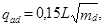
где L - общая длина трубопроводов до рассчитываемого сооружения (створа трубопроводов) , км;
тd - величина максимального суточного количества осадков, мм, определяемая согласно СНиП 2.01.01-82.
Проверочный расчет самотечных трубопроводов и каналов поперечным сечением любой формы на пропуск увеличенного расхода должен осуществляться при наполнении 0,95 высоты.
2.11. Расходы дождевых qr, л/с, следует определять по методу предельных интенсивностей по формуле
где zmid - среднее значение коэффициента, характеризующего поверхность бассейна стока, определяемое согласно п. 2.17;
А, п - параметры, определяемые согласно п. 2.12;
F - расчетная площадь стока, га, определяемая согласно п. 2.14;
tr - расчетная продолжительность дождя, равная продолжительности протекания поверхностных вод по поверхности и трубам до расчетного участка, мин, и определяемая согласно п. 2.15.
Расчетный расход дождевых вод для гидравлического расчета дождевых сетей qcal, л/с, следует определять по формуле
где b - коэффициент, учитывающий заполнение свободной емкости сети в момент возникновения напорного режима и определяемый по табл. 11.
Примечания: 1. При величине расчетной продолжительности протекания дождевых вод, меньшей 10 мин, в формулу (2) следует вводить поправочный коэффициент рваный 0,8 при tr = 5 мин и 0,9 при tr = 7 мин.
2. При большом заглублении начальных участков коллекторов дождевой канализации следует учитывать увеличение их пропускной способности за счет напора, создаваемого подъемом уровни воды в колодцах.
2.12. Параметры А и п надлежит определять по результатам обработки многолетних записей самопишущих дождемеров, зарегистрированных в данном конкретном пункте. При отсутствии обработанных данных допускается параметр А определять по формуле
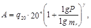
где q20 - интенсивность дождя, л/с на 1 га, для данной местности продолжительностью 20 мин при Р = 1 год, определяемая по черт. 1;
п - показатель степени, определяемый по табл. 4;
тr - средние количество дождей за год, принимаемое по табл. 4;
Р - период однократного превышения расчетной интенсивности дождя, принимаемый по п. 2.13;
g - показатель степени, принимаемый по табл. 4.
Черт. 1. Значения величин интенсивности дождя q20
Таблица 4
|
Значение n при |
mr |
g |
||
|
Р ³ 1 |
Р < 1 |
|||
|
Побережья Белого и Баренцева морей |
0,4 |
0,35 |
130 |
1,33 |
|
Север европейской части СССР и Западной Сибири |
0,62 |
0,48 |
120 |
1,33 |
|
Равнинные области запада и центра европейской части СССР |
0,71 |
0,59 |
150 |
1,54 |
|
Равнинные области Украины |
0,71 |
0,64 |
110 |
1,54 |
|
Возвышенности европейской части СССР. западный склон Урала |
0,71 |
0,59 |
150 |
1,54 |
|
Восток Украины, низовье Волги и Дона, Южный Крым |
0,67 |
0,57 |
60 |
1,82 |
|
Нижнее Поволжье |
0,66 |
0,66 |
50 |
2 |
|
Наветренные склоны возвышенностей европейской части СССР и Северное Предкавказье |
0,7 |
0,66 |
70 |
1,54 |
|
Ставропольская возвышенность, северные предгорья Большого Кавказа, северный склон Большого Кавказа |
0,63 |
0,56 |
100 |
1,82 |
|
Южная часть Западной Сибири, среднее течение р. Или, район оз. Але-Куль |
0,72 |
0,58 |
80 |
1,54 |
|
Центральный и Северо-Восточный Казахстан, предгорья Алтая |
0,74 |
0,66 |
80 |
1,82 |
|
Северные склоны Западных Саян, Заилийского Алатау |
0,57 |
0,57 |
80 |
1,33 |
|
Джунгарский Алатау, Кузнецкий Алатау, Алтай |
0,61 |
0,48 |
140 |
1,33 |
|
Северный склон Западных Саян |
0,49 |
0,33 |
100 |
1,54 |
|
Средняя Сибирь |
0,69 |
0,47 |
130 |
1,54 |
|
Хребет Хамар-Дабан |
0,48 |
0,35 |
130 |
1,82 |
|
Восточная Сибирь |
0,6 |
0,52 |
90 |
1,54 |
|
Бассейны Шилки и Аргуни, долина Среднего Амура |
0,65 |
0,54 |
100 |
1,54 |
|
Бассейны Колымы и рек Охотского моря, северная часть Нижнеамурской низменности |
0,36 |
0,48 |
100 |
1,54 |
|
Побережье Охотского моря, бассейны рек Берингова моря, центр и запад Камчатки |
0,35 |
0,31 |
80 |
1,54 |
|
Восточное побережье Камчатки южнее 56° с. ш. |
0,28 |
0,26 |
110 |
1,54 |
|
Побережье Татарского пролива |
0,35 |
0,28 |
110 |
1,54 |
|
Район оз. Ханка |
0,65 |
0,57 |
90 |
1,54 |
|
Бассейны рек Японского моря, о. Сахалин, Курильские о-ва |
0,45 |
0,44 |
110 |
1,54 |
|
Юг Казахстана, равнина Средней Азии и склоны гор до 1500 м, бассейн оз. Иссык-Куль до 2500 м |
0,44 |
0,4 |
40 |
1,82 |
|
Склоны гор Средней Азии на высоте 1500-3000 м |
0,41 |
0,37 |
40 |
1,54 |
|
Юго-Западная Туркмения |
0,49 |
0,32 |
20 |
1,54 |
|
Черноморское побережье и западный склон Большого Кавказа до Сухуми |
0,62 |
0,58 |
90 |
1,54 |
|
Побережье Каспийского моря и равнина от Махачкалы до Баку |
0,51 |
0,43 |
60 |
1,82 |
|
Восточный склон Большого Кавказа, Кура-Араксинская низменность до 500 м |
0,58 |
0,47 |
70 |
1,82 |
|
Южный склон Большого Кавказа выше 1500 м, южный склон выше 500 м, ДагАССР |
0,57 |
0,52 |
100 |
1,54 |
|
Побережье Черного моря ниже Сухуми, Колхидская низменность, склоны Кавказа до 2000 м |
0,54 |
0,5 |
90 |
1,33 |
|
Бассейн Куры, восточная часть Малого Кавказа, Талышский хребет |
0,63 |
0,52 |
90 |
1,33 |
|
Северо-западная и центральная части Армении |
0,67 |
0,53 |
100 |
1,33 |
|
Ленкорань |
0,44 |
0,38 |
171 |
2,2 |
2.13. Период однократного превышения расчетной интенсивности дождя необходимо выбирать в зависимости от характера объекта канализования, условий расположения коллектора с учетом последствий, которые могут быть вызваны выпадением дождей, превышающих расчетные, и принимать по табл. 5 и 6 или определять расчетом в зависимости от условий расположения коллектора, интенсивности дождей, площади бассейна и коэффициента стока по предельному периоду превышения.
При проектировании дождевой канализации у особых сооружений (метро, вокзалов, подземных переходов и др.), а также для засушливых районов, где значение q20 менее 50 л/(с×га), при Р, равном единице, период однократного превышения расчетной интенсивности дождя следует определять только расчетом с учетом предельного периода превышения расчетной интенсивности дождя, указанного в табл. 7. При этом периоды однократного превышения расчетной интенсивности дождя, определенные расчетом, не должны быть менее указанных в табл. 5 и 6.
При определении периода однократного превышения расчетной интенсивности дождя расчетом следует учитывать, что при предельных периодах однократного превышения, указанных в табл. 7, коллектор дождевой канализации должен пропускать лишь часть расхода дождевого стока, остальная часть которого временно затопляет проезжую часть улиц и при наличии уклона стекает по ее лоткам, при этом высота затопления улиц не должна вызывать затопления подвальных и полуподвальных помещений; кроме того, следует учитывать возможный сток с бассейнов, расположенных за пределами населенного пункта.
Таблица 5
|
Период однократного превышения расчетной интенсивности дождя Р, годы, для населенных пунктов при значениях q20 |
|||||
|
местного значения |
на магистральных улицах |
до 60 |
св. 60 до 80 |
св. 80 до 120 |
св. 120 |
|
Благоприятные и средние |
Благоприятные |
0,33 - 0,5 |
0,33 - 1 |
0,5 - 1 |
1 - 2 |
|
Неблагоприятные |
Средние |
0,5 - 1 |
1 - 1,5 |
1 - 2 |
2 - 3 |
|
Особо неблагоприятные |
Неблагоприятные |
2 - 3 |
2 - 3 |
3 - 5 |
5 - 10 |
|
- |
Особо неблагоприятные |
3 - 5 |
3 - 5 |
5 - 10 |
10 - 20 |
Примечания: 1. Благоприятные условия расположения коллекторов:
бассейн площадью не более 150 га имеет плоский рельеф при среднем уклоне поверхности 0,005 и менее;
коллектор проходит по водоразделу или в верхней части склона на расстоянии от водораздела не более 400 м/
2. Средние условия расположения коллекторов:
бассейн площадью свыше 150 га имеет плоский рельеф с уклоном 0,005 м и менее;
коллектор проходит d нижней части склона по тальвегу с уклоном склонов 0,02 м и менее, при этом площадь бассейна не превышает 150 га.
3. Неблагоприятные условия расположения коллекторов:
коллектор проходит в нижней части склона, площадь бассейна превышает 150 га;
коллектор проходит по тальвегу с крутыми склонами при среднем уклоне склонов свыше 0,02.
4. Особо неблагоприятные условия расположения коллекторов: коллектор отводит воду из замкнутого пониженного места (котловины).
Таблица 6
|
Результат кратковременного переполнения сети |
Период однократного превышения расчетной интенсивности дождя Р, годы, для территории промышленных предприятий при значениях q20 |
||
|
до 70 |
св. 70 до 100 |
св. 100 |
|
|
Технологические процессы предприятия: |
|||
|
не нарушаются |
0,33 - 0,5 |
0,5 - 1 |
2 |
|
нарушаются |
0,5 - 1 |
1 - 2 |
3 - 5 |
Примечание. Для предприятий, расположенных в замкнутой котловине, период однократного превышения расчетной интенсивности дождя следует определять расчетом или принимать рваным не менее чем 5 годам.
Таблица 7
|
Значение предельного периода превышения интенсивности дождя Р, годы, в зависимости от условий расположения коллектора |
||||
|
благоприятных |
средних |
неблагоприятных |
особо неблагоприятных |
|
|
Территории кварталов и проезды местного значения |
10 |
10 |
25 |
50 |
|
Магистральные улицы |
10 |
25 |
50 |
100 |
2.14. Расчетную площадь стока для рассчитываемого участка сети необходимо принимать равной всей площади стока или части ее, дающей максимальный расход стока.
В тех случаях, когда площадь стока коллектора составляет 500 га и более, в формулы (2) и (3) следует вводить поправочный коэффициент К, учитывающий неравномерность выпадения дождя по площади и принимаемый по табл. 8.
Таблица 8
|
800 |
1000 |
2000 |
4000 |
6000 |
8000 |
10 000 |
|
|
Значение коэффициента К |
0,95 |
0,90 |
0,85 |
0,8 |
0,7 |
0,6 |
0,55 |
Расчетные расходы дождевых вод с незастроенных площадей водосборов свыше 1000 га, не входящих в территорию населенного пункта, следует определять по соответствующим нормам стока для расчета искусственных сооружений автомобильных дорог согласно ВСН 63-76 Минтрансстроя.
2.15. Расчетную продолжительность протекания дождевых вод по поверхности и трубам tr, мин, следует принимать по формуле
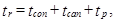
где tcon - продолжительность протекания дождевых вод до уличного лотка или при наличии дождеприемников в пределах квартала до уличного коллектора (время поверхностной концентрации), мин, определяемая согласно п. 2.16;
tcan - то же, по уличным лоткам до дождеприемника (при отсутствии их в пределах квартала), определяемая по формуле (6);
tp - то же, по трубам до рассчитываемого сечения, определяемая по формуле (7).
2.16. Время поверхностной концентрации дождевого стока следует определять по расчету или принимать в населенных пунктах при отсутствии внутриквартальных закрытых дождевых сетей равным 5 - 10 мин или при наличии их равным 3 - 5 мин.
При расчете внутриквартальной канализационной сети время поверхностной концентрации надлежит принимать равным 2 - 3 мин.
Продолжительность протекания дождевых вод по уличным лоткам tcan, мин, следует определять по формуле
где lcan - длина участков лотков, м;
vcan - расчетная скорость течения на участке, м/с.
Продолжительность протекания дождевых вод по трубам до рассчитываемого сечения tp, мин, следует определять по формуле
где lp - длина расчетных участков коллектора, м;
vp - расчетная скорость течения на участке, м/с.
2.17. Среднее значение коэффициента стока zmid следует определять как средневзвешенную величину в зависимости от коэффициентов z, характеризующих поверхность и принимаемых по табл. 9 и 10.
Таблица 9
|
Коэффициент z |
|
|
Кровля зданий и сооружений, асфальтобетонные покрытия дорог |
Принимается по табл. 10 |
|
Брусчатые мостовые и черные щебеночные покрытия дорог |
0,224 |
|
Булыжные мостовые |
0,145 |
|
Щебеночные покрытия, не обработанные вяжущими |
0,125 |
|
Гравийные садово-парковые дорожки |
0,09 |
|
Грунтовые поверхности (спланированные) |
0,064 |
|
Газоны |
0,038 |
Примечание. Указанные значения коэффициента z допускается уточнять по местным условиям на основании соответствующих исследований.
Таблица 10
|
Коэффициент z для водонепроницаемых поверхностей |
|
|
300 |
0,32 |
|
400 |
0,30 |
|
500 |
0,29 |
|
600 |
0,28 |
|
700 |
0,27 |
|
800 |
0,26 |
|
1000 |
0,25 |
|
1200 |
0,24 |
|
1500 |
0,23 |
2.18. При расчете стока с бассейнов площадью свыше 50 га с разным характером застройки или с резко различными уклонами поверхности земли следует производить проверочные определения расходов дождевых вод с разных частей бассейна и наибольший из полученных расходов принимать за расчетный. При этом если расчетный расход дождевых вод с данной части бассейна окажется меньше расхода, по которому рассчитан коллектор на вышележащем участке, следует расчетный расход для данного участка коллектора принимать равным расходу на вышележащем участке.
Территории садов и парков, не оборудованные дождевой закрытой или открытой канализацией, в расчетной величине площади стока и при определении коэффициента z не учитываются. Если территория имеет уклон поверхности 0,008 - 0,01 и более в сторону уличных проездов, то в расчетную площадь стока необходимо включать прилегающую к проезду полосу шириной 50 - 100 м.
Озелененные площади внутри кварталов (полосы бульваров, газоны и т. п.) следует включать в расчетную величину площади стока и учитывать при определении коэффициента поверхности бассейна стока z.
2.19. Значения коэффициента b следует определять по табл. 11.
Таблица 11
|
£ 0,4 |
0,5 |
0,6 |
³ 0,7 |
|
|
Значение коэффициента b |
0,8 |
0,75 |
0,7 |
0,65 |
Примечания: 1. При уклонах местности 0,01 - 0,03 указанные значения коэффициента b следует увеличивать на 10 - 15 % и при уклонах местности свыше 0,03 принимать равными единице.
2. Если общее число участков на дождевом коллекторе или на притоке менее 10, то значение b при всех уклонах допускается уменьшать на 10 % при числе участков 4 - 10 и на 15 % при числе участков менее 4.
2.20. Расчетный расход смеси сточных вод qmix, л/с, в общесплавных коллекторах полураздельной системы канализации следует определять по формуле
(8)
где qcit - максимальный расчетный расход производственных и бытовых сточных вод с учетом коэффициента неравномерности, л/с;
åqlim - максимальный, подлежащий очистке расход дождевого стока, равный сумме предельных расходов дождевых вод qlim, подаваемых в общесплавной коллектор от каждой разделительной камеры, расположенной до рассчитываемого участка, л/с.
Расход стока от предельного дождя qlim следует определять согласно п. 2.11 при периоде однократного превышения интенсивности предельного дождя Plim = (0,05 - 0,1) года, обеспечивающем отведение на очистку не менее 70 % годового объема поверхностных сточных вод.
Указанные значения Plim допускается уточнять по местным условиям.
2.21. Предельный расход дождевых вод qlim, подаваемый в общесплавной коллектор полураздельной системы канализации от разделительной камеры, допускается определять путем расчета стока дождевых вод согласно п. 2.12 при значении коэффициента b = 1 по существующей или запроектированной дождевой канализационной сети при предельном, не сбрасываемом в водоем дожде, пользуясь метеорологическими параметрами для дождей частой повторяемости. Предельный расход дождевых вод следует определять по формуле
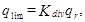
где Кdiv - коэффициент, показывающий часть расхода дождевых вод, направляемую на очистку, и определяемый по п. 2.22;
qr - расход подходящих к разделительной камере дождевых вод, определяемый согласно п. 2.11 без учета коэффициента b.
2.22. Значения коэффициента разделения Кdiv следует определять по табл. 12 в зависимости от отношения
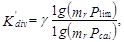
где mr, g - параметры, определяемые по п. 2.12.
Таблица 12
|
Показатель степени nlim |
Значения коэффициента Kdiv при Kdiv, равных |
|||||||||
|
0,05 |
0,1 |
0,15 |
0,2 |
0,25 |
0,3 |
0,35 |
0,4 |
0,45 |
0,5 |
|
|
0,75 |
0,02 |
0,04 |
0,07 |
0,1 |
0,15 |
0,19 |
0,24 |
0,3 |
0,36 |
0,42 |
|
0,5 |
0,025 |
0,05 |
0,08 |
0,12 |
0,16 |
0,21 |
0,26 |
0,31 |
0,37 |
0,43 |
|
0,3 |
0,03 |
0,06 |
0,09 |
0,13 |
0,18 |
0,22 |
0,27 |
0,32 |
0,38 |
0,43 |
Примечание. Принятые в табл. 12 значения Kdiv справедливы для продолжительности протока tr, равной 20 мин, а также разности показателей степени в формуле (2) п - nlim = 0 при любой продолжительности протока.
В тех случаях, когда расчетная продолжительность протока до разделительной камеры tr ¹ 20 мин и разность показателей степени n ¹ 0, к значению коэффициента разделения, принятому по табл. 12, следует вводить поправочный коэффициент, определяемый по табл. 13, в зависимости от продолжительности протока до разделительной камеры и разности показателей степени п.
Таблица 13
|
Разность показателей степени n - nlim |
Значение поправочного коэффициента к коэффициенту разделения Kdiv при продолжительности протока tr, мин |
||||
|
10 |
30 |
60 |
90 |
120 |
|
|
0,03 и менее |
1 |
1 |
1 |
1,1 |
1,1 |
|
0,07 |
0,9 |
1 |
1,1 |
1,2 |
1,2 |
|
0,15 |
0,9 |
1,1 |
1,2 |
1,3 |
1,3 |
|
0,2 |
0,8 |
1,1 |
1,4 |
1,6 |
1,7 |
|
0,3 |
0,8 |
1,2 |
1,6 |
1,9 |
2,1 |
2.23. Расчетный расход смеси сточных вод на участках общесплавной канализационной сети до первого ливнеспуска следует определять как сумму расходов производственно-бытовых сточных вод qcit с учетом коэффициента неравномерности и дождевых вод от дождя расчетной интенсивности.
2.24. Расчетный расход смеси сточных вод на участках общесплавной канализационной сети после первого и каждого последующего ливнеспуска следует определить как сумму расходов производственно-бытовых сточных вод с учетом коэффициента неравномерности и дождевых вод от дождя расчетной интенсивности qqen, л/с, по формуле
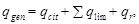
где qcit - расход производственных и бытовых сточных вод, л/с;
qr - расход дождевых вод с бассейна стока между последним ливнеспуском и расчетным сечением, л/с.
2.25. Общесплавные коллекторы полураздельной системы канализации следует рассчитывать на пропуск расходов при полном их заполнении.
Участки общесплавных коллекторов полураздельной системы канализации, где расход производственно-бытовых сточных вод qcit превышает 10 л/с, следует проверять на условия пропуска этого расхода, при этом наименьшие скорости следует принимать по табл. 14 при наполнении, равном 0,3.
Таблица 14
|
Глубина слоя воды в трубопроводах общесплавной сети при расчетных расходах в сухую погоду, см |
Наименьшая скорость течения сточных вод, м/с |
|
31 - 40 |
1 |
|
41 - 60 |
1,1 |
|
61 - 100 |
1,2 |
|
101 - 150 |
1,3 |
|
Св. 150 |
1,4 |
2.26. Регулирование стока дождевых вод следует предусматривать с целью уменьшения и выравнивания расхода, поступающего на очистные сооружения или насосные станции. Регулирование стока следует также применять перед отводными коллекторами большой протяженности для уменьшения диаметров труб.
Для регулирования стока дождевых вод следует устраивать пруды или резервуары, а также использовать укрепленные овраги и существующие пруды, не являющиеся источниками питьевого водоснабжения, непригодные для купания и спорта и не используемые в рыбохозяйственных целях.
2.27. В регулирующие пруды и резервуары, как правило, следует направлять через разделительные камеры лишь дождевые воды при возникновении больших расходов стока. При этом все талые воды и сток от часто повторяющихся дождей необходимо пропускать в обход пруда.
В случае целесообразности использования регулирующего пруда как очистного сооружения в него должен быть направлен весь поверхностный сток, при этом следует предусматривать специальное оборудование для удаления осадка, мусора и нефтепродуктов.
2.28. Период однократного превышения расчетной интенсивности дождей для водосбросов и выпусков в пруды следует устанавливать для каждого объекта с учетом местных условий и возможных последствии в случае выпадения дождей с интенсивностью выше расчетной.
2.29. Гидравлический расчет канализационных самотечных трубопроводов (лотков, каналов) надлежит производить на расчетный максимальный секундный расход сточных вод по таблицам и графикам, составленным по формуле
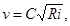
где v - скорость движения жидкости, м/с;
С - коэффициент, зависящий от гидравлического радиуса и шероховатости смоченной поверхности канала или трубопровода и определяемый по формуле
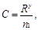
здесь
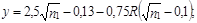
n1 - коэффициент шероховатости, принимаемый для самотечных коллекторов круглого сечения 0,014, для напорных трубопроводов - 0,013;
R - гидравлический радиус, м;
i - гидравлический уклон.
Гидравлический уклон i для самотечных трубопроводов, лотков и каналов допускается определять по формуле
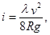
где g - ускорение силы тяжести, м/с2;
l - коэффициент сопротивления трению по длине, который следует определять по формуле, учитывающей различную степень турбулентности потока:
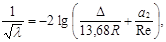
здесь D - эквивалентная шероховатость, см;
R - гидравлический радиус, см;
a2 - коэффициент, учитывающий характер шероховатости труб и каналов;
Re - число Рейнольдса.
Значения D и а2 следует принимать по табл. 15.
Таблица 15
|
D, см |
а2 |
|
|
Трубы: |
||
|
бетонные и железобетонные |
0,2 |
100 |
|
керамические |
0,135 |
90 |
|
чугунные |
0,1 |
83 |
|
стальные |
0,08 |
79 |
|
асбестоцементные |
0,06 |
73 |
|
Каналы: |
||
|
из бута, тесаного камня |
0,635 |
150 |
|
кирпичные |
0,315 |
110 |
|
бетонные и железобетонные монолитные |
0,3 |
120 |
|
то же, сборные (заводского изготовления) |
0,08 |
50 |
2.30. Гидравлический расчет канализационных напорных трубопроводов надлежит производить согласно СНиП 2.04.02-84.
2.31. Гидравлический расчет напорных илопроводов, транспортирующих сырые и сброженные осадки, а также активный ил, следует производить с учетом режима движения, физических свойств и особенностей состава осадков.
При влажности 99 % и более осадок подчиняется законам движения сточной жидкости.
2.32. Гидравлический уклон i при расчете напорных илопроводов следует определять по формуле
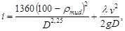
где rmud - влажность осадка, %;
l - коэффициент сопротивления трению по длине, определяемый по формуле
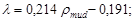
v - скорость движения ила, м/с;
D - диаметр трубопровода, см.
Для илопроводов диаметром 150 мм значение l следует увеличивать на 0,01.
2.33. Наименьшие диаметры труб самотечных сетей следует принимать, мм:
для уличной сети - 200, для внутриквартальной сети бытовой и производственной канализации - 150;
для дождевой и общесплавной уличной сети - 250, внутриквартальной - 200.
Наименьший диаметр напорных илопроводов - 150 мм.
Примечания: 1. В населенных пунктах с расходом до 300 м3/сут для внутриквартальной и уличной сетей допускается применение труб диаметром 150 мм.
2. Для производственной канализации при соответствующем обосновании допускается применение труб диаметром менее 150 мм.
2.34. Во избежание заиливания канализационных сетей расчетные скорости движения сточных вод следует принимать в зависимости от степени наполнения труб и каналов и крупности взвешенных веществ, содержащихся в сточных водах.
При наибольшем расчетном наполнении труб в сети бытовой и дождевой канализации наименьшие скорости следует принимать по табл. 16.
Таблица 16
|
Скорость vmin, м/с, при наполнении H/D |
||||
|
0,6 |
0,7 |
0,75 |
0,8 |
|
|
150 - 250 |
0,7 |
- |
- |
- |
|
300 - 400 |
- |
0,8 |
- |
- |
|
450 - 500 |
- |
- |
0,9 |
- |
|
600 - 800 |
- |
- |
1 |
- |
|
900 |
- |
- |
1,15 |
- |
|
1000 - 1200 |
- |
- |
- |
1,15 |
|
1500 |
- |
- |
- |
1,3 |
|
Св. 1500 |
- |
- |
- |
1,5 |
Примечания: 1. Для производственных сточных вод наименьшие скорости следует принимать в соответствии с указаниями по строительному проектированию предприятий отдельных отраслей промышленности или по эксплуатационным данным.
2. Для производственных сточных вод, близких по характеру взвешенных веществ к бытовым, наименьшие скорости надлежит принимать как для бытовых сточных вод.
3. Для дождевой канализации при Р = 0,33 года наименьшую скорость следует принимать 0,6 м/с.
2.35. Минимальную расчетную скорость движения осветленных или биологически очищенных сточных вод в лотках и трубах допускается принимать 0,4 м/с.
2.36. Наибольшую расчетную скорость движения сточных вод следует принимать, м/с: для металлических труб - 8, для неметаллических - 4, для дождевой канализации - соответственно 10 и 7.
2.37. Расчетную скорость движения неосветленных сточных вод в дюкерах необходимо принимать не менее 1 м/с, при этом в местах подхода сточных вод к дюкеру скорости должны быть не более скоростей в дюкере.
2.38. Наименьшие расчетные скорости движения сырых и сброженных осадков, а также уплотненного активного ила в напорных илопроводах следует принимать по табл. 17.
2.39. Наибольшие скорости движения дождевых и допускаемых к спуску в водоемы производственных сточных вод в каналах следует принимать по табл. 18.
Таблица 17
|
vmin, м/с, при |
Влажность осадка, % |
vmin, м/с, при |
|||
|
D = 150 - 200 мм |
D = 250 - 400 мм |
D = 150 - 200 мм |
D = 250 - 400 мм |
||
|
98 |
0,8 |
0,9 |
93 |
1,3 |
1,4 |
|
97 |
0,9 |
1,0 |
92 |
1,4 |
1,5 |
|
96 |
1,0 |
1,1 |
91 |
1,7 |
1,8 |
|
95 |
1,1 |
1,2 |
90 |
1,9 |
2,1 |
|
94 |
1,2 |
1,3 |
|||
Таблица 18
|
Наибольшая скорость движения в каналах, м/с, при глубине потока от 0,4 до 1 м |
|
|
Крепление бетонными плитами |
4 |
|
Известняки, песчаники средние |
4 |
|
Одерновка: |
|
|
плашмя |
1 |
|
в стенку |
1,6 |
|
Мощение: |
|
|
одинарное |
2 |
|
двойное |
3-3,5 |
Примечание. При глубине патока менее 0,4 м значения скоростей движения сточных вод следует принимать с коэффициентом 0,85, при глубине свыше 1 м - с коэффициентом 1,25.
2.40. Расчетное наполнение трубопроводов и каналов с поперечным сечением любой формы надлежит принимать не более 0,7 высоты.
Расчетное наполнение каналов прямоугольного поперечного сечения допускается принимать не более 0,75 высоты.
Для трубопроводов дождевой и общесплавной систем водоотведения следует принимать полное расчетное наполнение.
2.41. Наименьшие уклоны трубопроводов и каналов следует принимать в зависимости от допустимых минимальных скоростей движения сточных вод.
Наименьшие уклоны трубопроводов для всех систем канализации следует принимать для труб диаметрами: 150 мм - 0,008, 200 мм - 0,007.
В зависимости от местных условий при соответствующем обосновании для отдельных участков сети допускается принимать уклоны для труб диаметрами: 200 мм - 0,005, 150 мм - 0,007.
Уклон присоединения от дождеприемников следует принимать 0,02.
2.42. В открытой дождевой сети наименьшие уклоны лотков проезжей части, кюветов и водоотводных канав следует принимать по табл. 19.
Таблица 19
|
Наименьший уклон |
|
|
Лотки проезжей части при: |
|
|
покрытии асфальтобетонном |
0,003 |
|
брусчатом или щебеночном покрытии |
0,004 |
|
булыжной мостовой |
0,005 |
|
Отдельные лотки и кюветы |
0,005 |
|
Водоотводные канавы |
0,003 |
2.43. Наименьшие размеры кюветов и канав трапецеидального сечения следует принимать: ширину по дну 0,3 м, глубину 0,4 м.
3.1. Канализование населенных пунктов следует предусматривать по системам: раздельной - полной или неполной, полураздельной, а также комбинированной.
Отведение поверхностных вод по открытой системе водостоков допускается при соответствующем обосновании и согласовании с органами санитарно-эпидемиологической службы, по регулированию и охране вод, а также с органами охраны рыбных запасов.
3.2. Выбор системы канализации следует производить с учетом требований к очистке поверхностных сточных вод, климатических условий, рельефа местности и других факторов.
В районах с интенсивностью дождей q20 менее 90 л/с на 1 га следует рассматривать возможность применения полураздельной системы канализации.
3.3. Канализацию малых населенных пунктов следует предусматривать, как правило, по неполной раздельной системе.
3.4. Для малых населенных пунктов следует предусматривать, как правило, централизованные схемы канализации для одного или нескольких населенных пунктов, отдельных групп зданий и производственных зон.
Централизованные схемы канализации следует проектировать объединенными для жилых и производственных зон, исключая навозсодержащие сточные воды, при этом объединение производственных сточных вод с бытовыми должно производиться с учетом п. 3.18.
Устройство централизованных схем раздельно для жилой и производственной зон допускается при технико-экономическом обосновании.
3.5. Децентрализованные схемы канализации допускается предусматривать:
при отсутствии опасности загрязнения используемых для водоснабжения водоносных горизонтов;
при отсутствии централизованной канализации в существующих или реконструируемых населенных пунктах для объектов, которые должны быть канализованы в первую очередь (больниц, школ, детских садов и яслей, административно-хозяйственных зданий, отдельных жилых домов промышленных предприятий и т. п.), а также для первой стадии строительства населенных пунктов при расположении объектов канализования на расстоянии не менее 500 м;
при необходимости канализования групп или отдельных зданий.
3.6. Для очистки сточных вод при централизованной схеме канализации следует применять сооружения:
естественной биологической очистки (поля фильтрации, биологические пруды);
искусственной биологической очистки (аэротенки и биофильтры различных типов, циркуляционные окислительные каналы);
физико-химической очистки для вахтовых поселков с временным пребыванием персонала и для других объектов с периодическим пребыванием людей.
3.7. Для очистки сточных вод при децентрализованной схеме канализации следует применять фильтрующие колодцы, поля подземной фильтрации, песчано-гравийные фильтры, фильтрующие траншеи, аэротенки на полное окисление, сооружения физико-химической очистки для объектов периодического функционирования (пионерских лагерей, туристских баз и т.п.).
3.8. Для очистки сточных вод малых населенных пунктов целесообразно применение установок заводского изготовления по ГОСТ 25298-82.
3.9. Для отдельно стоящих зданий при расходе бытовых сточных вод до 1 м3/сут допускается устройство люфт-клозетов или выгребов.
3.10. Обработку сточных вод прачечных, загрязненных синтетическими поверхностно-активными веществами (СПАВ), допускается производить совместно с бытовыми сточными водами при отношении их количеств 1:9. Для банно-прачечных сточных вод это отношение следует принимать 1:4, для банных - 1:1. При обосновании допускается применение регулирующих резервуаров.
При большом количестве банно-прачечных сточных вод следует предусматривать их обработку для обеспечения допустимой концентрации СПАВ.
3.11. По подаче сточных вод на очистные сооружения насосами расчет очистных сооружений малых населенных пунктов следует производить на расход, равный производительности насосных установок.
3.12. Система водного хозяйства промышленных предприятий должна быть с максимальным повторным (последовательным) использованием производственной воды в отдельных технологических операциях и с оборотом охлаждающей воды для отдельных цехов или всего предприятий в целом. Безвозвратные потери воды должны восполняться за счет аккумулирования поверхностных сточных вод, бытовых, городских и производственных сточных вод после их очистки и обеззараживания (обезвреживания).
Прямоточная система подачи воды на производственные нужды со сбросом очищенных сточных вод в водные объекты допускается лишь при обосновании и согласовании с органами по регулированию использования и охране под и органами рыбоохраны.
3.13. При выборе схемы и системы канализации промышленных предприятий необходимо учитывать:
возможность исключения образования загрязненных сточных вод в технологическом процессе за счет внедрения безотходных и безводных производств, использования сухих процессов, устройства замкнутых систем водного хозяйства, применений воздушных методов охлаждения и т. п.;
требования к качеству воды, используемой в различных технологических процессах, и ее количество;
количество и характеристику сточных вод, образующихся в различных технологических процессах. и физико-химические свойства присутствующих в них загрязняющих веществ, материальный и энергетический балансы водопотребления и водоотведения;
возможность локальной очистки потоков сточных вод с целью извлечения отдельных компонентов и повторного использования воды, а также создания локальных замкнутых систем производственного водоснабжения;
возможность последовательного использования воды в различных технологических процессах с различными требованиями к ее качеству;
возможность вывода отдельным потоком сточных вод, требующих локальной очистки;
возможность объединения сточных вод с идентичной качественной характеристикой;
возможность использования в производстве очищенных бытовых и городских сточных вод, а также поверхностных сточных вод и создания замкнутых систем водного хозяйства без сброса сточных вод в водные объекты;
возможность протекания в трубопроводах химических процессов с образованием газообразных или твердых продуктов при поступлении в канализацию различных сточных вод;
условия спуска производственных сточных вод в водные объекты или в систему канализации населенного пункта или другого водопользователя.
3.14. Канализование промышленных предприятий надлежит предусматривать, как правило, по полной раздельной системе.
3.15. Сточные воды, требующие специальной очистки с целью их возврата в производство или для подготовки перед спуском в водные объекты или в систему канализации населенного пункта или другого водопользователя, следует отводить самостоятельным потоком.
3.16. Объединение потоков производственных сточных вод с различными загрязняющими веществами допускается при целесообразности их совместной очистки.
3.17. Очистка производственных и городских сточных вод на внеплощадочных очистных сооружениях может производиться совместно или раз дельно в зависимости от характеристики поступающих сточных вод и условий их повторного использования.
3.18. Производственные сточные воды, подлежащие совместному отведению и очистке с бытовыми сточными водами населенного пункта, не должны:
нарушать работу сетей и сооружений;
содержать вещества, которые способны засорять трубы канализационной сети или отлагаться на стенках труб;
оказывать разрушающее действие на материал труб и элементы сооружений канализации;
содержать горючие примеси и растворенные вещества, способные образовывать взрывоопасные и токсичные газы в канализационных сетях и сооружениях;
содержать вредные вещества в концентрациях, нарушающих работу очистных сооружений или препятствующих использованию их в системах технического водоснабжения или сбросу в водные объекты (с учетом эффекта очистки).
Производственные сточные воды, не отвечающие указанным требованиям, должны подвергаться предварительной очистке. Степень их предварительной очистки должна быть согласована с организациями, проектирующими очистные сооружения населенного пункта или другого водопользователя.
3.19. Сточные воды, не загрязненные в процессе производства, должны быть использованы в смете мах производственного водоснабжения предприятия или переданы другому потребителю, в том числе на орошение.
3.20. Количество сточных вод промышленных предприятий необходимо определять по технологическим данным с анализом водохозяйственного баланса в части возможного увеличения водооборота и повторного использования сточных вод. при отсутствии данных - по укрупненным нормам расхода воды на единицу продукции или сырья, по данным аналогичных предприятий. Из общего количества сточных вод промышленных предприятий следует выделять количество, принимаемое в канализацию населенного пункта или другого водопользователя.
3.21. При раздельной системе канализации очистку поверхностных сточных вод с территории города следует осуществлять на локальных или централизованных очистных сооружениях поверхностного стока. При этом в зависимости от предъявляемых требований следует, как правило, применять сооружения механической очистки (решетки, песколовки, отстойники, фильтры). В некоторых случаях возможна совместная очистка поверхностных, бытовых и производственных сточных вод на общих очистных сооружениях, при этом поверхностные сточные воды следует аккумулировать в накопителях и подавать в систему канализации в часы минимального притока городских сточных вод.
3.22. При полураздельной системе канализации очистку смеси поверхностных вод с бытовыми и производственными сточными водами следует осуществлять по полной схеме очистки, принятой для городских сточных вод.
Для снижения гидравлической нагрузки на очистные сооружения допускается использование регулирующих емкостей.
3.23. Поверхностные сточные воды с территорий промышленных предприятий следует подвергать очистке.
Разработка мероприятий по очистке поверхностных сточных вод на предприятиях должна основываться на натурных данных об источниках загрязнения территории и воздуха, характеристике водосборного бассейна, сведениях об атмосферных осадках, выпадающих в данном районе, режимах полива и мойки территории.
Если территория предприятия по составу и количеству накапливающихся на поверхности примесей мало отличается от селитебной, поверхностные сточные воды могут быть направлены в дождевую канализацию населенного пункта.
3.24. Выбор схемы отведения поверхностных сточных вод на очистку должен осуществляться на основе оценки технической возможности и экономической целесообразности:
использования, как правило, поверхностных сточных вод в системах производственного водоснабжения;
самостоятельной очистки поверхностных сточных вод.
3.25. При разработке схемы отведения и очистки поверхностных сточных вод в зависимости от конкретных условий (источников загрязнения, размеров, расположения и рельефа водосборного бассейна и др.) следует учитывать необходимость локализации отдельных участков производственной территории, на которые могут попадать вредные вещества, с отводом стока в производственную канализацию или после предварительной очистки в дождевую канализацию. В ряде случаев необходимо оценивать целесообразность раздельной очистки стоков с производственных площадей, отличающихся по характеру и степени загрязнения территории.
3.26. Для очистки поверхностных сточных вод рекомендуется предусматривать простые в эксплуатации и надежные в работе сооружения механической и физико-химической очистки. Во всех случаях следует применять отстойные сооружения. Для интенсификации процесса очистки и обеспечения более глубокой степени очистки, чем та, которая достигается в отстойных сооружениях, рекомендуется применять фильтрацию, коагуляцию, флотацию.
При необходимости снижения содержания органических примесей осветленные сточные воды следует направлять на сооружения биологической очистки. Для интенсификации биологической очистки городских и поверхностных сточных вод допускается применять контактно-стабилизационный метод (на аэротенках).
4.1. Расположение сетей на генеральных планах, а также минимальные расстояния в плане и при пересечениях от наружной поверхности труб до сооружений и инженерных коммуникаций должны приниматься согласно СНиП II-89-80.
4.2. При параллельной прокладке нескольких напорных трубопроводов расстояние между наружной поверхностью труб следует принимать из условия производства работ, обеспечения защиты смежных трубопроводов при аварии на одном из них, в зависимости от материала труб, внутреннего давления и геологических условий согласно СНиП 2.04.02-84.
4.3. Проектирование коллекторов, прокладываемых щитовой проходкой или горным способом, в том числе коллекторов глубокого заложения, необходимо выполнять согласно СНиП II-91-77 и Указаниям по производству и приемке работ по сооружению коллекторных тоннелей способом щитовой проходки в городах и промышленных предприятиях (СН 322-74).
При параллельной прокладке двух коллекторов расстояние между ними следует принимать равным пяти диаметрам наибольшего из коллекторов, но не менее 10 м.
4.4. Надземная и наземная прокладка канализационных трубопроводов на территории населенных пунктов не допускается.
При пересечении глубоких оврагов, водотоков и водоемов, а также при укладке канализационных трубопроводов за пределами населенных пунктов допускается наземная и надземная прокладка трубопроводов.
4.5. Угол между присоединяемой и отводящей трубами должен быть не менее 90°.
Примечание. Любой угол между присоединениями и отводящими трубопроводами допускается при устройстве в колодце перепада в виде стояка и присоединении дождеприемников с перепадом.
4.6. Повороты на коллекторах надлежит предусматривать в колодцах; радиус кривой поворота лотка необходимо принимать не менее диаметра трубы, на коллекторах диаметром 1200 мм и более - не менее пяти диаметров и предусматривать смотровые колодцы в начале и конце кривой.
Повороты коллекторов, сооружаемых с помощью щитовой проходки или горным способом, надлежит принимать согласно СНиП II-91-77.
4.7. Соединения трубопроводов разных диаметров следует предусматривать в колодцах по шелыгам труб. При обосновании допускается соединение труб по расчетному уровню воды.
4.8. Наименьшую глубину заложения канализационных трубопроводов необходимо принимать на основании опыта эксплуатации сетей в данном районе. При отсутствии данных по эксплуатации минимальную глубину заложения лотка трубопровода допускается принимать, для труб диаметром до 500 мм - на 0,3 м; для труб большего диаметра - на 0,5 м менее большей глубины проникания в грунт нулевой температуры, не менее 0,7 м до верха трубы, считая от отметок поверхности земли или планировки. Наименьшую глубину заложения коллекторов с постоянным (малоколеблющимся) расходом сточных вод необходимо определять теплотехническим и статическим расчетами.
Минимальную глубину заложения коллекторов, прокладываемых щитовой проходкой, необходимо принимать не менее 3 м от отметок поверхности земли или планировки до верха щита.
Трубопроводы, укладываемые на глубину 0,7 м и менее, считая от верха трубы, должны быть предохранены от промерзания и повреждения наземным транспортом.
Максимальную глубину заложения труб, а также коллекторов, прокладываемых щитовой проходкой или горным способом, надлежит определять расчетом в зависимости от материала труб, грунтовых условий, метода производства работ.
4.9. Для канализационных трубопроводов следует применять:
самотечных - безнапорные железобетонные, бетонные, керамические, чугунные, асбестоцементные, пластмассовые трубы и железобетонные детали;
напорных - напорные железобетонные, асбестоцементные, чугунные, стальные и пластмассовые трубы.
Примечания: 1. Применение чугунных труб для самотечной и стальных для напорной сетей допускается при прокладке в труднодоступных пунктах строительства, в вечномерзлых, просадочных грунтах, на подрабатываемых территориях, в местах переходов через водные преграды, под железными и автомобильными дорогами, в местах пересечения с сетями хозяйственно-питьевого водопровода, при прокладке трубопроводов по опорам эстакад, в местах, где возможны механические повреждения труб.
2. При укладке трубопроводов в агрессивных средах следует применять трубы, стойкие к коррозии.
3. Стальные трубопроводы должны быть покрыты снаружи антикоррозионной изоляцией. На участках возможной электрокоррозии надлежит предусматривать катодную защиту трубопроводов.
4.10. Тип основания под трубы необходимо принимать в зависимости от несущей способности грунтов и нагрузок.
Во всех грунтах, за исключением скальных, плывунных, болотистых и просадочных I типа, необходимо предусматривать укладку труб непосредственно на выровненное и утрамбованное дно траншеи.
В скальных грунтах необходимо предусматривать укладку труб на подушку толщиной не менее 10 см из местного песчаного или гравелистого грунта, в илистых, торфянистых и других слабых грунтах - на искусственное основание.
4.11. На напорных трубопроводах в необходимых случаях надлежит предусматривать установку задвижек, вантузов, выпусков и компенсаторов в колодцах.
4.12. Уклон напорных трубопроводов по направлению к выпуску следует принимать не менее 0,001.
Диаметр выпусков следует назначать из условия опорожнения участка трубопроводов в течение не более 3 ч.
Отвод сточной воды, выпускаемой из опорожняемого участка, надлежит предусматривать без сброса в водный объект в специальную камеру с последующей перекачкой в канализационную сеть или с вывозом сточных вод автоцистерной.
4.13. На поворотах напорных трубопроводов в вертикальной или горизонтальной плоскости, когда возникающие усилия не могут быть восприняты стыками труб, должны предусматриваться упоры согласно СНиП 2.04.02-84.
4.14. Смотровые колодцы на канализационных сетях всех систем надлежит предусматривать:
в местах присоединений;
в местах изменения направления, уклонов и диаметров трубопроводов;
на прямых участках на расстояниях в зависимости от диаметра труб: 150 мм - 35 м, 200 - 450 мм - 50 м, 500 - 600 мм - 75 м, 700 - 900 мм - 100 м, 1000 - 1400 мм - 150 м, 1500 - 2000 мм - 200 м, свыше 2000 мм - 250 - 300 м.
4.15. Размеры в плане колодцев или камер бытовой и производственной канализации надлежит принимать в зависимости от трубы наибольшего диаметра D:
на трубопроводах диаметром до 600 мм - длину и ширину 1000 мм;
на трубопроводах диаметром 700 мм и более - длину D + 400 мм, ширину D + 500 мм.
Диаметры круглых колодцев следует принимать на трубопроводах диаметрами: до 600 мм - 1000 мм; 700 мм - 1250 мм; 800-1000 мм - 1500 мм; 1200 мм - 2000 мм.
Примечания: 1. Размеры в плане колодцев на поворотах необходимо определять из условия размещения в них лотков поворота.
2. На трубопроводах диаметром не более 150 мм при глубине заложения до 1,2 м допускается устройство колодцев диаметром 700 мм.
3. При глубине заложения свыше 3 м диаметр колодцев следует принимать не менее 1500 мм.
4.16. Высоту рабочей части колодцев (от полки или площадки до покрытия), как правило, необходимо принимать 1800 мм; при высоте рабочей части колодцев менее 1200 мм ширину их допускается принимать равной D + 300 мм, но не менее 1000 мм.
4.17. В рабочей части колодцев надлежит предусматривать:
установку стальных скоб или навесных лестниц для спуска в смотровой колодец;
на трубопроводах диаметром свыше 1200 мм при высоте рабочей части свыше 1500 мм - ограждение рабочей площадки высотой 1000 мм.
4.18. Полки лотка смотровых колодцев должны быть расположены на уровне верха трубы большего диаметра.
В колодцах на трубопроводах диаметром 700 мм и более допускается предусматривать рабочую площадку с одной стороны лотка и полку шириной не менее 100 мм с другой. На трубопроводах диаметром свыше 2000 мм допускается устройство рабочей площадки на консолях, при этом размер открытой части лотка следует принимать не менее 2000 ´ 2000 мм.
4.19. Размеры в плане колодцев дождевой канализации следует принимать: на трубопроводах диаметром до 600 мм включ. - диаметром 1000 мм; на трубопроводах диаметром 700 мм и более - круглыми или прямоугольными с лотковой частью длиной 1000 мм и шириной, равной диаметру наибольшей трубы.
Высоту рабочей части колодцев на трубопроводах диаметром от 700 до 1400 мм включ. надлежит принимать от лотка трубы наибольшего диаметра; на трубопроводах диаметром 1500 мм и более рабочие части не предусматриваются.
Полки лотков колодцев должны быть предусмотрены только на трубопроводах диаметром до 900 мм включ. на уровне половины диаметра наибольшей трубы.
4.20. Горловины колодцев на сетях канализации всех систем надлежит принимать диаметром 700 мм; размеры горловины и рабочей части колодцев на поворотах, а также на прямых участках трубопроводов диаметром 600 мм и более на расстояниях через 300-500 м следует предусматривать достаточными для опускания приспособлений для прочистки сети.
4.21. Установку люков необходимо предусматривать: в одном уровне с поверхностью проезжей части дорог при усовершенствованном покрытии; на 50 - 70 мм выше поверхности земли в зеленой зоне и на 200 мм выше поверхности земли на незастроенной территории. В случае необходимости надлежит предусматривать люки с запорными устройствами.
4.22. При наличии грунтовых вод с расчетным уровнем выше дна колодца необходимо предусматривать гидроизоляцию дна и стен колодца на 0,5 м выше уровня грунтовых вод.
4.23. На коллекторах, прокладываемых щитовой проходкой или горным способом, необходимо предусматривать устройство смотровых шахтных стволов или скважин диаметром не менее 0,9 м. Расстояние между смотровыми шахтными стволами или скважинами не должно превышать 500 м.
4.24. Оборудование шахтных стволов должно соответствовать требованиям правил безопасности при строительстве подземных гидротехнических сооружений и правил безопасности для угольных, сланцевых или рудных шахт.
В смотровых скважинах необходимо предусматривать площадки с люком, расстояние между которыми по высоте должно быть не более 6 м, а также устройство металлических лестниц или скоб. Люк в плане должен быть размером не менее 600 ´ 700 мм или диаметром не менее 700 мм.
4.25. Перепадные колодцы следует предусматривать:
для уменьшения глубины заложения трубопроводов;
во избежание превышения максимально допустимой скорости движения сточной воды или резкого изменения этой скорости;
при пересечении с подземными сооружениями;
при затопленных выпусках в последнем перед водоемом колодце.
Примечание. На трубопроводах диаметром до 600 мм перепады высотой до 0,5 м допускается осуществлять без устройства перепадного колодца - путем слива в смотровом колодце.
4.26. Перепады высотой до 3 м на трубопроводах диаметром 600 мм и более надлежит принимать в виде водосливов практического профиля.
Перепады высотой до 6 м на трубопроводах диаметром до 500 мм включ. следует осуществлять в колодцах в виде стояка сечением не менее сечения подводящего трубопровода.
В колодцах над стояком необходимо предусматривать приемную воронку, под стояком - водобойный приямок с металлической плитой в основании.
Для стояков диаметром до 300 мм допускается установка направляющего колена взамен водобойного приямка.
4.27. На коллекторах дождевой канализации при высоте перепадов до 1 м допускается предусматривать перепадные колодцы водосливного типа, при высоте перепада 1 - 3 м - водобойного типа с одной решеткой из водобойных балок (плит), при высоте перепада 3 - 4 м - с двумя водобойными решетками.
4.28. Дождеприемники по ГОСТ 26008-83 следует предусматривать:
на затяжных участках спусков (подъемов);
на перекрестках и пешеходных переходах со стороны притока поверхностных вод;
в пониженных местах в конце затяжных участков спусков;
в пониженных местах при пилообразном профиле лотков улиц;
в местах улиц, дворовых и парковых территорий, не имеющих стока поверхностных вод.
В пониженных местах наряду с дождеприемниками, имеющими горизонтальное перекрытое решеткой отверстие в плоскости проезжей части, допускается также применение дождеприемников с вертикальным в плоскости бордюрного камня отверстием и комбинированного типа с отверстием как горизонтальным, так и вертикальным.
На участках с затяжным продольным уклоном следует применять дождеприемники с горизонтальным отверстием.
4.29. Дождеприемники с горизонтальным отверстием в пониженных местах лотков с пилообразным продольным профилем и на участках с продольным уклоном менее 0,005 оборудуются малой прямоугольной дождеприемной решеткой.
На участках улиц с продольным уклоном 0,005 или более и в пониженных местах в конце затяжных участков спусков дождеприемники с горизонтальным отверстием должны быть оборудованы большой прямоугольной решеткой.
4.30. Расстояния между дождеприемниками при пилообразном продольном профиле лотка назначаются в зависимости от значений продольного уклона лотка и глубины воды в лотке в точке изменения направления продольного уклона и у дождеприемника.
Расстояния между дождеприемными решетками на участке улиц с продольным уклоном одного направления устанавливаются расчетом исходя из условия, что ширина потока в лотке перед решеткой не превышает 2 м.
4.31. Длина присоединения от дождеприемника до смотрового, колодца на коллекторе должна быть не более 40 м, при этом допускается установка не более одного промежуточного дождеприемника. Диаметр присоединения назначается по расчетному притоку воды к дождеприемнику при уклоне 0,02, но должен быть не менее 200 мм.
4.32. К дождеприемнику допускается предусматривать присоединения водосточных труб зданий, а также дренажных трубопроводов.
4.33. При полураздельной системе канализации надлежит предусматривать дождеприемники с приямком глубиной 0,5 - 0,7 м для осадка и гидравлическим затвором высотой не менее 0,1 м.
4.34. При раздельной системе канализации дождеприемники следует предусматривать с плавным очертанием дна без приямка для осадка.
4.35. Присоединение канавы к закрытой сети надлежит предусматривать через колодец с отстойной частью.
В оголовке канавы необходимо предусматривать решетки с прозорами не более 50 мм; диаметр соединительного трубопровода следует принимать по расчету, но не менее 250 мм.
4.36. Диаметры труб дюкеров следует принимать не менее 150 мм.
4.37. Дюкеры при пересечении водоемов и водотоков необходимо принимать не менее чем в две рабочие линии из стальных труб с усиленной антикоррозионной изоляцией, защищенной от механических повреждений. Каждая линия дюкера должна проверяться на пропуск расчетного расхода с учетом допустимого подпора.
При расходах сточных вод, не обеспечивающих расчетных скоростей (см. п. 2.34), одну из двух линий надлежит принимать резервной (нерабочей).
Проекты дюкеров через водные объекты, используемые для хозяйственно-питьевого водоснабжения и рыбохозяйственных целей, должны быть согласованы с органами санитарно-эпидемиологической службы и охраны рыбных запасов, через судоходные водотоки - с органами управления речным флотом союзных республик.
При пересечении оврагов и суходолов допускается предусматривать дюкеры в одну линию.
4.38. При проектировании дюкеров необходимо принимать:
глубину заложения подводной части трубопровода от проектных отметок или возможного размыва дна водотока до верха трубы - не менее 0,5 м, в пределах фарватера на судоходных водных объектах - не менее 1 м;
угол наклона восходящей части дюкеров - не более 20° к горизонту;
расстояние между нитками дюкера в свету - не менее 0,7 - 1,5 м в зависимости от давления.
4.39. Во входной и выходной камерах дюкера надлежит предусматривать затворы.
4.40. Отметку планировки у камер дюкера при расположении их в пойменной части водного объекта следует принимать на 0,5 м выше горизонта высоких вод с обеспеченностью 3 %.
4.41. Переходы трубопроводов через железные и автомобильные дороги следует проектировать согласно СНиП 2.04.02-84.
4.42. Выпуски в водные объекты надлежит размещать в местах с повышенной турбулентностью потока (сужениях, протоках, порогах и пр.).
В зависимости от условий сброса очищенных сточных вод в водотоки следует принимать береговые, русловые или рассеивающие выпуски. При сбросе очищенных сточных вод в моря и водохранилища необходимо предусматривать, как правило, глубоководные выпуски.
4.43. Трубопроводы русловых и глубоководных выпусков необходимо принимать из стальных с усиленной изоляцией или пластмассовых труб с прокладкой их в траншеях. Оголовки русловых, береговых и глубоководных выпусков надлежит предусматривать преимущественно бетонными.
Конструкцию выпусков необходимо принимать с учетом требований судоходства, режимов уровней, волновых воздействий, а также геологических условий и русловых деформаций.
4.44. Ливнеотводы следует предусматривать в виде:
выпусков с оголовками в форме стенки с открылками - при неукрепленных берегах;
отверстия в подпорной стенке - при наличии набережных.
Во избежание подтопления территории в случае периодических подъемов уровня воды в водном объекте в зависимости от местных условий необходимо предусматривать специальные затворы.
4.45. Ливнеспуски следует принимать в виде камеры с водосливным устройством, рассчитанным на сбрасываемый в водный объект расход воды. Конструкция водосливного устройства должна определяться в зависимости от местных условий (местоположения ливнеспуска на главном коллекторе или притоке, максимального уровня воды в водном объекте и т.п.).
4.46. Число сетей производственной канализации на промышленной площадке необходимо определять исходя из состава сточных вод, их расхода и температуры, возможности повторного использования воды, необходимости локальной очистки и строительства бессточных систем водообеспечения.
4.47. На промышленных площадках в зависимости от состава сточных вод допускается предусматривать прокладку канализационных трубопроводов в открытых и закрытых каналах, лотках, тоннелях, а также по эстакадам.
4.48. Расстояния от трубопроводов, отводящих сточные воды, содержащие агрессивные, летучие токсичные и взрывоопасные вещества (с удельным весом газов и паров менее 0,8 по отношению к воздуху), до наружной стенки проходных тоннелей следует принимать не менее 3 м, до подвальных помещений - не менее 6 м.
При наружной прокладке напорных трубопроводов, транспортирующих агрессивные сточные воды, их следует укладывать в вентилируемых проходных или полупроходных каналах. Допускается прокладка в непроходных каналах при устройстве на них смотровых камер.
4.49. Для запорных, ревизионных и соединительных устройств на трубопроводах сточных вод, содержащих летучие токсичные и взрывоопасные вещества, необходимо предусматривать повышенную герметичность.
4.50. Для транспортирования агрессивных производственных сточных вод в зависимости от состава и концентрации, а также от температуры необходимо применять трубы, стойкие к воздействию транспортируемых по ним веществ.
4.51. Заделку стыков раструбных труб, предназначенных для отвода агрессивных сточных вод, следует предусматривать материалами, стойкими к воздействию этих жидкостей. Для трубопроводов с жесткими стыками надлежит предусматривать основание, исключающее возможность просадки.
4.52. Сооружения на сети канализации агрессивных сточных вод должны быть защищены от коррозионного воздействия жидкостей и их паров.
4.53. Лотки колодцев для кислых сточных вод следует предусматривать из кислотоупорных материалов; в таких колодцах не допускается установка металлических скоб и лестниц.
При диаметре трубопровода до 500 мм необходимо предусматривать облицовку прямолинейных лотков половинками керамических труб.
4.54. На выпусках из зданий сточных вод, содержащих легковоспламеняющиеся, горючие и взрывоопасные вещества, необходимо предусматривать камеры с гидравлическим затвором.
4.55. Отвод дождевых вод с площадок открытого резервуарного хранения горючих, легковоспламеняющихся и токсичных жидкостей, кислот, щелочей и т.п., не связанных с регулярным сбросом загрязненных сточных вод, надлежит предусматривать через распределительный колодец с задвижками, позволяющими направлять воды при нормальных условиях в систему дождевой канализации, а при появлении течи в резервуарах-хранилищах - в технологические аварийные приемники, входящие в состав складского хозяйства.
4.56. Вытяжную вентиляцию сетей бытовой и общесплавной канализации следует предусматривать через стояки внутренней канализации зданий.
4.57. Специальные вытяжные устройства надлежит предусматривать во входных камерах дюкеров, в смотровых колодцах (в местах резкого снижения скоростей течения воды в трубах диаметром свыше 400 мм) и в перепадных колодцах при высоте перепада свыше 1 м и расходе сточной воды свыше 50 л/с.
4.58. В отдельных случаях при соответствующем обосновании допускается проектировать искусственную вытяжную вентиляцию сетей.
4.59. Для естественной вытяжной вентиляции наружных сетей, отводящих сточные воды. содержащие летучие токсичные и взрывоопасные вещества, на каждом выпуске из здания следует предусматривать вытяжные стояки диаметром не менее 200 мм, размещаемые в отапливаемой части здания, при этом они должны иметь сообщение с наружной камерой гидравлического затвора и должны быть выведены выше конька крыши не менее чем на 0,7 м.
На участках сети, к которым выпуски не присоединяются, вытяжные стояки необходимо предусматривать не менее чем через 250 м. При отсутствии зданий следует предусматривать стояки диаметром 300 мм и высотой не менее 5 м.
4.60. Вентиляцию канализационных коллекторов, прокладываемых щитовым или горным способом, следует предусматривать через вентиляционные киоски, устанавливаемые, как правило, над шахтными стволами.
Допускается устройство вентиляционных киосков над смотровыми скважинами.
4.61. Прием сточных вод от неканализованных районов надлежит осуществлять через сливные станции.
4.62. Сливные станции следует размещать вблизи канализационного коллектора диаметром не менее 400 мм, при этом количество сточных вод, поступающих от сливной станции, не должно превышать 20 % общего расчетного расхода по коллектору.
4.63. Сточная вода, поступающая от сливной станции, не должна содержать крупных механических примесей, песка и БПКполн свыше 1000 мг/л.
4.64. Отношение количества добавляемой воды к количеству жидких отбросов надлежит принимать 1:1. Следует предусматривать: 30 % общего расхода - на мойку транспортных средств брандспойтами, 25 % - на разбавление отбросов в канале у приемных воронок и 45 % - в отделении решеток и на создание водяной завесы.
Вода должна подаваться от водопроводной сети с разрывом струи.
5.1. Насосные и воздуходувные станции по надежности действия подразделяются на три категории, указанные в табл. 20.
Таблица 20
|
Характеристика режима работы насосных станций |
|
|
Первая |
Не допускающие перерыва или снижения подачи сточных вод |
|
Вторая |
Допускающие перерыв подачи сточных вод не более 6 ч; воздуходувные станции |
|
Третья |
Допускающие перерыв подачи сточных вод не более суток |
Примечание. Перерыв в работе насосных станций второй и третьей категорий возможен при учете требований п. 1.8, технологических условий производства или прекращении водоснабжения населенных пунктов не более суток при численности жителей до 5000.
5.2. Требования к компоновке насосных и воздуходувных станций, определению размеров машинных залов, подъемно-транспортному оборудованию, размещению насосных агрегатов, арматуры и трубопроводов, мероприятиям против затопления машинных залов надлежит принимать согласно СНиП 2.04.02-84.
5.3. При проектировании насосных станций для перекачки производственных сточных вод, содержащих горючие, легковоспламеняющиеся, взрывоопасные и токсичные вещества, кроме настоящих норм следует учитывать соответствующие отраслевые нормы, указания, инструкции, а также Правила устройства электроустановок (ПУЭ-76) Минэнерго СССР.
5.4. Насосы, оборудование и трубопроводы следует выбирать в зависимости от расчетного притока и физико-химических свойств сточных вод и осадков, высоты подъема и с учетом характеристик насосов и напорных трубопроводов, а также очередности ввода в действие объекта. Число резервных насосов надлежит принимать по табл. 21.
Примечания: 1. Производительность насосов для перекачки дождевых вод необходимо принимать с учетом незатопляемости пониженных территорий при установленном периоде однократного переполнения сети и регулирования стока.
2. Для перекачки канализационных илов, осадков и песка допускается применять гидроэлеваторные и эрлифтные установки.
3. В насосных станциях первой категории перекачки производственных вод при невозможности обеспечения электропитания от двух источников допускается устанавливать резервные насосные агрегаты с двигателями тепловыми, внутреннего сгорания и т. д.
4. При необходимости перспективного увеличения производительности заглубленных насосных станций допускается предусматривать возможность замены насосов насосами большей производительности или устройство резервных фундаментов для установки дополнительных насосов.
Таблица 21
|
Бытовые и близкие к ним по составу производственные сточные воды |
Агрессивные сточные воды |
||||
|
Число насосов |
|||||
|
рабочих |
резервных при категории надежности действия насосных станций |
рабочих |
резервных при всех категориях надежности действия насосных станций |
||
|
первой |
второй |
третьей |
|||
|
1 |
2 |
1 |
1 |
1 |
1 и 1 на складе |
|
2 |
2 |
1 |
1 |
2-3 |
2 |
|
3 и более |
2 |
2 |
1 и 1 на складе |
4 |
3 |
|
- |
- |
- |
- |
5 и более |
Не менее 50 % |
Примечания: 1. В насосных станциях дождевой канализации резервные насосы, как правило, предусматривать не требуется, за исключением случаев, когда аварийный сброс дождевых вод в водные объекты невозможен.
2. При реконструкции, связанной с увеличением производительности, допускается для перекачки бытовых и близких к ним по составу производственных сточных вод в насосных станциях третьей категории не устанавливать резервные агрегаты, предусматривая хранение их на складе.
5.5. Насосные станции для перекачки бытовых и поверхностных сточных вод следует располагать в отдельно стоящих зданиях.
Насосные станции для перекачки производственных сточных вод допускается располагать в блоке с производственными зданиями или в производственных помещениях. В общем машинном зале насосных станций допускается предусматривать установку насосов, предназначенных для перекачки сточных вод различных категорий, кроме содержащих горючие, легковоспламеняющиеся, взрывоопасные и летучие токсичные вещества.
Допускается установка насосов для перекачки бытовых сточных вод в производственных помещениях станций очистки сточных вод.
5.6. На подводящем коллекторе насосной станции следует предусматривать запорное устройство с приводом, управляемым с поверхности земли.
5.7. К каждому насосу, как правило, надлежит предусматривать самостоятельный всасывающий трубопровод.
5.8. Число напорных трубопроводов от насосных станций первой категории необходимо принимать не менее двух с устройством в случае необходимости между ними переключений, расстояния между которыми следует определять из условия обеспечения при аварии на одном из них пропуска 100 %-ного расчетного расхода, при этом следует предусматривать использование резервных насосов.
Для насосных станций второй и третьей категорий допускается предусматривать один напорный трубопровод.
5.9. Насосы, как правило, необходимо устанавливать под заливом. В случае расположения корпуса насоса выше расчетного уровня сточных вод в резервуаре следует предусматривать мероприятия для обеспечения запуска насоса. Установку насосов для перекачки шламов и илов надлежит предусматривать только под заливом.
5.10. Скорости движения сточных вод или осадков во всасывающих и напорных трубопроводах должны исключать осаждение взвесей. Для бытовых сточных вод наименьшие скорости следует принимать согласно требованиям п. 2.34.
5.11. В насосных станциях для шламов или илов необходимо предусматривать возможность промывки всасывающих и напорных трубопроводов.
В отдельных случаях допускается предусматривать механические средства прочистки шламопроводов.
5.12. При необходимости защиты насосов от засорения в приемных резервуарах насосных станций следует предусматривать решетки с механизированными граблями или решетки-дробилки.
При количестве отбросов менее 0,1 м3/сут допускается принимать решетки с ручной очисткой. Ширину прозоров решеток необходимо принимать на 10 - 20 мм менее диаметров проходных сечений устанавливаемых насосов.
При установке решеток с механизированными граблями или решеток-дробилок число резервных решеток необходимо принимать по табл. 22.
Таблица 22
|
Число решеток |
||
|
рабочих |
резервных |
|
|
С механизированными граблями и с прозорами шириной, мм: |
||
|
св. 20 |
1 и более |
1 |
|
16-20 |
До 3 |
1 |
|
Св. 3 |
2 |
|
|
Решетки-дробилки, устанавливаемые: |
||
|
на трубопроводах |
До 3 |
1 (с ручном очисткой) |
|
на каналах |
До 3 |
1 |
|
Св. 3 |
2 |
|
|
С ручной очисткой |
1 |
- |
5.13. Количество отбросов, задерживаемых решетками из бытовых сточных вод, следует принимать по табл. 23. Средняя плотность отбросов - 750 кг/м3, коэффициент часовой неравномерности поступления - 2.
Таблица 23
|
Количество отбросов, снимаемых с решеток на 1 чел., л/год |
|
|
16 - 20 |
8 |
|
25 - 35 |
3 |
|
40 - 50 |
2,3 |
|
60 - 80 |
1,6 |
|
90 - 125 |
1,2 |
5.14. Скорость движения сточных вод в прозорах решеток при максимальном притоке следует принимать в прозорах механизированных решеток 0,8 - 1 м/с, в прозорах решеток-дробилок - 1,2 м/с.
5.15. При механизированных решетках следует предусматривать установку дробилок для измельчения отбросов и подачи измельченной массы в сточную воду перед решеткой или установку герметичных контейнеров согласно требованиям п. 6.19.
При количестве отбросов свыше 1 т/сут кроме рабочей необходимо предусматривать резервную дробилку.
5.16. Вокруг решеток должен быть обеспечен проход шириной, м, не менее:
с механизированными граблями - 1,2 (перед фронтом - 1,5);
с ручной очисткой - 0,7;
решеток-дробилок, устанавливаемых на каналах, - 1.
В заглубленных насосных станциях установку решеток-дробилок на трубопроводах допускается предусматривать на расстоянии не менее 0,25 м от стены.
5.17. Приемный резервуар и решетки, совмещенные в одном здании с машинным залом, должны быть отделены от него глухой водонепроницаемой перегородкой. Сообщение через дверь между машинным залом и помещением решеток допускается только в незаглубленной части здания при обеспечении мероприятий, исключающих перелив сточных вод из помещения решеток в машинный зал при подтоплении сети.
5.18. Вместимость приемного резервуара насосной станции надлежит определять в зависимости от притока сточных вод, производительности насосов и допустимой частоты включения электрооборудования, но не менее 5-минутной максимальной производительности одного из насосов.
В приемных резервуарах насосных станций производительностью свыше 100 тыс. м3/сут необходимо предусматривать два отделения без увеличения общего объема.
Вместимость приемных резервуаров насосных станций, работающих последовательно, следует определять из условия их совместной работы. В отдельных случаях эту вместимость допускается определять исходя из условий опорожнения напорного трубопровода.
5.19. Вместимость резервуара иловой станции при перекачке осадка за пределы станции очистки сточных вод необходимо определять исходя из условия 15-минутной непрерывной работы насоса, при этом допускается уменьшать ее за счет непрерывного поступления осадка из очистных сооружений во время работы насоса.
Приемные резервуары иловых насосных станций допускается принимать с учетом возможности использования их как емкостей для воды при промывке илопроводов.
5.20. В приемных резервуарах надлежит предусматривать устройства для взмучивания осадка и обмыва резервуара. Уклон дна резервуара к приямку следует принимать не менее 0,1.
5.21. В резервуарах для приема сточных вод, смешение которых может вызвать образование вредных газов, осаждающихся веществ, или при необходимости сохранения потоков сточных вод с различными загрязнениями следует предусматривать самостоятельные секции для каждого потока сточных вод.
5.22. Резервуары производственных сточных вод, содержащих горючие, легковоспламеняющиеся и взрывоопасные или летучие токсичные вещества, должны быть отдельно стоящими. Расстояния от наружной стены этих резервуаров должны быть, м, не менее: 10 - до зданий насосных станций, 20 - до других производственных зданий, 100 - до общественных зданий.
5.23. Резервуары производственных агрессивных сточных вод должны быть, как правило, отдельно стоящими. Допускается их размещение в машинном зале. Число резервуаров должно быть не менее двух при непрерывном поступлении сточных вод. При периодических сбросах допускается предусматривать один резервуар, при этом периодичность сбросов должна обеспечивать возможность проведения ремонтных работ.
5.24. Укладку всасывающих трубопроводов между резервуарами и зданиями насосных станции для агрессивных производственных сточных вод следует предусматривать в каналах или тоннелях.
5.25. В насосных станциях перекачки сточных вод необходимо предусматривать укладку трубопроводов и арматуры, как правило, над поверхностью пола.
Не допускается укладка в каналах трубопроводов, транспортирующих агрессивные сточные воды. Количество запорной арматуры надлежит принимать минимальным.
5.26. В насосных станциях, как правило, надлежит предусматривать бытовые помещения (уборные с умывальниками, душевые, гардеробные) согласно СНиП II-92-76 в зависимости от численности обслуживающего персонала и группы производственных процессов, а также вспомогательные помещения по табл. 24.
Таблица 24
|
Площадь помещений, м2 |
|||
|
служебных |
мастерских |
кладовых |
|
|
До 5000 |
- |
- |
- |
|
От 5000 до 15 000 |
8 |
10 |
6 |
|
От 15 000 до 100 000 |
12 |
15 |
6 |
|
Св. 100 000 |
20 |
25 |
10 |
Примечания: 1. Состав бытовых и вспомогательных помещений в насосных станциях, располагаемых на площадках предприятий и очистных сооружений, следует определять в зависимости от наличия аналогичных помещений в близлежащих зданиях. Санитарный узел надлежит предусматривать в случае расположения насосной станции на расстоянии свыше 50 м от производственных зданий, имеющих санитарно-бытовые помещения.
2. В насосных станциях с управлением без постоянного обслуживающего персонала служебные помещения допускается не предусматривать.
5.27. Воздуходувные станции для аэрирования сточных вод следует размещать на территории очистных сооружений в непосредственной близости от места потребления сжатого воздуха и электрораспределительных устройств.
5.28. Воздуходувное оборудование должно выбираться на основании технологического расчета аэрационных сооружений с учетом прочих потребностей площадки в сжатом воздухе.
5.29. Число рабочих агрегатов при производительности станции свыше 5000 м3 воздуха в 1 ч надлежит принимать не менее двух, при меньшей производительности допускается принимать один рабочий агрегат.
Число резервных агрегатов следует принимать при числе рабочих: до трех - один, четыре и более - два.
5.30. В здании воздуходувной станции допускается предусматривать размещение устройств для очистки воздуха, насосов для производственной воды, активного ила, опорожнения аэротенков, а также центральной диспетчерской, распределительных устройств, трансформаторной подстанции, вспомогательных и бытовых помещений.
5.31. Машинный зал должен быть отделен от других помещений и иметь непосредственный выход наружу.
Размеры машинного зала в плане следует определять согласно СНиП 2.04.02-84.
5.32. Устройство для забора атмосферного воздуха необходимо предусматривать согласно СНиП II-33-75.
Очистку воздуха следует предусматривать на рулонных и других фильтрах. Компоновка фильтров должна обеспечивать возможность отключения отдельных фильтров для замены при регенерации.
При числе рабочих фильтров до трех необходимо предусматривать один резервный фильтр, свыше трех - два резервных.
При использовании в аэротенках дырчатых труб допускается подача воздуха без очистки.
5.33. Скорость движения воздуха надлежит принимать, м/с: в камерах фильтров - до 4, в подводящих каналах - до 6, в трубопроводах - до 40.
5.34. Расчет, воздухопроводов следует производить с учетом сжатия воздуха, повышения его температуры и необходимости обеспечения минимальной разницы давления у отдельных секций сооружений.
Расчетную величину потерь давления в аэраторах (с учетом увеличения сопротивления за время эксплуатации) следует принимать, кПа (м вод. ст.):
для мелкопузырчатых аэраторов - не более 7 (0,7);
для среднепузырчатых, заглубленных свыше 3 м, - 1,5 (0,15);
при низконапорной аэрации - 0,15-0,5 (0,015-0,05).
5.35. При числе секций аэротенков свыше четырех подачу воздуха от воздуходувной станции необходимо предусматривать не менее чем по двум воздуховодам.
6.1. Степень очистки сточных вод необходимо определять в зависимости от местных условий и с учетом возможного использования очищенных сточных вод и поверхностного стока для производственных или сельскохозяйственных нужд.
Степень очистки сточных вод, сбрасываемых в водные объекты, должна отвечать требованиям «Правил охраны поверхностных вод от загрязнения сточными водами», утвержденных Минводхозом СССР, Минздравом СССР и Минрыбхозом СССР, и «Правил санитарной охраны прибрежных вод морей», утвержденных Минздравом СССР и согласованных Госстроем СССР, повторно используемых - санитарно-гигиеническим, а также технологическим требованиям потребителя.
Необходимо выявлять также возможность использования обезвреженных осадков сточных вод для удобрения и других целей.
Степень смешения и разбавления сточных вод с водой водного объекта следует определять согласно «Методическим указаниям по применению правил охраны поверхностных вод от загрязнения сточными водами».
6.2. Допустимые концентрации основных загрязняющих веществ в смеси бытовых и производственных сточных вод при поступлении на сооружения биологической очистки (в среднесуточной пробе), а также степень их удаления в процессе очистки следует принимать согласно «Правилам приема производственных сточных вод в системы канализации населенных пунктов», утвержденным Минжилкомхозом РСФСР и согласованным ГСЭУ Минздрава СССР, Минрыбхозом СССР, Минводхозом СССР и Госстроем СССР.
Примечания: 1. При невозможности обеспечить предельно допустимую концентрацию (ПДК) загрязняющих веществ в воде водного объекта с учетом эффекта очистки и степени разбавления их водой водного объекта концентрацию этих веществ, поступающих не очистные сооружения. надлежит снижать за счет устройства локальных очистных сооружений.
2. Содержание биогенных элементов ив должно быть менее 5 мг/л азота N и 1 мг/л фосфора Р на каждые 100 мг/л БПКполн.
6.3. Среднюю скорость окисления многокомпонентных смесей следует принимать по экспериментальным данным; при отсутствии их допускается принимать скорость окисления как средневзвешенную величину скоростей окисления веществ, входящих в многокомпонентную смесь.
6.4. Количество загрязняющих воду веществ на одного жителя для определения их концентрации в бытовых сточных водах необходимо принимать по табл. 25. Концентрацию загрязняющих веществ надлежит определять исходя из удельного водоотведения на одного жителя.
Таблица 25
|
Количество загрязняющих веществ на одного жителя, г/сут |
|
|
Взвешенные вещества |
65 |
|
БПКполн неосветленной жидкости |
75 |
|
БПКполн осветленной жидкости |
40 |
|
Азот аммонийных солей N |
8 |
|
Фосфаты Р2О5 |
3,3 |
|
В том числе от моющих веществ |
1,6 |
|
Хлориды Сl |
9 |
|
Поверхностно-активные вещества (ПАВ) |
2,5 |
Примечания: 1. Количество загрязняющих веществ от населения, проживающего в неканализованных районах, надлежит учитывать в размере 33 % от указанных в табл. 25.
2. При сбросе бытовых сточных вод промышленных предприятий в канализацию населенного пункта количество загрязняющих веществ от эксплуатационного персонала дополнительно не учитывается.
6.5. В составе и концентрации загрязняющих веществ в сточных водах необходимо учитывать их содержание в исходной водопроводной воде, а также загрязняющие вещества от сооружений по обработке осадков сточных вод, от промывных вод сооружений глубокой очистки и т.п.
6.6. Расчет сооружений для очистки производственных сточных вод и обработки их осадков следует выполнять на основании настоящих норм, норм строительного проектирования предприятий, зданий и сооружений соответствующих отраслей промышленности, данных научно-исследовательских институтов и опыта эксплуатации действующих сооружений.
6.7. Расчетные расходы сточных вод необходимо определять по суммарному графику притока как при подаче их насосами, так и при самотечном поступлении на очистные сооружения.
6.8. Расчет сооружений биологической очистки сточных вод надлежит производить на сумму органических загрязнений, выраженных БПКполн (для бытовых сточных вод величину БПКполн надлежит принимать равной БПК20).
6.9. При совместной биологической очистке производственных и бытовых сточных вод допускается предусматривать как совместную, так и раздельную их механическую очистку.
Для взрывоопасных производственных сточных вод, а также при необходимости химической или физико-химической очистки производственных сточных вод и при различных методах обработки осадков производственных и бытовых сточных вод надлежит применять раздельную механическую очистку.
6.10. Состав сооружений следует выбирать в зависимости от характеристики и количества сточных вод, поступающих на очистку, требуемой степени их очистки, метода обработки осадка и местных условий.
6.11. Площадку очистных сооружений сточных вод надлежит располагать, как правило, с подветренной стороны для господствующих ветров теплого периода года по отношению к жилой застройке и ниже населенного пункта по течению водотока.
6.12. Компоновка сооружений на площадке должна обеспечивать:
рациональное использование территории с учетом перспективного расширения сооружений и возможность строительства по очередям;
блокирование сооружений и зданий различного назначения и минимальную протяженность внутриплощадочных коммуникаций;
самотечное прохождение основного потока сточных вод через сооружения с учетом всех потерь напора и с использованием уклона местности.
6.13. В составе очистных сооружений следует предусматривать:
устройства для равномерного распределения сточных вод и осадка между отдельными элементами сооружений, а также для отключения сооружений, каналов и трубопроводов на ремонт, для опорожнения и промывки;
устройства для измерения расходов сточных вод и осадка;
аппаратуру и лабораторное оборудование для контроля качества поступающих и очищенных сточных вод.
6.14. Каналы очистных сооружений канализации и лотки сооружений следует рассчитывать на максимальный секундный расход сточных вод с коэффициентом 1,4.
6.15. Состав и площади вспомогательных и лабораторных помещений необходимо принимать по табл. 26.
Состав и площади помещений гардеробных, душевых, санузлов и др. надлежит принимать согласно СНиП II-92-76 в зависимости от численности обслуживающего персонала и группы санитарной характеристики производственных процессов, принимаемой по табл. 65.
Таблица 26
|
Площадь помещений, м2, при производительности очистных сооружений, тыс. м3/сут |
|||||
|
от 1,4 до 10 |
св. 10 до 50 |
св. 50 до 100 |
св. 100 до 250 |
св. 250 |
|
|
Физико-химическая лаборатория по контролю: |
20 |
25 |
25 |
40 (две комнаты по 20) |
50 (две комнаты по 25) |
|
сточных вод |
|||||
|
осадков сточных вод |
- |
- |
15 |
15 |
20 |
|
Бактериологическая лаборатория |
- |
20 |
22 |
33 (две комнаты 18 и 15) |
35 (две комнаты 20 и 15) |
|
Весовая |
- |
6 |
8 |
10 |
12 |
|
Моечная и автоклавная |
- |
10 |
12 |
15 |
15 |
|
Помещения для хранения посуды и реактивов |
6 |
6 |
12 |
15 |
20 |
|
Кабинет заведующего лабораторией |
- |
10 |
12 |
15 |
20 |
|
Помещение для пробоотборников |
- |
- |
6 |
8 |
8 |
|
Местный диспетчерский пункт |
Назначается в зависимости от системы диспетчеризации и автоматизации |
||||
|
Кабинет начальника станции |
10 |
15 |
15 |
25 |
25 |
|
Помещение для технического персонала |
10 |
15 |
20 |
25 (две комнаты 10 и 15) |
30 (две комнаты по 15) |
|
Комната дежурного персонала |
8 |
15 |
20 |
25 |
25 |
|
Мастерская текущего ремонта мелкого оборудования |
10 |
15 |
20 |
25 |
25 |
|
Мастерская приборов |
15 |
15 |
15 |
20 |
20 |
|
Библиотека и архив |
- |
- |
10 |
20 |
30 |
|
Помещение для хозяйственного инвентаря |
- |
- |
6 |
8 |
8 |
Примечания: 1. Вспомогательные помещения надлежит размещать в одном здании.
2. Размещение лаборатории в здании насосной и воздуходувной станций допускается при условии принятия мер, исключающих передачу вибрации от оборудования на стены здания.
3. Для станций производительностью менее 1,4 тыс. м3/сут состав и площадь помещений устанавливаются в зависимости от местных условий.
6.16. В составе очистных сооружений следует предусматривать решетки с прозорами не более 16 мм, со стержнями прямоугольной формы или решетки-дробилки.
Примечание. Решетки допускается не предусматривать в случае подачи сточных вод на очистные сооружения насосами при установке перед насосами решеток с прозорами не более 16 мм или решеток-дробилок, при этом:
длина напорного трубопровода не должна превышать 500 м;
в насосных станциях предусматривается вывоз задержанных на решетках отбросов.
6.17. Число решеток и решеток-дробилок, скорости протекания жидкости в прозорах, нормы съема отбросов, расстояние между устанавливаемым оборудованием и т. д. следует определять согласно пп. 5.12-5.16.
6.18. Механизированная очистка решеток от отбросов и транспортирование их к дробилкам должны быть предусмотрены при количестве отбросов 0,1 м3/сут и более. При меньшем количестве отбросов допускается установка решеток с ручной очисткой.
6.19. При обосновании отбросы с решеток допускается собирать в контейнеры с герметически закрывающимися крышками и вывозить в места обработки твердых бытовых и промышленных отходов.
6.20. Дробленые отбросы рекомендуется направлять для совместной переработки с осадками очистных сооружений.
6.21. Решетки-дробилки допускается устанавливать в каналах без зданий.
6.22. В здании решеток необходимо предусматривать мероприятия, предотвращающие поступление холодного воздуха в помещение через подводящие и отводящие каналы.
6.23. Пол здания решеток надлежит располагать выше расчетного уровня сточной воды в канале не менее чем на 0,5 м.
6.24. Потери напора в решетках следует принимать в 3 раза большими, чем для чистых решеток.
6.25. Для монтажа и ремонта решеток, дробилок и другого оборудования необходимо предусматривать установку подъемно-транспортного оборудования согласно СНиП 2.04.02-84.
Для перемещения контейнеров подъемно-транспортное оборудование должно быть с электроприводом.
6.26. Песколовки необходимо предусматривать при производительности очистных сооружений свыше 100 м3/сут. Число песколовок или отделений песколовок надлежит принимать не менее двух, причем все песколовки или отделения должны быть рабочими.
Тип песколовки (горизонтальная, тангенциальная, аэрируемая) необходимо выбирать с учетом производительности очистных сооружении, схемы очистки сточных вод и обработки их осадков, характеристики взвешенных веществ, компоновочных решений и т. п.
6.27. При расчете горизонтальных и аэрируемых песколовок следуют определять их длину Ls, м, по формуле
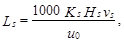
где Ks - коэффициент, принимаемый по табл. 27;
Hs - расчетная глубина песколовки, м, принимаемая для аэрируемых песколовок равной половине общей глубины;
vs - скорость движения сточных вод, м/с, принимаемая по табл. 28;
u0 - гидравлическая крупность песка, мм/с, принимаемая в зависимости от требуемого диаметра задерживаемых частиц песка.
Таблица 27
|
Гидравлическая крупность песка u0, мм/с |
Значение Ks в зависимости от типа песколовок и отношения ширины В к глубине Н аэрируемых песколовок |
||||
|
горизонтальные |
аэрируемые |
||||
|
В:Н = 1 |
В:Н = 1,25 |
В:Н = 1,5 |
|||
|
0,15 |
13,2 |
- |
2,62 |
2,50 |
2,39 |
|
0,20 |
18,7 |
1,7 |
2,43 |
2,25 |
2,08 |
|
0,25 |
24,2 |
1,3 |
- |
- |
- |
Таблица 28
|
Гидравлическая крупность песка u0, мм/с |
Скорость движения сточных вод vs, м/с, при притоке |
Глубина Н, м |
Количество задерживаемого песка, л/чел.-сут |
Влажность песка, % |
|||
|
минимальном |
максимальном |
||||||
|
Горизонтальная |
18,7-24,2 |
0,15 |
0,3 |
0,5-2 |
0,02 |
60 |
55-60 |
|
Аэрируемая |
13,2-18,7 |
- |
0,08-0,12 |
0,7-3,5 |
0,03 |
- |
90-95 |
|
Тангенциальная |
18,7-24,2 |
- |
- |
0,5 |
0,02 |
60 |
70-75 |
6.28. При проектировании песколовок следует принимать общие расчетные параметры для песколовок различных типов по табл. 28:
а) для горизонтальных песколовок - продолжительность протекания сточных вод при максимальном притоке не менее 30 с;
б) для аэрируемых песколовок:
установку аэраторов из дырчатых труб - на глубину 0,7 Hs вдоль одной из продольных стен над лотком для сбора песка;
интенсивность аэрациии - 3-5 м3/(м2× ч);
поперечный уклон дна к песковому лотку - 0,2-0,4;
впуск воды - совпадающий с направлением вращения воды в песколовке, выпуск - затопленный;
отношение ширины к глубине отделения - В:Н = 1:1,5;
в) для тангенциальных песколовок:
нагрузку - 110 м3/(м2 × ч) при максимальном притоке;
впуск воды - по касательной на всей расчетной глубине;
глубину - равную половине диаметра;
диаметр - не более 6 м.
6.29. Удаление задержанного песка из песколовок всех типов следует предусматривать:
вручную - при объеме его до 0,1 м3/сут;
механическим или гидромеханическим способом с транспортированием песка к приямку и последующим отводом за пределы песколовок гидроэлеваторами, песковыми насосами и другими способами - при объеме его свыше 0,1 м3/сут.
6.30. Расход производственной воды qh, л/с, при гидромеханическом удалении песка (гидросмывом с помощью трубопровода со спрысками, укладываемого в песковый лоток) необходимо определять по формуле
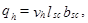
где vh - восходящая скорость смывной воды в лотке, принимаемая равной 0,0065 м/с;
lsc - длина пескового лотка, равная длине песколовки за вычетом длины пескового приямка, м;
bsc - ширина пескового лотка, равная 0,5 м.
6.31. Количество песка, задерживаемого в песколовках, для бытовых сточных вод надлежит принимать 0,02 л/(чел×сут), влажность песка 60 %, объемный вес 1,5 т/м3.
6.32. Объем пескового приемка следует принимать не более двухсуточного объема выпадающего песка, угол наклона стенок приямка к горизонту - не менее 60°.
6.33. Для подсушивания песка, поступающего из песколовок, необходимо предусматривать площадки с ограждающими валиками высотой 1-2 м. Нагрузку на площадку надлежит предусматривать не более 3 м3/м2 в год при условии периодического вывоза подсушенного песка в течение года. Допускается применять накопители со слоем напуска песка до 3 м в год. Удаляемую с песковых площадок воду необходимо направлять в начало очистных сооружений.
Для съезда автотранспорта на песковые площадки надлежит устраивать пандус уклоном 0,12-0,2.
6.34. Для отмывки и обезвоживания песка допускается предусматривать устройство бункеров, приспособленных для последующей погрузки песка в мобильный транспорт. Вместимость бункеров должна рассчитываться на 1,5 - 5-суточное хранение песка. Для повышения эффективности отмывки песка следует применять бункера в сочетании с напорными гидроциклонами диаметром 300 мм и напором пульпы перед гидроциклоном 0,2 МПа (2 кгс/см2). Дренажная вода из песковых бункеров должна возвращаться в канал перед песколовками.
В зависимости от климатических условий бункер следует размещать в отапливаемом здании или предусматривать его обогрев.
6.35. Для поддержания в горизонтальных песколовках постоянной скорости движения сточных вод на выходе из песколовки надлежит предусматривать водослив с широким порогом.
6.36. При необходимости усреднения состава и расхода производственных сточных вод надлежит предусматривать усреднители.
6.37. Тип усреднителя (барботажный, с механическим перемешиванием, многоканальный) следует выбирать с учетом характера колебаний концентрации загрязняющих веществ (циклические, произвольные колебания и залповые сбросы), а также вида и количества взвешенных веществ.
6.38. Число секции усреднителей необходимо принимать не менее двух, причем обе рабочие.
При наличии в сточных водах взвешенных веществ следует предусматривать мероприятия по предотвращению осаждения их в усреднителе.
6.39. В усреднителях с барботированием или механическим перемешиванием при наличии в стоках легколетучих ядовитых веществ следует предусматривать перекрытие и вентиляционную систему.
6.40. Усреднитель барботажного типа необходимо применять для усреднения состава сточных вод с содержанием взвешенных веществ до 500 мг/л гидравлической крупностью до 10 мм/с при любом режиме их поступления.
6.41. Объем усреднителя Wz, м3, при залповом сбросе следует рассчитывать по формулам:
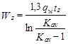
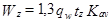
где qw - расход сточных вод, м /ч;
tz - длительность залпового сброса, ч;
Kav - требуемый коэффициент усреднения, равный:
здесь Сmax - концентрация загрязнений в залповом сбросе;
Сmid - средняя концентрация загрязнений в сточных водах;
Сadm - концентрация, допустимая по условиям работы последующих сооружений.
6.42. Объем усреднителя Wcir, м3, при циклических колебаниях надлежит рассчитывать по формулам:
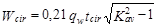
при Kav = 5 и более, (23)
где tcir - период цикла колебаний, ч;
Kav - коэффициент усреднения, определяемый по формуле (21).
6.43. При произвольных колебаниях объем усреднителя Wes, м3, следует определять пошаговым расчетом (методом последовательного приближения) по формуле
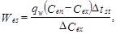
где Dtst - временной шаг расчета, принимаемый не более 1 ч;
DСex - приращение концентрации на выходе усреднителя за текущий шаг расчета (может быть как положительным, так и отрицательным), г/м3 .
Расчет следует начинать с неблагоприятных участков графика почасовых колебаний.
Если получающийся в результате расчета ряд Сex не удовлетворяет технологическим требованиям (например, по максимальной величине Сex), расчет следует повторить при увеличенном Wes. Начальную величину Wes необходимо назначать ориентировочно исходя из оценки общего характера колебаний Сex. График колебаний на входе в усреднитель Cen должен приниматься фактический (по данному производству или аналогу) или по технологическому заданию.
6.44. Распределение сточных вод по площади усреднителя барботажного типа должно быть максимально равномерным с использованием системы каналов и подающих лотков с придонными отверстиями или треугольными водосливами при скорости течения в лотке не менее 0,4 м/с.
6.45. Барботирование следует осуществлять через перфорированные трубы, укладываемые строго горизонтально вдоль резервуара. При пристенном расположении барботеров расстояние от них до противоположной стены следует принимать 1-1,5h, между барботерами - 2-3h, при промежуточном расположении расстояние барботеров от стены 1-1,5h, где h - глубина погружения барботера. При переменной глубине воды в усреднителе h следует принимать при максимальном уровне.
6.46. При расчете необходимо принимать:
интенсивность барботирования при пристенных барботерах (создающих один циркуляционный поток) - 6 м3/ч на 1 м, промежуточных (создающих два циркуляционных потока) - 12 м3/ч на 1 м;
интенсивность барботирования для предотвращения выпадения в осадок взвесей в пристенных барботерах - до 12 м3/ч на 1 м, в промежуточных - до 24 м3/ч на 1 м;
перепад давления в отверстиях барботера - 1-4 кПа (0,1-0,4 м вод. ст.).
6.47. Усреднитель с механическим перемешиванием следует применять для усреднения состава сточных вод с содержанием взвешенных веществ свыше 500 мг/л при любом режиме их поступления. Подача осуществляется периферийным желобом равномерно по периметру усреднителя.
6.48. Объем усреднителя с механическим перемешиванием должен рассчитываться аналогично объему усреднителя барботажного типа.
6.49. Многоканальные усреднители с заданным распределением сточных вод по каналам надлежит применять для выравнивания залповых сбросов сточных вод с содержанием взвешенных веществ гидравлической крупностью до 5 мм/с при концентрации до 500 мг/л.
6.50. Объем Wav, м3, многоканальных усреднителей при залповых сбросах высококонцентрированных сточных вод следует рассчитывать по формуле
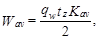
где qw - расход сточных вод, м3/ч;
tz - длительность залпового сброса, ч;
Kav - коэффициент усреднения.
6.51. Для снижения расчетных расходов сточных вод. поступающих на очистные сооружения, допускается устройство регулирующих резервуаров.
6.52. Регулирующие резервуары надлежит размещать после решеток и песколовок с подачей в них сточных вод через разделительную камеру, отделяющую расход, превышающий усредненный.
6.53. Конструкцию регулирующих резервуаров следует принимать аналогичной первичным отстойникам с соответствующими устройствами для удаления осадка и перекачкой осветленной воды на последующие сооружения для ее очистки в часы минимального притока.
6.54. Оптимальную величину зарегулированного расчетного расхода следует определять технико-экономическим расчетом, подбирая последовательно ряд значений коэффициентов неравномерности после регулирования Кreg, объемов регулирующего резервуара и объемов сооружений для очистки сточных вод и вспомогательных сооружений (воздуходувной и насосных станций и т. д.).
6.55. Подбор значений коэффициентов неравномерности после регулирования Кreg объемов регулирующего резервуара Wreg следует выполнять по соотношениям:
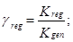
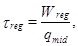
где Кgen - общий коэффициент неравномерности поступления сточных вод;
qmid - среднечасовой расход сточных вод.
Зависимость между greg и treg допускается принимать по табл. 29.
Таблица 29
|
greg |
1 |
0,95 |
0,9 |
0,85 |
0,8 |
0,75 |
0,67 |
0,65 |
|
treg |
0 |
0,24 |
0,5 |
0,9 |
1,5 |
2,15 |
3,3 |
4,4 |
6.56. При необходимости усреднения расхода и концентрации сточных вод объем усреднителя и концентрацию загрязняющих веществ необходимо определять пошаговым расчетом.
Приращения объема водной массы DW, м3, и концентрации DС, г/м3, на текущем шаге расчета следует определять по формулам:
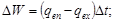
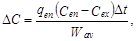
где qen, qex, Cen, Cex - расходы сточных вод и концентрации загрязняющих веществ на предыдущем шаге расчета;
Wav - объем усреднителя в момент расчета, м3.
6.57. Тип отстойника (вертикальный, радиальный, с вращающимся сборно-распределительным устройством, горизонтальный, двухъярусный и др.) необходимо выбирать с учетом принятой технологической схемы очистки сточных вод и обработки их осадка, производительности сооружений, очередности строительства, числа эксплуатируемых единиц, конфигурации и рельефа площадки, геологических условий, уровня грунтовых вод и т. п.
6.58. Число отстойников следует принимать: первичных - не менее двух, вторичных - не менее трех при условии, что все отстойники являются рабочими. При минимальном числе их расчетный объем необходимо увеличивать в 1,2-1,3 раза.
6.59. Расчет отстойников, кроме вторичных после биологической очистки, надлежит производить по кинетике выпадения взвешенных веществ с учетом необходимого эффекта осветления.
Желоба двухъярусных отстойников следует рассчитывать из условия продолжительности отстаивания 1,5 ч.
Расчет вторичных отстойников надлежит производить согласно пп. 6.160-6.163.
6.60. Расчетное значение гидравлической крупности u0, мм/с, необходимо определять по кривым кинетики отстаивания Э = f(t), получаемым экспериментально, с приведением полученной в лабораторных условиях величины к высоте слоя, равной глубине проточной части отстойника, по формуле
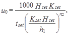
где Hset - глубина проточной части в отстойнике, м;
Kset - коэффициент использования объема проточной части отстойника;
tset - продолжительность отстаивания, с, соответствующая заданному эффекту очистки и полученная в лабораторном цилиндре в слое h1; для городских сточных вод данную величину допускается принимать по табл. 30;
n2 - показатель степени, зависящий от агломерации взвеси в процессе осаждения; для городских сточных вод следует определять по черт. 2.
Примечания: 1. Расчет отстойников для сточных вод, содержащих загрязняющие вещества легче воды (нефтепродукты, масла, жиры и т. п.), следует выполнять с учетом гидравлической крупности всплывающих частиц.
2. При наличии в воде частиц тяжелей и легче воды за расчетную надлежит принимать меньшую гидравлическую крупность.
3. В случае, когда температура сточной воды в производственных условиях отличается от температуры воды, при которой определялась кинетика отстаивания, необходимо вводить поправку
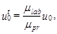
где mlab, mpr - вязкость воды при соответствующих температурах в лабораторных и производственных условиях;
u0 - гидравлическая крупность частиц, полученная по формуле (30), мм/с.
Таблица 30
|
Продолжительность отстаивания tset, с, в слое h1 = 500 мм при концентрации взвешенных веществ, мг/л |
|||
|
200 |
300 |
400 |
|
|
20 |
600 |
540 |
480 |
|
30 |
960 |
900 |
840 |
|
40 |
1440 |
1200 |
1080 |
|
50 |
2160 |
1800 |
1500 |
|
60 |
7200 |
3600 |
2700 |
|
70 |
- |
- |
7200 |
Черт. 2. Зависимость показателя степени n2 от исходной концентрации взвешенных веществ в городских сточных водах при эффекте отстаивания
1 - Э = 50 %; 2 - Э = 60 %; 3 - Э = 70 %
6.61. Основные расчетные параметры отстойников надлежит определять по табл. 31.
Таблица 31
|
Коэффициент использования объема Кset |
Рабочая глубина части Hset, м |
Ширина Bset, м |
Скорость рабочего потока vw, мм/с |
Уклон днища к иловому приямку |
|
|
Горизонтальный |
0,5 |
1,5-4 |
2Hset - 5Hset |
5-10 |
0,005-0,05 |
|
Радиальный |
0,45 |
1,5-5 |
- |
5-10 |
0,005-0,05 |
|
Вертикальный |
0,35 |
2,7-3,8 |
- |
- |
- |
|
С вращающимся сборно-распределительным устройством |
0,85 |
0,8-1,2 |
- |
- |
0,05 |
|
С нисходяще-восходящим потоком |
0,65 |
2,7-3,8 |
- |
2uo - 3uo |
- |
|
С тонкослойными блоками: |
0,5-0,7 |
0,025-0,2 |
2-6 |
- |
- |
|
противоточная (прямоточная) схема работы |
|||||
|
перекрестная схема работы |
0,8 |
0,025-0,2 |
1,5 |
- |
0,005 |
Примечания: 1. Коэффициент Кset определяет гидравлическую эффективность отстойника и зависит от конструкции водораспределительных и водосборных устройств; указывается организацией-разработчиком.
2. Величину турбулентной составляющей vtb, мм/с, в зависимости от скорости рабочего потока vw, мм/с, надлежит определять по табл. 32.
Таблица 32
|
5 |
10 |
15 |
|
|
vtb, мм/с |
0 |
0,05 |
0,1 |
6.62. Производительность одного отстойника qset, м3/ч, следует определять исходя из заданных геометрических размеров сооружения и требуемого эффекта осветления сточных вод по формулам:
а) для горизонтальных отстойников
(32)
б) для отстойников радиальных, вертикальных и с вращающимся сборно-распределительным устройством
(33)
в) для отстойников с нисходяще-восходящим потоком
(34)
г) для отстойников с тонкослойными блоками при перекрестной схеме работы
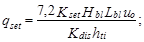
д) то же, при противоточной схеме
(36)
где Кset - коэффициент использования объема, принимаемый по табл. 31;
Lset - длина секции, отделения, м;
Lbl - длина тонкослойного блока (модуля), м;
Bset - ширина секции, отделения, м;
Bbl - ширина тонкослойного блока, м;
Dset - диаметр отстойника, м;
den - диаметр впускного устройства, м;
u0 - гидравлическая крупность задерживаемых частиц, мм/с, определяемая по формуле (30);
vtb - турбулентная составляющая, мм/с, принимаемая по табл. 32 в зависимости от скорости потока в отстойнике vw, мм/с;
Hbl - высота тонкослойного блока, м;
hti - высота яруса тонкослойного блока (модуля), м;
Kdis - коэффициент сноса выделенных частиц, принимаемый при плоских пластинах равным 1,2, при рифленых пластинах - 1.
6.63. Основные конструктивные параметры следует принимать:
а) для горизонтальных и радиальных отстойников:
впуск исходной воды и сбор осветленной - равномерными по ширине (периметру) впускного и сборного устройств отстойника;
высоту нейтрального слоя для первичных отстойников - на 0,3 м выше днища (на выходе из отстойника), для вторичных - 0,3 м и глубину слоя ила 0,3-0,5 м;
угол наклона стенок илового приямка - 50-55°;
б) для вертикальных отстойников:
длину центральной трубы - равной глубине зоны отстаивания;
скорость движения рабочего потока в центральной трубе - не более 30 мм/с;
диаметр раструба - 1,35 диаметра трубы;
диаметр отражательного щита - 1,3 диаметра раструба;
угол конусности отражательного щита - 146°;
скорость рабочего потока между раструбом и отражательным щитом - не более 20 мм/с для первичных отстойников и не более 15 мм/с для вторичных;
высоту нейтрального слоя между низом отражательного щита и уровнем осадка - 0,3 м;
угол наклона конического днища - 50-60°;
в) для отстойников с нисходяще-восходящим потоком:
площадь зоны нисходящего потока - равной площади зоны восходящего;
высоту перегородки, разделяющей зоны, - равной 2/3 Hset;
уровень верхней кромки перегородки - выше уровня воды на 0,3 м, но не выше стенки отстойника;
распределительный лоток переменного сечения - внутри разделительной перегородки. Начальное сечение лотка следует рассчитывать на пропуск расчетного расхода со скоростью не менее 0,5 м/с, в конечном сечении скорость - не менее 0,1 м/с.
Для равномерного распределения воды кромку водослива распределительного лотка следует выполнять в виде треугольных водосливов через 0,5 м;
г) для отстойников с тонкослойными блоками - угол наклона пластин от 45 до 60°.
6.64. Для повышения степени очистки или для обеспечения возможности увеличения производительности эксплуатируемых станций существующие отстойники (горизонтальные, радиальные, вертикальные) могут быть дополнены блоками из тонкослойных элементов. В этом случае блоки необходимо располагать на выходе воды из отстойника перед водосборным лотком.
6.65. Количество осадка Qmud, м3/ч, выделяемого при отстаивании, надлежит определять исходя из концентрации взвешенных веществ в поступающей воде Cen и концентрации взвешенных веществ в осветленной воде Cex:
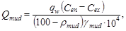
где qw - расход сточных вод, м3/ч;
rmud - влажность осадка, %;
gmud - плотность осадка, г/см3.
6.66. Исходя из объема образующегося осадка и вместимости зоны накопления его в отстойнике, следует определять интервал времени между выгрузками осадка. При удалении осадка под гидростатическим давлением вместимость приямка первичных отстойников и вторичных отстойников после биофильтров надлежит предусматривать равной объему осадка, выделенного за период не более 2 сут, вместимость приямка вторичных отстойников после аэротенков - не более двухчасового пребывания осадка.
При механизированном удалении осадка вместимость зоны накопления его в первичных отстойниках надлежит принимать по количеству выпавшего осадка за период не более 8 ч.
6.67. Перемещение выпавшего осадка к приямкам надлежит предусматривать механическим способом или созданием соответствующего наклона стенок (не менее 50°).
6.68. Удаление осадка из приямка отстойника надлежит предусматривать самотеком, под гидростатическим давлением, насосами, предназначенными для перекачки жидкости с большим содержанием взвешенных веществ, гидроэлеваторами, эрлифтами, ковшовыми элеваторами, грейфером и т. д.
Гидростатическое давление при удалении осадка из отстойников бытовых сточных вод необходимо принимать, не менее, кПа (м вод. ст.): первичных - 15(1,5), вторичных - 12(1,2) после биофильтров и 9 (0,9) - после аэротенков.
Для вторичных отстойников рекомендуется предусматривать возможность изменения высоты гидростатического напора.
Диаметр труб для удаления осадка необходимо принимать не менее 200 мм.
6.69. Для удержания всплывших загрязняющих веществ перед водосборным устройством следует предусматривать полупогруженные перегородки и удаление накопленных на поверхности воды веществ.
Глубина погружения перегородки под уровень воды должна быть не менее 0,3 м.
Высоту борта отстойника над поверхностью воды надлежит принимать 0,3 м.
6.70. Водоприемные лотки должны быть оборудованы водосливами с тонкой стенкой. Крепление водослива к лотку должно обеспечивать возможность его регулирования по высоте. Водосливная кромка может быть прямой или с треугольными вырезами. Нагрузка на 1 м водослива не должна превышать 10 л/с.
6.71. Двухъярусные отстойники надлежит предусматривать одинарные или спаренные. В спаренных отстойниках следует обеспечивать возможность изменения направления движения сточных вод в осадочных желобах.
6.72. Двухъярусные отстойники надлежит проектировать согласно пп. 6.57-6.59, 6.65-6.70. При этом следует принимать:
свободную поверхность водного зеркала для всплывания осадка - не менее 20 % площади отстойника в плане;
расстояние между стенками соседних осадочных желобов - не менее 0,5 м;
наклон стенок осадочного желоба к горизонту - не менее 50°; стенки должны перекрывать одна другую не менее чем на 0,15 м;
глубину осадочного желоба - 1,2-2,5 м, ширину щели осадочного желоба - 0,15 м;
высоту нейтрального слоя от щели желоба до уровня осадка в септической камере - 0,5 м;
уклон конического днища септической камеры - не менее 30°;
влажность удаляемого осадка - 90 %;
распад беззольного вещества осадка - 40 %;
эффективность задержания взвешенных веществ - 40-50 %.
6.73. Вместимость септической камеры двухъярусных отстойников надлежит определять по табл. 33.
Таблица 33
|
6 |
7 |
8,5 |
10 |
12 |
15 |
20 |
|
|
Вместимость септической камеры, л/чел.-год |
110 |
95 |
80 |
65 |
50 |
30 |
15 |
Примечания: 1. Вместимость септической камеры двухъярусных отстойников должна быть увеличена на 70 % при подаче в нее ила из аэротенков на полную очистку и высоконагружаемых биофильтров и на 30 % при подаче ила из отстойников после капельных биофильтров и аэротенков на неполую очистку. Впуск ила должен производиться на глубине 0,5 м ниже щели желобов.
2. Вместимость септической камеры двухъярусных отстойников для осветления сточной воды при подаче ее на поля фильтрации допускается уменьшать не более чем на 20 %.
6.74. При среднегодовой температуре воздуха до 3,5 °С двухъярусные отстойники с пропускной способностью до 500 м3/сут должны быть размещены в отапливаемых помещениях, при среднегодовой температуре воздуха от 3,5 до 6 °С и пропускной способности до 100 м3/сут - в неотапливаемых помещениях.
6.75. Осветлители-перегниватели следует проектировать в виде комбинированного сооружения, состоящего из осветлителя с естественной аэрацией, концентрически располагаемого внутри перегнивателя.
6.76. Осветлители следует проектировать в виде вертикальных отстойников с внутренней камерой флокуляции, с естественной аэрацией за счет разности уровней воды в распределительной чаше и осветлителе.
При проектировании осветлителей необходимо принимать:
диаметр осветлителя - не более 9 м;
разность уровней воды в распределительной чаше и осветлителе - 0,6 м без учета потерь напора в коммуникациях;
вместимость камеры флокуляции - на пребывание в ней сточных вод не более 20 мин;
глубину камеры флокуляции - 4-5 м;
скорость движения воды в зоне отстаивания - 0,8-1,5 мм/с, в центральной трубе - 0,5-0,7 м/с;
диаметр нижнего сечения камеры флокуляции - исходя из средней скорости 8-10 мм/с;
расстояние между нижним краем камеры флокуляции и поверхностью осадка в иловой части - не менее 0,6 м;
уклон днища осветлителя - не менее 50;
снижение концентрации загрязняющих веществ по взвешенным веществам - до 70 % и по БПКполн - до 15 %.
6.77. При проектировании перегнивателей надлежит принимать:
вместимость перегнивателя по суточной дозе загрузки осадка - в зависимости от влажности осадка и среднезимней температуры сточных вод;
суточную дозу загрузки осадка - по табл. 34;
Таблица 34
|
6 |
7 |
8,5 |
10 |
12 |
15 |
20 |
|
|
Суточная доза загрузки осадка, % |
0,72 |
0,85 |
1,02 |
1,28 |
1,7 |
2,57 |
5 |
Примечания: 1. Суточная доза загрузки указана для осадка влажностью 95 %. При влажности Pmud, отличающейся от 95 %, суточная доза загрузки уточняется умножением табличного значения на отношение
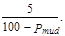
2. Суточные дозы загрузки осадка производственных сточных вод устанавливаются экспериментально.
ширину кольцевого пространства между наружной поверхностью стен осветлителя и внутренней поверхностью стен перегнивателя - не менее 0,7 м;
уклон днища - не менее 30°;
разрушение корки гидромеханическим способом - путем подачи осадка d кольцевой трубопровод под давлением через сопла, наклоненные под углом 45° к поверхности осадка.
6.78. Септики надлежит применять для механической очистки сточных вод, поступающих на поля подземной фильтрации, в песчано-гравийные фильтры, фильтрующие траншеи и фильтрующие колодцы.
6.79. Полный расчетный объем септика надлежит принимать: при расходе сточных вод до 5 м3/сут - не менее 3-кратного суточного притока, при расходе свыше 5 м3/сут - не менее 2,5-кратного.
Указанные расчетные объемы септиков следует принимать исходя из условия очистки их не менее одного раза в год.
При среднезимней температуре сточных вод выше 10 °С или при норме водоотведения свыше 150 л/сут на одного жителя полный расчетный объем септика допускается уменьшать на 15-20 %.
6.80. В зависимости от расхода сточных вод следует принимать: однокамерные септики - при расходе сточных вод до 1 м3/сут, двухкамерные - до 10 и трехкамерные - свыше 10 м3/сут.
6.81. Объем первой камеры следует принимать: в двухкамерных септиках - 0,75, в трехкамерных - 0,5 расчетного объема. При этом объем второй и третьей камер надлежит принимать по 0,25 расчетного объема.
В септиках, выполняемых из бетонных колец, все камеры следует принимать равного объема. В таких септиках при производительности свыше 5 м3/сут камеры надлежит предусматривать без отделений.
6.82. При необходимости обеззараживания сточных вод, выходящих из септика, следует предусматривать контактную камеру, размер которой в плане надлежит принимать не менее 0,75´1 м.
6.83. Лоток подводящей трубы должен быть расположен не менее чем на 0,05 м выше расчетного уровня жидкости в септике. Необходимо предусматривать устройства для задержания плавающих веществ и естественную вентиляцию.
6.84. Выпуски из зданий должны присоединяться к септикам через смотровые колодцы.
6.85. Для механической очистки сточных вод от взвешенных веществ допускается применять открытые и напорные гидроциклоны.
6.86. Открытые гидроциклоны необходимо применять для выделения всплывающих и оседающих грубодисперсных примесей гидравлической крупностью свыше 0,2 мм/с и скоагулированной взвеси.
Напорные гидроциклоны следует применять для выделения из сточных вод грубодисперсных примесей главным образом минерального происхождения.
Гидроциклоны могут быть использованы в процессах осветления сточных вод, сгущения осадков, обогащения известкового молока, отмывки песка от органических веществ, в том числе нефтепродуктов.
При осветлении сточных вод аппараты малых размеров обеспечивают больший эффект очистки. При сгущении осадков минерального происхождения следует применять гидроциклоны больших диаметров (свыше 150 мм).
6.87. Удельную гидравлическую нагрузку qhc, м3/(м2×ч), для открытых гидроциклонов следует определять по формуле
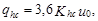
где u0 - гидравлическая крупность частиц, которые необходимо выделить для обеспечения требуемого эффекта, мм/с;
Khc - коэффициент пропорциональности, зависящий от типа гидроциклона и равный для гидроциклонов:
без внутренних устройств - 0,61;
с конической диафрагмой и внутренним цилиндром - 1,98;
многоярусного с центральными выпусками
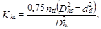
здесь nti - число ярусов;
Dhc - диаметр гидроциклона, м;
den - диаметр окружности, на которой располагаются раструбы выпусков, м; многоярусного с периферийным отбором осветленной воды
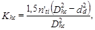
здесь nti - число пар ярусов;
dd - диаметр отверстия средней диафрагмы пары ярусов, м.
6.88. Производительность одного аппарата Qhc, м3/ч, следует определять по формуле
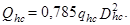
6.89. Удаление выделенного осадка из открытых гидроциклонов следует предусматривать непрерывное под гидростатическим давлением, гидроэлеваторами или механизированными средствами.
Всплывающие примеси, масла и нефтепродукты необходимо задерживать полупогруженной перегородкой.
6.90. Расчет напорных гидроциклонов надлежит производить исходя из крупности задерживаемых частиц d и их плотности.
Диаметр гидроциклона Dhc следует определять по табл. 35.
6.91. Основные размеры напорного гидроциклона следует подбирать по данным заводов-изготовителей.
Давление на входе в напорный гидроциклон надлежит принимать:
0,15-0,4 МПа (1,5-4 кгс/см2) - при одноступенчатых схемах осветления и сгущения осадков и многоступенчатых установках, работающих с разрывом струи;
0,35-0,6 МПа (3,5-6 кгс/см2) - при многоступенчатых схемах, работающих без разрыва струи.
Число резервных аппаратов следует принимать:
при очистке сточных вод и уплотнении осадков, твердая фаза которых не обладает абразивными свойствами, - один при числе рабочих аппаратов до 10, два - при числе до 15 и по одному на каждые десять при числе рабочих аппаратов свыше 15;
при очистке сточных вод и осадков с абразивной твердой фазой - 25 % числа рабочих аппаратов.
6.92. Производительность напорного гидроциклона Qhc, м3/ч, назначенных размеров следует рассчитывать по формуле
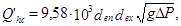
где g - ускорение силы тяжести, м/с2;
DP - потери давления в гидроциклоне, МПа;
den, dex - диаметры питающего и сливного патрубков, мм.
6.93. В зависимости от требуемой эффективности очистки сточных вод и степени сгущения осадков обработка в напорных гидроциклонах может осуществляться в одну. Две или три ступени путем последовательного соединения аппаратов с разрывом и без разрыва струи.
Для сокращения потерь воды с удаляемым осадком шламовый патрубок гидроциклона первой ступени следует герметично присоединять к шламовому резервуару.
Таблица 35
|
25 |
40 |
60 |
80 |
100 |
125 |
160 |
200 |
250 |
320 |
400 |
500 |
|
|
d, мм |
8-25 |
10-30 |
15-35 |
18-40 |
20-50 |
25-60 |
30-70 |
35-85 |
40-110 |
45-150 |
50-170 |
55-200 |
На первой ступени следует использовать гидроциклоны больших размеров для задержания основной массы взвешенных веществ и крупных частиц взвеси, которые могут засорить гидроциклоны малых размеров, используемые на последующих ступенях установки.
6.94. Осадительные центрифуги непрерывного или периодического действия следует применить для выделения из сточных вод мелкодисперсных взвешенных веществ, когда для их выделения не могут быть применены реагенты, а также при необходимости извлечения из осадка ценных продуктов и их утилизации.
Центрифуги непрерывного действия следует применять для очистки сточных вод с расходом до 100 м3/ч, когда требуется выделить частицы гидравлической крупностью 0,2 мм/с (противоточные) и 0,05 мм/с (прямоточные); центрифуги периодического действия - для очистки сточных вод, расход которых не превышает 20 м3/ч, при необходимости выделения частиц гидравлический крупностью 0,05-0,01 мм/с.
Концентрация механических загрязняющих веществ не должна превышать 2-3 г/л.
6.95. Подбор необходимого типоразмера осадительной центрифуги необходимо производить по величине требуемого фактора разделения Fr, при котором обеспечивается наибольшая степень очистки. Фактор разделения Fr и продолжительность центрифугирования tcf, с, следует определять по результатам экспериментальных данных, полученных в лабораторных условиях.
6.96. Объемную производительность центрифуги Qcf, м3/ч, надлежит рассчитывать по формуле
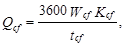
где Wcf - объем ванны ротора центрифуги, м3;
Kcf - коэффициент использования объема центрифуги, принимаемый равным 0,4-0,6.
6.97. Флотационные установки надлежит применять для удаления из воды взвешенных веществ, ПАВ, нефтепродуктов, жиров, масел, смол и других веществ, осаждение которых малоэффективно.
6.98. Флотационные установки также допускается применять:
для удаления загрязняющих веществ из сточных вод перед биологической очисткой;
для отделения активного ила во вторичных отстойниках;
для глубокой очистки биологически очищенных сточных вод;
при физико-химической очистке с применением коагулянтов и флокулянтов;
в схемах повторного использования очищенных вод.
6.99. Напорные, вакуумные, безнапорные, электрофлотационные установки надлежит применять при очистке сточных вод с содержанием взвешенных веществ свыше 100-150 мг/л (с учетом твердой фазы, образующейся при добавлении коагулянтов). При меньшем содержании взвесей для фракционирования в пену ПАВ, нефтепродуктов и др. и для пенной сепарации могут применяться установки импеллерные, пневматические и с диспергированием воздуха через пористые материалы.
6.100. Для осуществления процесса разделения фаз допускается применять прямоугольные (с горизонтальным и вертикальным движением воды) и круглые (с радиальным и вертикальным движением воды) флотокамеры. Объем флотокамер складывается из объемов рабочей зоны (глубина 1,0-3,0 м), зоны формирования и накопления пены (глубина 0,2-1,0 м), зоны осадка (глубина 0,5-1,0 м). Гидравлическая нагрузка - 3-6 м3/(м2×ч). Число флотокамер должно быть не менее двух, все камеры рабочие.
6.101. Для повышения степени задержания взвешенных веществ допускается использовать коагулянты и флокулянты. Вид реагента и его доза зависят от физико-химических свойств обрабатываемой воды и требований к качеству очистки.
6.102. Влажность и объем пены (шлама) зависят от исходной концентрации взвешенных и других загрязняющих веществ и от продолжительности накопления ее на поверхности (периодический или непрерывный съем). Периодический съем следует применять в напорных, безнапорных и электрофлотационных установках. Расчетную влажность пены следует принимать, %: при непрерывном съеме - 96-98; при периодическом съеме с помощью скребков транспортеров или вращающихся скребков - 94-95; при съеме шнеками и скребковыми тележками - 92-93. В осадок выпадает от 7 до 10 % задержанных веществ при влажности 95-98 %. Объем пены (шлама) Wmud при влажности 94-95 % может быть определен по формуле (% к объему обрабатываемой воды)
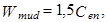
где Cen - исходная концентрация нерастворенных примесей, г/л.
6.103. При проектировании установок импеллерных, пневматических и с диспергированием воздуха через пористые материалы необходимо принимать:
продолжительность флотации - 20-30 мин;
расход воздуха при работе в режиме флотации - 0,1-0,5 м3/м3;
расход воздуха при работе в режиме пенной сепарации - 3-4 м3/м3 (50-200 л на 1 г извлекаемых ПАВ) или 30-50 м3/(м2×ч);
глубину воды в камере флотации - 1,5-3 м;
окружную скорость импеллера - 10-15 м/с;
камеру для импеллерной флотации - квадратную со стороной, равной 6D (D - диаметр импеллера 200-750 мм);
скорость выхода воздуха из сопел при пневматической флотации -100-200 м/с;
диаметр сопел - 1-1,2 мм;
диаметр отверстий пористых пластин - 4-20 мкм;
давление воздуха под пластинами - 0,1-0,2 МПа (1-2 кгс/см2).
6.104. При проектировании напорных флотационных установок следует принимать:
продолжительность флотации - 20-30 мин;
количество подаваемого воздуха, л на 1 кг извлекаемых загрязняющих веществ: 40 - при исходной их концентрации Cen < 200 мг/л, 28 - при Cen = 500, 20 - при Cen = 1000 мг/л, 15 - при Cen = 3-4 г/л;
схему флотации - с рабочей жидкостью, если прямая флотация не обеспечивает подачу воздуха в нужном количестве;
флотокамеры с горизонтальным движением воды при производительности до 100 м3/ч, с вертикальным - до 200, с радиальным - до 1000 м3/ч;
горизонтальную скорость движения воды в прямоугольных и радиальных флотокамерах - не более 5 мм/с;
подачу воздуха через эжектор во всасывающий патрубок насоса - при небольшой высоте всасывания (до 2 м) и незначительных колебаниях уровня воды в приемном резервуаре (0,5-1,0 м), компрессором в напорный бак - в остальных случаях.
6.105. Для удаления растворенных газов, находящихся в сточных водах в свободном состоянии, надлежит применять дегазаторы с барботажным слоем жидкости, с насадкой различной формы и полые распылительные (разбрызгивающие) аппараты.
6.106. Работа дегазаторов допускается при атмосферном давлении или под вакуумом. Для интенсификации процесса в дегазатор следует вводить воздух или инертный газ.
6.107. Количество вводимого воздуха на один объем дегазируемой воды при работе под вакуумом или атмосферном давлении следует принимать соответственно для аппаратов:
с насадкой - 3 и 5 объемов;
барботажного - 5 и 12-15 объемов;
распылительного - 10 и 20 объемов.
6.108. Высоту рабочего слоя насадки следует принимать от 2 до 3 м, барботажного слоя - не более 3 м, в распылительном аппарате - 5 м. В качестве насадки допускается применять кислотоупорные керамические кольца размером 25´25´4 мм или деревянные хордовые насадки.
6.109. Для колонных дегазаторов отношение высоты рабочего слоя к диаметру аппарата должно быть не более 3 при работе под вакуумом и не более 7 при атмосферном давлении, для барботажных аппаратов отношение длины к ширине не более 4.
6.110. Аппараты с насадкой надлежит применять при содержании взвешенных веществ в дегазируемой воде не более 500 мг/л, барботажные и распылительные - при большем их содержании.
6.111. Для распределения жидкости в аппаратах надлежит использовать центробежные насадки с выходным отверстием 10´20 мм.
6.112. Количество удаляемого газа Wg, м3, следует определять по формуле
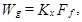
где Ff - общая поверхность контакта фаз, м2;
Kx - коэффициент массопередачи, отнесенный к единице поверхности контакта фаз или поперечного сечения аппарата и принимаемый по данным научно-исследовательских организаций.
6.113. Преаэраторы и биокоагуляторы следует применять:
для снижения содержания загрязняющих веществ в отстоенных сточных водах сверх обеспечиваемого первичными отстойниками;
для извлечения (за счет сорбции) ионов тяжелых металлов и других загрязняющих веществ, неблагоприятно влияющих на процесс биологической очистки.
6.114. Преаэраторы надлежит предусматривать перед первичными отстойниками в виде отдельных пристроенных или встроенных сооружений, биокоагуляторы - в виде сооружений, совмещенных с вертикальными отстойниками.
6.115. Преаэраторы следует применять на станциях очистки с аэротенками, биокоагуляторы - на станциях очистки как с аэротенками, так и с биологическими фильтрами.
6.116. При проектировании преаэраторов и биокоагуляторов необходимо принимать:
число секций отдельно стоящих преаэраторов - не менее двух, причем все рабочие;
продолжительность аэрации сточной воды с избыточным активным илом - 20 мин;
количество подаваемого ила - 50-100 % избыточного, биологической пленки - 100 %;
удельный расход воздуха - 5 м на 1 м3 сточных вод;
увеличение эффективности задержания загрязняющих веществ (по БПКполн и взвешенным веществам) в первичных отстойниках - на 20-25 %;
гидравлическую нагрузку на зону отстаивания биокоагуляторов - не более 3 м3/(м2×ч).
Примечания: 1. В преаэратор надлежит подавать ил после регенераторов. При отсутствии регенераторов необходимо предусматривать возможность регенерации активного ила в преаэраторах; вместимость отделений для регенерации следует принимать равной 0,25-0,3 их общего объема.
2. Для биологической пленки, подаваемой в биокоагуляторы, надлежит предусматривать специальные регенераторы с продолжительностью аэрации 24 ч.
Общие указания
6.117. Биологические фильтры (капельные и высоконагружаемые) надлежит применять для биологической очистки сточных вод.
6.118. Биологические фильтры для очистки производственных сточных вод допускается применять как основные сооружения при одноступенчатой схеме очистки или в качестве сооружений первой или второй ступени при двухступенчатой схеме биологической очистки.
6.119. Биологические фильтры следует проектировать в виде резервуаров со сплошными стенками и двойным дном: нижним - сплошным, а верхним - решетчатым (колосниковая решетка) для поддержания загрузки. При этом необходимо принимать: высоту междудонного пространства - не менее 0,6 м; уклон нижнего днища к сборным лоткам - не менее 0,01; продольный уклон сборных лотков - по конструктивным соображениям, но не менее 0,005.
6.120. Капельные биофильтры следует устраивать с естественной аэрацией, высоконагружаемые - как с естественной, так и с искусственной аэрацией (аэрофильтры).
Естественную аэрацию биофильтров надлежит предусматривать через окна, располагаемые равномерно по их периметру в пределах междудонного пространства и оборудуемые устройствами, позволяющими закрывать их наглухо. Площадь окон должна составлять 1 -5 % площади биофильтра.
В аэрофильтрах необходимо предусматривать подачу воздуха в междудонное пространство вентиляторами с давлением у ввода 980 Па (100 мм вод. ст.). На отводных трубопроводах аэрофильтров необходимо предусматривать устройство гидравлических затворов высотой 200 мм.
6.121. В качестве загрузочного материала для биофильтров следует применить щебень или гальку прочных горных пород, керамзит, а также пластмассы, способные выдержать температуру от 6 до 30 °С без потери прочности. Все применяемые для загрузки естественные и искусственные материалы, за исключением пластмасс, должны выдерживать:
давление не менее 0,1 МПа (1 кгс/см2) при насыпной плотности до 1000 кг/м3;
не менее чем пятикратную пропитку насыщенным раствором сернокислого натрия;
не менее 10 циклов испытаний на морозостойкость;
кипячение в течение 1 ч в 5 %-ном растворе соляной кислоты, масса которой должна превышать массу испытуемого материала в 3 раза.
После испытаний загрузочный материал не должен иметь заметных повреждений и его масса не должна уменьшаться более чем на 10 % первоначальной.
Требования к пластмассовой загрузке биофильтров следует принимать согласно п. 6.138.
6.122. Загрузка фильтров по высоте должна быть выполнена из материала одинаковой крупности с устройством нижнего поддерживающего слоя высотой 0,2 м, крупностью 70-100 мм.
Крупность загрузочного материала для биофильтров следует принимать по табл. 36.
6.123. Распределение сточных вод по поверхности биофильтров надлежит осуществлять с помощью устройств различной конструкции.
При проектировании разбрызгивателей следует принимать:
начальный свободный напор - около 1,5 м, конечный - не менее 0,5 м;
диаметр отверстий - 13-40 мм;
высоту расположения головки над поверхностью загрузочного материала - 0,15-0,2 м;
продолжительность орошения на капельных биофильтрах при максимальном притоке воды - 5-6 мин.
При проектировании реактивных оросителей следует принимать:
число и диаметр распределительных труб - по расчету при условии движения жидкости в начале труб со скоростью 0,5-1 м/с;
число и диаметр отверстий в распределительных трубах - по расчету при условии истечении жидкости из отверстий со скоростью не менее 0,5 м/с, диаметры отверстий - не менее 10 мм;
напор у оросителя - по расчету, но не менее 0,5 м;
расположение распределительных труб - выше поверхности загрузочного материала на 0,2 м.
6.124. Число секций или биофильтров должно быть не менее двух и не более восьми, причем все они должны быть рабочими.
6.125. Расчет распределительной и отводящей сетей биофильтров должен производиться по максимальному расходу воды с учетом рециркуляционного расхода, определяемого согласно п. 6.132.
6.126. В конструкции оборудования фильтров должны быть предусмотрены устройства для опорожнения на случай кратковременного прекращения подачи сточной воды зимой, а также устройства для промывки днища биофильтров.
6.127. В зависимости от климатических условий района строительства, производительности очистных сооружений, режима притока сточных вод, их температуры биофильтры надлежит размещать либо в помещениях (отапливаемых или неотапливаемых), либо на открытом воздухе.
Возможность размещения биофильтров вне помещения или в неотапливаемом помещении должна быть обоснована теплотехническим расчетом, при этом необходимо учитывать опыт эксплуатации сооружений, работающих в аналогичных условиях.
Таблица 36
|
Крупность материала загрузки, мм |
Количество материала, % (по весу), остающегося на контрольных ситах с отверстиями диаметром, мм |
||||||
|
70 |
55 |
40 |
30 |
25 |
20 |
||
|
Высоконагружаемые (щебень) |
40-70 |
0-5 |
40-70 |
95-100 |
- |
- |
- |
|
Капельные (щебень) |
25-40 |
- |
- |
0-5 |
40-70 |
90-100 |
- |
|
Капельные (керамзит) |
20-40 |
-- |
- |
0-8 |
Не нормируется |
- |
90-100 |
Примечание. Содержание кусков пластинчатой формы в загрузке не должно быть свыше 5 %.
Капельные биологические фильтры
6.128. При БПКполн сточных вод Len > 220 мг/л, подаваемых на капельные биофильтры, надлежит предусматривать рециркуляцию очищенных сточных вод; при БПКполн 220 мг/л и менее необходимость рециркуляции устанавливается расчетом.
6.129. Для капельных биофильтров надлежит принимать:
рабочую высоту Hbf = 1,5-2 м;
гидравлическую нагрузку qbf = 1-3 м3/(м2×сут);
БПКполн очищенной воды Lex = 15 мг/л.
6.130. При
расчете капельных биофильтров величину qbf
при заданных Len и Lex, мг/л, температуре
воды Tw следует определять по табл. 37, где 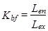
Таблица 37
|
Гидравлическая нагрузка qbf, м3/(м2×сут) |
Коэффициент Kbf при температурах Tw, °С, и высоте Hbf, м |
|||||||
|
Tw = 8 |
Tw = 10 |
Tw = 12 |
Tw = 14 |
|||||
|
Hbf = 1,5 |
Hbf = 2 |
Hbf = 1,5 |
Hbf = 2 |
Hbf = 1,5 |
Hbf = 2 |
Hbf = 1,5 |
Hbf = 2 |
|
|
1 |
8 |
11,6 |
9,8 |
12,6 |
10,7 |
13,8 |
11,4 |
15,1 |
|
1,5 |
5,9 |
10,2 |
7 |
10,9 |
8,2 |
11,7 |
10 |
12,8 |
|
2 |
4,9 |
8,2 |
5,7 |
10 |
6,6 |
10,7 |
8 |
11,5 |
|
2,5 |
4,3 |
6,9 |
4,9 |
8,3 |
5,6 |
10,1 |
6,7 |
10,7 |
|
3 |
3,8 |
6 |
4,4 |
7,1 |
6 |
8,6 |
5,9 |
10,2 |
Примечание. Если значение Kbf превышает табличное, то необходимо предусмотреть рециркуляцию.
6.131. Количество избыточной биопленки, выносимой из капельных биофильтров, следует принимать 8 г/(чел×сут) по сухому веществу, влажность пленки - 96 %.
Высоконагружаемые биологические фильтры
Аэрофильтры
6.132. БПКполн сточных вод, подаваемых на аэрофильтры, не должна превышать 300 мг/л. При большей БПКполн необходимо предусматривать рециркуляцию очищенных сточных вод. Коэффициент рециркуляции Krc следует определять по формуле
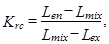
где Lmix - БПКполн смеси исходной и циркулирующей воды, при этом Lmix - не более 300 мг/л;
Len, Lex - БПКполн соответственно исходной и очищенной сточной воды.
6.133. Для аэрофильтров надлежит принимать:
рабочую высоту Haf = 2-4 м;
гидравлическую нагрузку qaf = 10-30 м3/(м2×сут);
удельный расход воздуха qa = 8-12 м3/м3 с учетом рециркуляционного расхода.
6.134. При
расчете аэрофильтров допустимую величину qaf,
м3/(м2×сут), при заданных qa и Haf следует определять по табл. 38, где 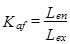
Площадь аэрофильтров Faf, м2, при очистке без рециркуляции необходимо рассчитывать по принятой гидравлической нагрузке qaf, м3/(м2×сут), и суточному расходу сточных вод Q, м3/сут.
Таблица 38
|
Haf, м |
Коэффициент Kaf при Tw, °С, Haf, м, и qaf, м3/(м2×сут) |
||||||||||||
|
Tw = 8 |
Tw = 10 |
Tw = 12 |
Tw = 14 |
||||||||||
|
qaf = 10 |
qaf = 20 |
qaf = 30 |
qaf = 10 |
qaf = 20 |
qaf = 30 |
qaf = 10 |
qaf = 20 |
qaf = 30 |
qaf = 10 |
qaf = 20 |
qaf = 30 |
||
|
8 |
2 |
3,02 |
2,32 |
2,04 |
3,38 |
2,55 |
2,18 |
3,76 |
2,74 |
2,36 |
4,3 |
3,02 |
2,56 |
|
3 |
5,25 |
3,53 |
2,89 |
6,2 |
3,96 |
3,22 |
7,32 |
4,64 |
3,62 |
8,95 |
5,25 |
4,09 |
|
|
4 |
9,05 |
5,37 |
4,14 |
10,4 |
6,25 |
4,73 |
11,2 |
7,54 |
5,56 |
12,1 |
9,05 |
6,54 |
|
|
10 |
2 |
3,69 |
2,89 |
2,58 |
4,08 |
3,11 |
2,76 |
4,5 |
3,36 |
2,93 |
5,09 |
3,67 |
3,16 |
|
3 |
6,1 |
4,24 |
3,56 |
7,08 |
4,74 |
3,94 |
8,23 |
5,31 |
4,36 |
9,9 |
6,04 |
4,84 |
|
|
4 |
10,1 |
6,23 |
4,9 |
12,3 |
7,18 |
5,68 |
15,1 |
8,45 |
6,88 |
16,4 |
10 |
7,42 |
|
|
12 |
2 |
4,32 |
3,88 |
3,01 |
4,76 |
3,72 |
3,28 |
5,31 |
3,98 |
3,44 |
5,97 |
4,31 |
3,7 |
|
3 |
7,25 |
5,01 |
4,18 |
8,35 |
5,55 |
4,78 |
9,9 |
6,35 |
5,14 |
11,7 |
7,2 |
5,72 |
|
|
4 |
12 |
7,35 |
5,83 |
14,8 |
8,5 |
6,2 |
18,4 |
10,4 |
7,69 |
23,1 |
12 |
8,83 |
|
Примечание. Для промежуточных значений qa, Haf и Tw допускается величину Kaf определять интерполяцией.
При очистке сточных вод с рециркуляцией площадь аэрофильтра Faf, м2, надлежит определять по формуле
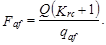
6.135. Количество избыточной биологической пленки, выносимой из высоконагружаемых биофильтров, надлежит принимать 28 г/(чел×сут) по сухому веществу, влажность - 96 %.
6.136. Расчет биофильтров для очистки производственных сточных вод допускается выполнять по табл. 37 и 38 или по окислительной мощности, определяемой экспериментально.
Биофильтры с пластмассовой загрузкой
6.137. БПКполн сточных вод, подаваемых на биофильтры с пластмассовой загрузкой, допускается принимать не более 250 мг/л.
6.138. Для биофильтров с пластмассовой загрузкой надлежит принимать:
рабочую высоту Hpf = 3-4 м;
в качестве загрузки - блоки из поливинилхлорида, полистирола, полиэтилена, полипропилена, полиамида, гладких или перфорированных пластмассовых груб диаметром 50-100 мм или засыпные элементы в виде обрезков груб длиной 50-150 мм, диаметром 30-75 мм с перфорированными, гофрированными и гладкими стенками;
пористость загрузочного материала - 93-96 %, удельную поверхность - 90-110 м2/м3;
естественную аэрацию.
В случае возможного прекращения притока сточных вод на биофильтр необходимо предусматривать рециркуляцию сточных вод во избежание высыхания биопленки на поверхности загрузки.
6.139. При расчете биофильтров с пластмассовой загрузкой надлежит определять:
гидравлическую нагрузку qpf, м3/(м3×сут) - в соответствии с необходимым эффектом очистки Э, %, температурой сточных вод Tw, °С, и принятой высотой Hpf, м, по табл. 39;
объем загрузки и площадь биофильтров - по гидравлической нагрузке и расходу сточных вод.
Таблица 39
|
Гидравлическая нагрузка qpf, м3/(м3×сут), при высоте загрузки Hpf, м |
||||||||
|
Hpf = 3 |
Hpf = 4 |
|||||||
|
Температура сточных вод Tw, °С |
||||||||
|
8 |
10 |
12 |
14 |
8 |
10 |
12 |
14 |
|
|
90 |
6,3 |
6,8 |
7,5 |
8,2 |
8,3 |
9,1 |
10 |
10,9 |
|
85 |
8,4 |
9,2 |
10 |
11 |
11,2 |
12,3 |
13,5 |
14,7 |
|
80 |
10,2 |
11,2 |
12,3 |
13,3 |
13,7 |
15 |
16,4 |
17,9 |
6.140. Аэротенки различных типов следует применять для биологической очистки городских и производственных сточных вод.
Аэротенки, действующие по принципу вытеснителей, следует применять при отсутствии залповых поступлений токсичных веществ, а также на второй ступени двухступенчатых схем.
Комбинированные сооружения типа аэротенков-отстойников (аэроакселераторы, окситенки, флототенки, аэротенки-осветлители и др.) при обосновании допускается применять на любой ступени биологической очистки.
6.141. Регенерацию активного ила необходимо предусматривать при БПКполн поступающей в аэротенки воды свыше 150 мг/л, а также при наличии в воде вредных производственных примесей.
6.142. Вместимость аэротенков необходимо определять по среднечасовому поступлению воды за период аэрации в часы максимального притока.
Расход циркулирующего активного ила при расчете вместимости аэротенков без регенераторов и вторичных отстойников не учитывается.
6.143. Период аэрации tatm, ч, в аэротенках, работающих по принципу смесителей, следует определить по формуле
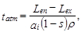
где Len - БПКполн поступающей в аэротенк сточной воды (с учетом снижения БПК при первичном отстаивании), мг/л;
Lex - БПКполн очищенной воды, мг/л;
ai - доза ила, г/л, определяемая технико-экономическим расчетом с учетом работы вторичных отстойников;
s - зольность ила, принимаемая по табл. 40;
r - удельная скорость окисления, мг БПКполн на 1 г беззольного вещества ила в 1 ч, определяемая по формуле
здесь rmax - максимальная скорость окисления, мг/(г×ч), принимаемая по табл. 40;
CO - концентрация растворенного кислорода, мг/л;
Kl - константа, характеризующая свойства органических загрязняющих веществ, мг БПКполн/л, и принимаемая по табл. 40;
КО - константа, характеризующая влияние кислорода, мг О2/л, и принимаемая по табл. 40;
j - коэффициент ингибирования продуктами распада активного ила, л/г, принимаемый по табл. 40.
Примечания: 1. Формулы (48) и (49) справедливы при среднегодовой температуре сточных вод 15 °С. При иной среднегодовой температуре сточных вод Tw продолжительность аэрации, вычисленная по формуле (48), должна быть умножена на отношение 15/Tw.
2. Продолжительность аэрации во всех случаях не должна быть менее 2 ч.
Таблица 40
|
rmax, мг БПКполгн/(г×ч) |
Kl, мг БПКполн/л |
КО, мг О2/л |
j, л/г |
s |
|
|
Городские |
85 |
33 |
0,625 |
0,07 |
0,3 |
|
Производственные: |
|||||
|
а) нефтеперерабатывающих заводов: |
|||||
|
I система |
33 |
3 |
1,81 |
0,17 |
- |
|
II система |
59 |
24 |
1,66 |
0,158 |
- |
|
б) азотной промышленности |
140 |
6 |
2,4 |
1,11 |
- |
|
в) заводов синтетического каучука |
80 |
30 |
0,6 |
0,06 |
0,15 |
|
г) целлюлозно-бумажной промышленности: |
|||||
|
сульфатно-целлюлозное производство |
650 |
100 |
1,5 |
2 |
0,16 |
|
сульфитно-целлюлозное производство |
700 |
90 |
1,6 |
2 |
0,17 |
|
д) заводов искусственного волокна (вискозы) |
90 |
35 |
0,7 |
0,27 |
- |
|
е) фабрик первичной обработки шерсти: |
|||||
|
I ступень |
32 |
156 |
- |
0,23 |
- |
|
II ступень |
6 |
33 |
- |
0,2 |
- |
|
ж) дрожжевых заводов |
232 |
90 |
1,66 |
0,16 |
0,35 |
|
з) заводов органического синтеза |
83 |
200 |
1,7 |
0,27 |
- |
|
и) микробиологической промышленности: |
|||||
|
производство лизина |
280 |
28 |
1,67 |
0,17 |
0,15 |
|
производство биовита и витамицина |
1720 |
167 |
1,5 |
0,98 |
0,12 |
|
к) свинооткормочных комплексов: |
|||||
|
I ступень |
454 |
55 |
1,65 |
0,176 |
0,25 |
|
II ступень |
15 |
72 |
1,68 |
0,171 |
0,3 |
Примечание. Для других производств указанные параметры следует принимать по данным научно-исследовательских организаций.
6.144. Период аэрации tatv, ч, в аэротенках-вытеснителях надлежит рассчитывать по формуле
(50)
где Kp - коэффициент, учитывающий влияние продольного перемешивания: Kp = 1,5 при биологической очистке до Lex = 15 мг/л; Kp = 1,25 при Lex > 30 мг/л;
Lmix - БПКполн, определяемая с учетом разбавления рециркуляционным расходом:
(51)
здесь Ri - степень рециркуляции активного ила, определяемая по формуле (52); обозначения величин ai, rmax, CO, Len, Lex, Kl, KO, j, s, следует принимать по формуле (49).
Примечание. Режим вытеснения обеспечивается при отношении длины коридоров l к ширине b свыше 30. При l/b < 30 необходимо предусматривать секционирование коридоров с числом ячеек пять-шесть.
6.145. Степень рециркуляции активного ила Ri, в аэротенках следует рассчитывать по формуле
где ai - доза ила в аэротенке, г/л;
Ji - иловый индекс, см3/г.
Примечания: 1. Формула справедлива при Ji < 175 см3/г и ai до 5 г/л.
2. Величина Ri должна быть не менее 0,3 для отстойников с илососами, 0,4 - с илоскребами, 0,6 - при самотечном удалении ила.
6.146. Величину илового индекса необходимо определять экспериментально при разбавлении иловой смеси до 1 г/л в зависимости от нагрузки на ил. Для городских и основных видов производственных сточных вод допускается определять величину Ji по табл. 41.
Таблица 41
|
Иловый индекс Ji, см3/г, при нагрузке на ил qi, мг/(г×сут) |
||||||
|
100 |
200 |
300 |
400 |
500 |
600 |
|
|
Городские |
130 |
100 |
70 |
80 |
95 |
130 |
|
Производственные: |
||||||
|
а) нефтеперерабатывающих заводов |
- |
120 |
70 |
80 |
120 |
160 |
|
б) заводов синтетического каучука |
- |
100 |
40 |
70 |
100 |
130 |
|
в) комбинатов искусственного волокна |
- |
300 |
200 |
250 |
280 |
400 |
|
г) целлюлозно-бумажных комбинатов |
- |
220 |
150 |
170 |
200 |
220 |
|
д) химкомбинатов азотной промышленности |
- |
90 |
60 |
75 |
90 |
120 |
Примечание. Для окситенков величина Ji должна быть снижена в 1,3-1,5 раза.
Нагрузку на ил qi, мг БПКполн на 1 г беззольного вещества ила в сутки, надлежит рассчитывать по формуле
(53)
где tat - период аэрации, ч.
6.147. При проектировании аэротенков с регенераторами продолжительность окисления органических загрязняющих веществ tO, ч, надлежит определять по формуле
(54)
где Ri - следует определять по формуле (52);
ar - доза ила в регенераторе, г/л, определяемая по формуле
(55)
r - удельная скорость окисления для аэротенков - смесителей и вытеснителей, определяемая по формуле (49) при дозе ила ar.
Продолжительность обработки воды в аэротенке tat, ч, необходимо определять по формуле
(56)
Продолжительность регенерации tr, ч, надлежит определять по формуле
(57)
Вместимость аэротенка Wat, м3, следует определять по формуле
(58)
где qw - расчетный расход сточных вод, м3/ч.
Вместимость регенераторов Wr, м3, следует определять по формуле
(59)
6.148. Прирост активного ила Pi, мг/л, в аэротенках надлежит определять по формуле
(60)
где Ccdp - концентрация взвешенных веществ в сточной воде, поступающей в аэротенк, мг/л;
Kg - коэффициент прироста; для городских и близких к ним по составу производственных сточных вод Kg = 0,3; при очистке сточных вод в окситенках величина Kg снижается до 0,25.
6.149. Необходимо предусматривать возможность работы аэротенков с переменным объемом регенераторов.
6.150. Для аэротенков и регенераторов надлежит принимать:
число секций - не менее двух;
рабочую глубину - 3-6 м, свыше - при обосновании;
отношение ширины коридора к рабочей глубине - от 1:1 до 2:1.
6.151. Аэраторы в аэротенках допускается применять:
мелкопузырчатые - пористые керамические и пластмассовые материалы (фильтросные пластины, трубы, диффузоры) и синтетические ткани;
среднепузырчатые - щелевые и дырчатые трубы;
крупнопузырчатые - трубы с открытым концом;
механические и пневмомеханические.
6.152. Число аэраторов в регенераторах и на первой половине длины аэротенков-вытеснителей надлежит принимать вдвое больше, чем на остальной длине аэротенков.
6.153. Заглубление аэраторов следует принимать в соответствии с давлением воздуходувного оборудования и с учетом потерь в разводящих коммуникациях и аэраторах (см. п. 5.34).
6.154. В аэротенках необходимо предусматривать возможность опорожнения и устройства для выпуска воды из аэраторов.
6.155. При необходимости в аэротенках надлежит предусматривать мероприятия по локализации пены - орошение водой через брызгала или применение химических антивспенивателей.
Интенсивность разбрызгивания при орошении следует принимать по экспериментальным данным.
Применение химических антивспенивателей должно быть согласовано с органами санитарно-эпидемиологической службы и охраны рыбных запасов.
6.156. Рециркуляцию активного ила следует осуществлять эрлифтами или насосами.
6.157. Удельный расход воздуха qair, м3/м3 очищаемой воды, при пневматической системе аэрации надлежит определять по формуле
где qO - удельный расход кислорода воздуха, мг на 1 мг снятой БПКполн, принимаемый при очистке до БПКполн 15-20 мг/л - 1,1, при очистке до БПКполн свыше 20 мг/л - 0,9;
K1 - коэффициент, учитывающий тип аэратора и принимаемый для мелкопузырчатой аэрации в зависимости от соотношения площадей аэрируемой зоны и аэротенка faz /fat по табл. 42; для среднепузырчатой и низконапорной K1 = 0,75;
K2 - коэффициент, зависимый от глубины погружения аэраторов ha и принимаемый по табл. 43;
KT - коэффициент, учитывающий температуру сточных вод. который следует определять по формуле
(62)
здесь Tw - среднемесячная температура воды за летний период, °С;
K3 - коэффициент качества воды, принимаемый для городских сточных вод 0,85; при наличии СПАВ принимается в зависимости от величины faz/fat по табл. 44, для производственных сточных вод - по опытным данным, при их отсутствии допускается принимать K3 = 0,7;
Ca - растворимость кислорода воздуха в воде, мг/л, определяемая по формуле
здесь CT - растворимость кислорода в воде в зависимости от температуры и атмосферного давления, принимаемая по справочным данным;
ha - глубина погружения аэратора, м;
CO - средняя концентрация кислорода в аэротенке, мг/л; в первом приближении СО допускается принимать 2 мг/л и необходимо уточнять на основе технико-экономических расчетов с учетом формул (48) и (49).
Площадь аэрируемой зоны для пневматических аэраторов включает просветы между ними до 0,3 м.
Интенсивность аэрации Ja, м3/(м2×ч), надлежит определять по формуле
(64)
где Hat - рабочая глубина аэротенка, м;
tat - период аэрации, ч.
Если вычисленная интенсивность аэрации свыше Ja,max для принятого значения K1, необходимо увеличить площадь аэрируемой зоны; если менее Ja,min для принятого значения K2 - следует увеличить расход воздуха, приняв Ja,min по табл. 43.
6.158. При подборе механических, пневмомеханических и струйных аэраторов следует исходить из их производительности по кислороду, определенной при температуре 20 °С и отсутствии растворенного в воде кислорода, скорости потребления и массообменных свойств жидкости, характеризуемых коэффициентами KT и K3 и дефицитом кислорода (Ca - CO) /Ca и определяемых по п. 6.157.
Число аэраторов Nma Для аэротенков и биологических прудов следует определять по формуле
(65)
где Wat - объем сооружения, м3;
Qma - производительность аэратора по кислороду, кг/ч, принимаемая по паспортным данным;
tat - продолжительность пребывания жидкости в сооружении, ч; значения остальных параметров следует принимать по формуле (61).
Примечание. При определенном числе механических аэраторов необходимо проверять их перемешивающую способность по поддержанию активного ила во взвешенном состоянии. Зону действия аэратора следует определять расчетом; ориентировочно она составляет 5-6 диаметров рабочего колеса.
6.159. Окситенки рекомендуется применять при условии подачи технического кислорода от кислородных установок промышленных предприятий. Допускается применение их и при строительстве кислородной станции в составе очистных сооружений.
Окситенки должны быть оборудованы механическими аэраторами, легким герметичным перекрытием, системой автоматической подпитки кислорода и продувки газовой фазы, что должно обеспечивать эффективность использования кислорода 90 %.
Таблица 42
|
0,05 |
0,1 |
0,2 |
0,3 |
0,4 |
0,5 |
0,75 |
1 |
|
|
K1 |
1,34 |
1,47 |
1,68 |
1,89 |
1,94 |
2 |
2,13 |
2,3 |
|
Ja max, м3/(м2×ч) |
5 |
10 |
20 |
30 |
40 |
50 |
75 |
100 |
Таблица 43
|
0,5 |
0,6 |
0,7 |
0,8 |
0,9 |
1 |
3 |
4 |
5 |
6 |
|
|
K2 |
0,4 |
0,46 |
0,6 |
0,8 |
0,9 |
1 |
2,08 |
2,52 |
2,92 |
3,3 |
|
Ja,min, м3/(м2×ч) |
48 |
42 |
38 |
32 |
28 |
24 |
4 |
3,5 |
3 |
2,5 |
Таблица 44
|
0,05 |
0,1 |
0,2 |
0,3 |
0,4 |
0,5 |
0,75 |
1 |
|
|
K3 |
0,59 |
0,59 |
0,64 |
0,66 |
0,72 |
0,77 |
0,88 |
0,99 |
Для очистки производственных сточных вод и их смеси с городскими сточными водами следует применять окситенки, совмещенные с илоотделителем. Объем зоны аэрации окситенка надлежит рассчитывать по формулам (48) и (49). Концентрацию кислорода в иловой смеси окситенка следует принимать в пределах 6-12 мг/л, дозу ила - 6-10 г/л.
6.160. Нагрузку на поверхность вторичных отстойников qssb, м3/(м2×ч), после биофильтров всех типов следует рассчитывать по формуле
(66)
где u0 - гидравлическая крупность биопленки; при полной биологической очистке u0 = 1,4 мм/с; значения коэффициента Kset, следует принимать по п. 6.61 .
При определении площади отстойников необходимо учитывать рециркуляционный расход.
6.161. Вторичные отстойники всех типов после аэротенков надлежит рассчитывать по гидравлической нагрузке qssa, м3/(м2×ч), с учетом концентрации активного ила в аэротенке ai, г/л, его индекса Ji, см3/г, и концентрации ила в осветленной воде at, мг/л, по формуле
(67)
где Kss - коэффициент использования объема зоны отстаивания, принимаемый для радиальных отстойников - 0,4, вертикальных - 0,35, вертикальных с периферийным выпуском - 0,5, горизонтальных - 0,45;
at - следует принимать не менее 10 мг/л,
ai - не более 15 г/л.
6.162. Конструктивные параметры отстойников надлежит принимать согласно пп. 6.61-6.63.
6.163. Нагрузку на 1 м сборного водослива осветленной воды следует принимать не более 8-10 л/с.
6.164. Гидравлическую нагрузку на илоотделители для окситенков или аэротенков-отстойников, работающих в режиме осветлителей со взвешенным осадком, зависящую от параметра aiJi, следует принимать по табл. 45.
Таблица 45
|
100 |
200 |
300 |
400 |
500 |
600 |
|
|
qms, м3/(м2×ч) |
5,6 |
3,3 |
1,8 |
1.2 |
0,8 |
0,7 |
6.165. Расчет флотационных установок для разделения иловой смеси надлежит вести в зависимости от требуемой степени осветления по содержанию взвешенных веществ согласно табл. 46.
Таблица 46
|
Содержание взвешенных веществ, мг/л |
|||
|
15 |
10 |
5 |
|
|
Продолжительность флотации, мин |
40 |
50 |
60 |
|
Удельный расход воздуха, л/кг взвешенных веществ ила |
4 |
6 |
9 |
Давление в напорном резервуаре следует принимать 0,6-0,9 МПа (6-9 кгс/см2), продолжительность насыщения 3-4 мин.
6.166. Аэрационные установки на полное окисление следует применять для биологической очистки сточных вод.
Перед подачей сточных вод на установку необходимо предусматривать задержание крупных механических примесей.
6.167. Продолжительность аэрации в аэротенках на полное окисление следует определять по формуле (48), при этом надлежит принимать:
r - среднюю скорость окисления по БПКполн - 6 мг/(г×ч);
ai - дозу ила - 3-4 г/л;
s - зольность ила - 0,35.
Удельный расход воздуха следует определять по формуле (61), при этом надлежит принимать:
qO - удельный расход кислорода, мг/мг снятой БПКполн - 1,25;
K1, K2, KT, K3, Ca - по данным, приведенным в п. 6.157.
6.168. Продолжительность пребывания сточных вод в зоне отстаивания при максимальном притоке должна составлять не менее 1 ,5 ч.
6.169. Количество избыточного активного ила следует принимать 0,35 кг на 1 кг БПКполн. Удаление избыточного ила допускается предусматривать как из отстойника, так и из аэротенка при достижении дозы ила 5-6 г/л.
Влажность ила, удаляемого из отстойника, равна 98 %, из аэротенка - 99,4 %.
6.170. Нагрузку на иловые площадки следует принимать как для осадков, сброженных в мезофильных условиях.
6.171. Циркуляционные окислительные каналы (ЦОК) следует предусматривать для биологической очистки сточных вод в районах с расчетной зимней температурой наиболее холодного периода не ниже минус 25 °С.
6.172. Продолжительность аэрации надлежит определять по формуле (48), при этом следует принимать r - среднюю скорость окисления по БПКполн 6 мг/(г×ч).
6.173. Для циркуляционных окислительных каналов следует принимать:
форму канала в плане О-образной;
глубину - около 1 м;
количество избыточного активного ила - 0,4 кг на 1 кг БПКполн;
удельный расход кислорода - 1,25 мг на 1 мг снятой БПКполн.
6.174. Аэрацию сточных вод в окислительных каналах следует предусматривать механическими аэраторами, устанавливаемыми в начале прямого участка канала.
Размеры аэраторов и параметры их работы надлежит принимать по паспортным данным в зависимости от производительности по кислороду и скорости воды в канале.
6.175. Скорость течения воды в канале vcc, м/с, создаваемую аэратором, надлежит определять по формуле
(68)
где Jair - импульс давления аэратора, принимаемый по характеристике аэратора;
lair - длина аэратора, м;
vcc - площадь живого сечения канала, м2;
n1 - коэффициент шероховатости; для бетонных стенок n1 = 0,014;
R - гидравлический радиус, м;
lcc - длина канала, м;
åx - сумма коэффициентов местных сопротивлений; для О-образного канала åx - 0,5.
Длину аэратора необходимо принимать не менее ширины канала по дну и не более ширины канала по зеркалу воды, число аэраторов - не менее двух.
6.176. Выпуск смеси сточных вод с активным илом из циркуляционных каналов во вторичный отстойник следует предусматривать самотеком, продолжительность пребывания сточных вод во вторичном отстойнике по максимальному расходу - 1,5 ч.
6.177. Из вторичного отстойника следует предусматривать непрерывную подачу возвратного активного ила в канал, подачу избыточного ила на иловые площадки - периодически.
6.178. Иловые площадки следует рассчитывать исходя из нагрузок для осадка, сброженного в мезофильных условиях.
6.179. Поля фильтрации для полной биологической очистки сточных вод надлежит предусматривать, как правило, на песках, супесях и легких суглинках.
Продолжительность отстаивания сточных вод перед поступлением их на поля фильтрации следует принимать не менее 30 мин.
6.180. Площадки для полей фильтрации необходимо выбирать: со спокойным и слабовыраженным рельефом с уклоном до 0,02; с расположением ниже течения грунтового потока от сооружений для забора подземных вод на расстоянии, равном величине радиуса депрессионной воронки, но не менее 200 м для легких суглинков, 300 м - для супесей и 500 м - для песков.
При расположении полей фильтрации выше по течению грунтового потока расстояние их до сооружений для забора подземных вод следует принимать с учетом гидрогеологических условий и требований санитарной охраны источника водоснабжения.
На территориях, граничащих с местами выклинивания водоносных горизонтов, а также при наличии трещиноватых пород и карстов, не перекрытых водоупорным споем, размещение полей фильтрации не допускается.
6.181. Нагрузку сточных вод на поля фильтрации надлежит принимать на основании данных опыта эксплуатации полей фильтрации, находящихся в аналогичных условиях.
Нагрузку бытовых и близких к ним по составу производственных сточных вод допускается принимать по табл. 47.
Таблица 47
|
Среднегодовая температура воздуха, °С |
Нагрузка сточных вод, м3/(га×сут) при залегании грунтовых вод на глубине, м |
|||
|
1,5 |
2 |
3 |
||
|
Легкие суглинки |
От 0 до 3,5 |
- |
55 |
60 |
|
Св. 3,5 до 6 |
- |
70 |
75 |
|
|
» 6 » 11 |
- |
75 |
85 |
|
|
Св. 11 |
- |
85 |
100 |
|
|
Супеси |
От 0 до 3,5 |
80 |
85 |
100 |
|
Св. 3,5 до 6 |
90 |
100 |
120 |
|
|
» 6 » 11 |
100 |
110 |
130 |
|
|
Св. 11 |
120 |
130 |
150 |
|
|
Пески |
От 0 до 3,5 |
120 |
140 |
180 |
|
Св. 3,5 до 6 |
150 |
175 |
225 |
|
|
» 6 » 11 |
160 |
190 |
235 |
|
|
Св. 11 |
180 |
210 |
250 |
|
Примечания: 1. Нагрузка указана для районов со среднегодовым количеством атмосферных осадков от 300 до 500 мм.
2. Нагрузку необходимо уменьшать для районов со среднегодовым количеством атмосферных осадков: 500-700 мм - на 15-25 %; свыше 700 мм, а также для I климатического района и IIIА климатического подрайона - на 25-30 %, при этом больший процент снижения нагрузки надлежит принимать при легких суглинистых, а меньший - при песчаных грунтах.
6.182. Площадь полей фильтрации в необходимых случаях надлежит проверять на намораживание сточных вод. Продолжительность намораживания следует принимать равной числу дней со среднесуточной температурой воздуха ниже минус 10 °С.
Величину фильтрации сточных вод в период их намораживания необходимо определять с уменьшением на величину коэффициента, приведенного в табл. 48.
Таблица 48
|
Коэффициент снижения величины фильтрации в период намораживания |
|
|
Легкие суглинки |
0,3 |
|
Супеси |
0,45 |
|
Пески |
0,55 |
6.183. Необходимо предусматривать резервные карты, площадь которых должна быть обоснована в каждом отдельном случае и не должна превышать полезной площади полей фильтрации, %:
в III и IV климатических районах - 10;
во II климатическом районе - 20;
в I « « - 25.
6.184. Дополнительную площадь для устройства сетей, дорог, оградительных валиков, древесных насаждений допускается принимать в размере до 25 % при площади полей фильтрации свыше 1000 га и до 35 % при площади их 1000 га и менее.
6.185. Размеры карт полей фильтрации надлежит определять в зависимости от рельефа местности, общей рабочей площади полей, способа обработки почвы. При обработке тракторами площадь одной карты должна быть не менее 1 ,5 га.
Отношение ширины карты к длине следует принимать от 1:2 до 1:4; при обосновании допускается увеличение длины карты.
6.186. На картах полей фильтрации, предназначенных для намораживания сточных вод, следует предусматривать выпуски талых вод на резервные карты.
6.187. Устройство дренажа (открытого или закрытого) на полях фильтрации обязательно при залегании грунтовых вод на глубине менее 1,5 м от поверхности карт независимо от характера грунта, а также и при большей глубине залегания грунтовых вод, при неблагоприятных фильтрационных свойствах грунтов, когда одни осушительные канавы (без устройства закрытого дренажа) не обеспечивают необходимого понижения уровня грунтовых вод.
6.188. При полях фильтрации надлежит предусматривать душевую, помещении для сушки спецодежды, для отдыха и приема пищи. На каждые 75-100 га площади полей фильтрации следует предусматривать будки для обогрева обслуживающего персонала.
6.189. Поля подземной фильтрации следует применять в песчаных и супесчаных грунтах, при расположении оросительных труб выше уровня грунтовых вод не менее чем на 1 м и заглублении их не более 1,8 м и не менее 0,5 м от поверхности земли. Оросительные трубы рекомендуется укладывать на слой подсыпки толщиной 20-50 см из гравия, мелкого хорошо спекшегося котельного шлака, щебня или крупнозернистого песка.
Перед полями подземной фильтрации надлежит предусматривать установку септиков.
6.190. Общая длина оросительных труб определяется по нагрузке в соответствии с табл. 49. Длину отдельных оросителей следует принимать не более 20 м.
Таблица 49
|
Среднегодовая температура воздуха, °С |
Нагрузка, л/сут на 1 м оросительных труб полей подземной фильтрации, в зависимости от глубины наивысшего уровня грунтовых вод от лотка, м |
|||
|
1 |
2 |
3 |
||
|
Пески |
До 6 |
16 |
20 |
22 |
|
От 6,1 до 11 |
20 |
24 |
27 |
|
|
Св. 11,1 |
22 |
26 |
30 |
|
|
Супеси |
До 6 |
8 |
10 |
12 |
|
От 6,1 до 11 |
10 |
12 |
14 |
|
|
Св. 11,1 |
11 |
13 |
16 |
|
Примечания: 1. Нагрузка указана для районов со среднегодовым количеством атмосферных осадков до 500 мм.
2. Нагрузку необходимо уменьшать, для районов со среднегодовым количеством осадков 500-600 мм - на 10-20 %, свыше 600 мм - на 20-30 %; для I климатического района и IIIА климатического подрайона - на 15 %. При этом больший процент снижения надлежит принимать при супесчаных грунтах, меньший - при песчаных.
3. При наличии крупнозернистой подсыпки толщиной 20-50 см нагрузку следует принимать с коэффициентом 1,2-1,5.
4. При удельном водоотведении свыше 150 л/сут на одного жителя или для объектов сезонного действия нормы нагрузок следует увеличивать на 20 %.
6.191. Для притока воздуха следует предусматривать на концах оросительных труб стояки диаметром 100 мм, возвышающиеся на 0,5 м над уровнем земли.
6.192. Песчано-гравийные фильтры и фильтрующие траншеи при количестве сточных вод не более 15 м3/сут следует проектировать в водонепроницаемых и слабофильтрующих грунтах при наивысшем уровне грунтовых вод на 1 м ниже лотка отводящей дрены.
Перед сооружениями необходимо предусматривать установку септиков.
Очищенную воду следует или собирать в накопители (с целью использования ее на орошение), или сбрасывать в водные объекты с соблюдением «Правил охраны поверхностных вод от загрязнения сточными водами» и «Правил санитарной охраны прибрежных вод морей».
Расчетную длину фильтрующих траншей следует принимать в зависимости от расхода сточных вод и нагрузки на оросительные трубы, но не более 30 м, ширину траншеи понизу - не менее 0,5 м.
6.193. Песчано-гравийные фильтры надлежит проектировать в одну или две ступени. В качестве загрузочного материала одноступенчатых фильтров следует принимать крупно- и среднезернистый песок и другие материалы.
Загрузочным материалом в первой ступени двухступенчатого фильтра могут быть гравий, щебень, котельный шлак и другие материалы крупностью, принимаемой согласно п. 6.122, во второй ступени - аналогично одноступенчатому фильтру.
В фильтрующих траншеях в качестве загрузочного материала следует принимать крупно- и среднезернистый песок и другие материалы.
6.194. Нагрузку из оросительные трубы песчано-гравийных фильтров и фильтрующих траншей, а также толщину слон загрузки следует принимать по табл. 50.
Таблица 50
|
Высота слоя загрузки, м |
Нагрузка на оросительные трубы, л/(м×сут) |
|
|
Одноступенчатый песчано-гравийный фильтр или вторая ступень двухступенчатого фильтра |
1 - 1,5 |
80 - 100 |
|
Первая ступень двухступенчатого фильтра |
1 - 1,5 |
150 - 200 |
|
Фильтрующая траншея |
0,8 - 1 |
50 - 70 |
Примечания: 1. Меньшие нагрузки соответствуют меньшей высоте.
2. Нагрузки указаны для районов со среднегодовой температурой воздуха от 3 до 6 °С.
3. Для районов со среднегодовой температурой воздуха выше 6 °С нагрузку следует увеличивать на 20-30 %, ниже 3 °С - уменьшать на 20-30 %.
4. При удельном водоотведении свыше 150 л/(чел×сут) нагрузку следует увеличивать на 20-30 %.
6.195. Фильтрующие колодцы надлежит устраивать только в песчаных и супесчаных грунтах при количестве сточных вод не более 1 м3/сут. Основание колодца должно быть выше уровня грунтовых вод не менее чем на 1 м.
Примечания: 1. При использовании подземных вод для хозяйственно-питьевого водоснабжения возможность устройства фильтрующих колодцев решается в зависимости от гидрогеологических условий и по согласованию с органами Министерства геологии и санитарно-эпидемиологической службой.
2. Перед колодцами необходимо предусматривать септики.
6.196. Фильтрующие колодцы следует проектировать из железобетонных колец, кирпича усиленного обжига или бутового камня. Размеры в плане должны быть не более 2´2 м, глубина - 2,5 м.
Ниже подводящей трубы следует предусматривать:
донный фильтр высотой до 1 м из гравия, щебня, спекшегося шлака и других материалов - внутри колодца;
обсыпку из тех же материалов - у наружных стенок колодца;
отверстия для выпуска профильтровавшейся воды - в стенках колодца.
В покрытии колодца надлежит предусматривать люк диаметром 700 мм и вентиляционную трубу диаметром 100 мм.
6.197. Расчетную фильтрующую поверхность колодца надлежит определять как сумму площадей дна и поверхности стенки колодца на высоту фильтра. Нагрузка на 1 м2 фильтрующей поверхности должна приниматься 80 л/сут в песчаных грунтах и 40 л/сут в супесчаных.
Нагрузку следует увеличивать: на 10-20 % - при устройстве фильтрующих колодцев в средне- и крупнозернистых песках или при расстоянии между основанием колодца и уровнем грунтовых вод свыше 2 м; на 20 % - при удельном водоотведении свыше 150 л/(чел×сут) и среднезимней температуре сточных вод выше 10 °С.
Для объектов сезонного действия нагрузка может быть увеличена на 20 %.
6.198. Биологические пруды надлежит применять для очистки и глубокой очистки городских, производственных и поверхностных сточных вод, содержащих органические вещества.
6.199. Биологические пруды допускается проектировать как с естественной, так и с искусственной аэрацией (пневматической или механической).
6.200. При очистке в биологических прудах сточные воды не должны иметь БПКполн свыше 200 мг/л - для прудов с естественной аэрацией и свыше 500 мг/л - для прудов с искусственной аэрацией.
При БПКполн свыше 500 мг/л следует предусматривать предварительную очистку сточных вод.
6.201. В пруды для глубокой очистки допускается направлять сточную воду после биологической или физико-химической очистки с БПКполн не более 25 мг/л - для прудов с естественной аэрацией и не более 50 мг/л - для прудов с искусственной аэрацией.
6.202. Перед прудами для очистки надлежит предусматривать решетки с прозорами не более 16 мм и отстаивание сточных вод в течение не менее 30 мин.
После прудов с искусственной аэрацией необходимо предусматривать отстаивание очищенной воды в течение 2-2,5 ч.
6.203. Биологические пруды следует устраивать на нефильтрующих или слабофильтрующих грунтах. При неблагоприятных в фильтрационном отношении грунтах следует осуществлять противофильтрационные мероприятия.
6.204. Биологические пруды следует располагать с подветренной по отношению к жилой застройке стороны господствующего направления ветра в теплое время года. Направление движения воды в пруде должно быть перпендикулярным этому направлению ветра.
6.205. Биологические пруды следует проектировать не менее чем из двух параллельных секций с 3-5 последовательными ступенями в каждой, с возможностью отключения любой секции пруда для чистки или профилактического ремонта без нарушения работы остальных.
6.206. Отношение длины к ширине пруда с естественной аэрацией должно быть не менее 20. При меньших отношениях надлежит предусматривать конструкции впускных и выпускных устройств, обеспечивающие движение воды по всему живому сечению пруда.
6.207. В прудах с искусственной аэрацией отношение сторон секций может быть любым, при этом аэрирующие устройства должны обеспечивать движение воды в любой точке пруда со скоростью не менее 0,05 м/с. Форма прудов в плане зависит от типа аэраторов: для пневматических или механических прудов могут быть прямоугольными, для самодвижущихся механических - круглыми.
6.208. Отметка лотка перепускной трубы из одной ступени в другую должна быть выше дна на 0,3-0,5 м.
Выпуск очищенной воды следует осуществлять через сборное устройство, расположенное ниже уровня воды на 0,15-0,2 глубины пруда.
6.209. Хлорировать воду следует, как правило, после прудов. В отдельных случаях (при длине прокладки трубопровода хлорной воды свыше 500 м или необходимости строительства отдельной хлораторной и т. п.) допускается хлорирование перед прудами.
Концентрация остаточного хлора в воде после контакта не должна превышать 0,25-0,5 г/м3.
6.210. Рабочий объем пруда надлежит определять по времени пребывания в нем среднесуточного расхода сточных вод.
6.211. Время пребывания воды в пруде с естественной аэрацией tlag, сут, следует определять по формуле
где N - число последовательных ступеней пруда;
Klag - коэффициент объемного использования каждой ступени пруда;
Klag - то же, последней ступени;
Klog и Klog принимаются для искусственных прудов с отношением длины секций к ширине 20:1 и более - 0,8-0,9, при отношении 1:1 - 3:1 или для прудов, построенных на основе естественных местных водоемов (озер, запруд и т. п.), - 0,35, для промежуточных случаев определяются интерполяцией;
Len - БПКполн воды, поступающей в данную ступень пруда;
Len - то же, для последней ступени;
Lex - БПКполн воды, выходящей из данной ступени пруда;
Lex - то же, для последней ступени;
Lfin - остаточная БПКполн, обусловленная внутриводоемными процессами и принимаемая летом 2-3 мг/л (для цветущих прудов - до 5 мг/л), зимой - 1-2 мг/л;
k - константа скорости потребления кислорода, сут; для производственных сточных вод устанавливается экспериментальным путем; для городских и близких к ним по составу производственных сточных вод при отсутствии экспериментальных данных k для всех промежуточных секций очистного пруда может быть принята равной 0,1 сут-1, для последней ступени k = 0,07 сут-1 (при температуре воды 20 °С).
Для прудов глубокой очистки k следует принимать, сут-1: для 1-й ступени - 0,07; для 2-й ступени - 0,06; для остальных ступеней пруда - 0,05-0,04; для одноступенчатого пруда k = 0,06 сут-1.
Для температур воды, отличающихся от 20 °С, значение k должно быть скорректировано по формулам:
для температуры воды от 5 до 30 °С
(70)
для температуры воды от 0 до 5 °С
(71)
где k - коэффициент, определяемый в лабораторных условиях при температуре воды 20 °С.
6.212. Общую площадь зеркала воды пруда Flag, м2, с естественной аэрацией надлежит определять по формуле
(72)
где Qw - расход сточных вод, м3×сут;
Ca - следует определять по формуле (63);
Cex - концентрация кислорода, которую необходимо поддерживать в воде, выходящей из пруда, мг/л;
ra - величина атмосферной аэрации при дефиците кислорода, равном единице, принимаемая 3-4 г/(м2×сут);
Len,, Lex, Klag - следует принимать по формуле (69).
6.213. Расчетную глубину пруда Hlag, м, с естественной аэрацией следует определять по формуле
(73)
Рабочая глубина пруда не должна превышать, м: при Len свыше 100 мг/л - 0,5, при Len до 100 мг/л - 1; для прудов глубокой очистки с Len от 20 до 40 мг/л - 2, с Len до 20 мг/л - 3. При возможности замерзания пруда зимой Н должна быть увеличена на 0,5 м.
6.214. Время пребывания воды tlag, сут, глубокой очистки в пруде с искусственной аэрацией надлежит определять по формуле
(74)
где kd - динамическая константа скорости потребления кислорода, равная:
kd = b1 k, (75)
здесь b1 - коэффициент, зависящий от скорости vlag, м/с, движения воды в пруде, создаваемой аэрирующими устройствами или перемещением воды по коридорам лабиринтного типа; величина b1, определяется по формуле
(76)
Если vlag > 0,05 м/с, то b1 = 7.
6.215. Для повышения глубины очистки воды до БПКполн 3 мг/л и снижения содержания в ней биогенных элементов (азота и фосфора) рекомендуется применение в пруде высшей водной растительности - камыша, рогоза, тростника и др. Высшая водная растительность должна быть размешена в последней секции пруда.
Площадь, занимаемую высшей водной растительностью, допускается определять по нагрузке, составляющей 10 000 м3/сут на 1 га при плотности посадки 150-200 растений на 1 м2.
6.216. При необходимости дополнительного насыщения очищенных сточных вод кислородом перед спуском их в водный объект следует предусматривать специальные устройства: при наличии свободного перепада уровней между площадкой очистных сооружений и горизонтом воды в водном объекте - многоступенчатые водосливы-аэраторы, быстротоки и др., в остальных случаях - барботажные сооружения.
6.217. При проектировании водосливов-аэраторов следует принимать:
водосливные отверстия - в виде тонкой зубчатой стенки с зубчатым щитом над ней (зубья стенки и щита обращены один к другому остриями);
высоту зубьев - 50 мм, угол при вершине - 90°;
высоту отверстия между остриями зубьев - 50 мм;
длину колодца нижнего бьефа - 4 м, глубину - 0,8 м;
удельный расход воды - qw = 120 - 160 л/с на 1 м длины водослива;
напор воды на водосливе hw, м (от середины зубчатого отверстия), - по формуле
(77)
6.218. Число ступеней водосливов-аэраторов Nwa и величина перепада уровней zst, м, на каждой ступени, необходимые для обеспечения потребной концентрации кислорода Cex, мг/л, в сточной воде на выпуске в водный объект, определяются последовательным подбором из соотношения
(78)
где Ca - растворимость кислорода в жидкости, определяемая по п. 6.157;
Cex - концентрация кислорода в очищенной сточной жидкости, которая должна быть обеспечена на выпуске в водоем;
Cs - концентрация кислорода в сточной воде перед сооружением для насыщения; при отсутствии данных Cs = 0;
Nwa - число ступеней водосливов;
KT, K3 - коэффициенты, принимаемые по п. 6.157;
j20 - коэффициент, учитывающий эффективность аэрации на водосливах в зависимости от перепада уровней и принимаемый по табл. 51.
Таблица 51
|
0,4 |
0,5 |
0,6 |
0,7 |
0,8 |
|
|
j20 |
0,71 |
0,65 |
0,59 |
0,55 |
0,52 |
6.219. При проектировании барботажных сооружений надлежит принимать:
число ступеней - 3-4;
аэраторы - мелкопузырчатые или среднепузырчатые;
расположение аэраторов - равномерное по дну сооружения;
интенсивность аэрации - не более 100 м3/(м2×ч).
6.220. Удельный расход воздуха в барботажных сооружениях qb, м3/м3, следует определять по формуле
(79)
где Nb - число ступеней аэрации;
Ca, K1 - следует принимать по п. 6.157;
K2, K3, KT, Cex, Cs - следует принимать по п. 6.218.
6.221. Обеззараживание бытовых сточных вод и их смеси с производственными следует производить после их очистки.
При совместной биологической очистке бытовых и производственных сточных вод, но раздельной их механической очистке допускается при обосновании предусматривать обеззараживание только бытовых вод после их механической очистки с дехлорированием их перед подачей на сооружения биологической очистки.
6.222. Обеззараживание сточных вод следует производить хлором, гидрохлоритом натрия, получаемым на месте в электролизерах, или прямым электролизом сточных вод.
6.223. Расчетную дозу активного хлора следует принимать, г/м3:
после механической очистки - 10;
после механохимической очистки при эффективности отстаивания свыше 70 % и неполной биологической очистки - 5;
после полной биологической, физико-химической и глубокой очистки - 3.
Примечания: 1. Дозу активного хлора надлежит уточнять в процессе эксплуатации, при этом количество остаточного хлора в обеззараженной воде после контакта должно быть не менее 1,5 г/м3.
2. Хлорное хозяйство очистных сооружений должно обеспечивать возможность увеличения расчетной дозы хлора в 1,5 раза без изменения вместимости складов для реагентов.
6.224. Хлорное хозяйство и электролизные установки на очистных сооружениях следует проектировать согласно СНиП 2.04.02-84.
6.225. Установки прямого электролиза при обосновании допускается использовать после биологической или физико-химической очистки сточных вод.
6.226. Электрооборудование и шкаф управления следует располагать в отапливаемом помещении, которое допускается блокировать с другими помещениями очистных сооружений.
6.227. Для смешения сточной воды с хлором следует применять смесители любого типа.
6.228. Продолжительность контакта хлора или гипохлорита со сточной водой в резервуаре или в отводящих лотках и трубопроводах надлежит принимать 30 мин.
6.229. Контактные резервуары необходимо проектировать как первичные отстойники без скребков; число резервуаров - не менее двух. Допускается предусматривать барботаж воды сжатым воздухом при интенсивности 0,5 м3/(м2×ч).
6.230. При обеззараживании сточных вод после биологических прудов следует выделять отсек для контакта сточной воды с хлором.
6.231. Количество осадка, выпадающего в контактных резервуарах, следует принимать, л на 1 м3 сточной воды, при влажности 98 %:
после механической очистки - 1,5;
после биологической очистки в аэротенках и на биофильтрах - 0,5.
6.232. Сооружения предназначены для обеспечения более глубокой очистки городских и производственных сточных вод и их смеси, прошедших биологическую очистку, а также для производственных сточных вод после механической, химической или физико-химической очистки перед сбросом в водные объекты или повторным использованием их в производстве или сельском хозяйстве.
6.233. В качестве сооружений для глубокой очистки сточных вод могут быть применены фильтры с зернистой загрузкой различных конструкций, сетчатые барабанные фильтры, биологические пруды, сооружения для насыщения сточных вод кислородом.
Выбор типа сооружений надлежит производить с учетом качества исходных сточных вод, требований к степени их очистки, наличия фильтрующих материалов и т. п.
6.234. Проектирование биологических прудов надлежит производить согласно пп. 6.198-6.215.
6.235. Фильтры с зернистой загрузкой рекомендуются следующих конструкций: однослойные, двухслойные и каркасно-засыпные (КЗФ).
В зависимости от конструкции и климатических условий фильтры следует располагать на открытом воздухе или в помещении. При расположении фильтров на открытом воздухе трубопроводы, запорная арматура, насосы и прочие коммуникации должны располагаться в проходных галереях.
6.236. В качестве фильтрующего материала допускается использовать кварцевый песок, гравий, гранитный щебень, гранулированный доменный шлак, антрацит, керамзит, полимеры, а также другие зернистые загрузки, обладающие необходимыми технологическими свойствами, химической стойкостью и механической прочностью.
6.237. Расчет конструктивных элементов фильтров надлежит производить согласно СНиП 2.04.02-84 и настоящим нормам.
6.238. Расчетные параметры фильтров с зернистой загрузкой для глубокой очистки городских и близких к ним по составу производственных сточных вод после биологической очистки следует принимать по табл. 52.
Расчет площади фильтров надлежит производить по максимальному часовому притоку за вычетом допустимой неравномерности, равной 15 %.
6.239. При проектировании фильтров с зернистой загрузкой следует предусматривать:
при подаче сточных вод после биологической очистки - установку перед фильтрами (кроме КЗФ) барабанных сеток;
водовоздушную промывку для однослойных, водяную - для двухслойных, водовоздушную или водяную - для каркасно-засыпных фильтров; при этом промывку следует осуществлять нехлорированной фильтрованной водой;
Таблица 52
|
Параметры фильтрующей загрузки |
Высота слоя, м |
Скорость фильтрования, м/ч, при режиме |
Интенсивность промывки, л/(с×м2) |
Продолжительность этапа промывки, мин |
Эффект очистки, % |
||||||
|
Фильтрующий материал |
гранулометрическая характеристика загрузки d, мм |
по БПКполн |
по взвешенным веществам |
||||||||
|
минимальная |
максимальная |
эквивалентная |
нормальном |
форсированном |
|||||||
|
Однослойный мелкозернистый с подачей воды сверху вниз |
Кварцевый песок |
1,2 |
2 |
1,5 - 1,7 |
1,2 - 1,3 |
6 - 7 |
7 - 8 |
Воздух (18-20) |
2 |
50 - 60 |
70 - 75 |
|
Поддерживающие слои - гравий |
2 |
5 |
- |
0,15 - 0,2 |
Воздух (18-20) и вода (3-5) |
10 - 12 |
|||||
|
5 |
10 |
- |
0,1 - 0,15 |
||||||||
|
10 |
20 |
- |
0,1 - 0,15 |
Вода (7) |
6 - 8 |
||||||
|
20 |
40 |
- |
0,2 - 0,25 |
||||||||
|
Однослойный крупнозернистый с подачей воды сверху вниз |
Гранитный щебень |
3 |
10 |
5,5 |
1,2 |
16 |
18 |
Воздух (16) |
3 |
35 - 40 |
45 - 50 |
|
Воздух (16) и вода (10) |
4 |
||||||||||
|
Вода (15) |
3 |
||||||||||
|
Двухслойный с подачей воды сверху вниз |
Антрацит или керамзит |
1,2 |
2 |
- |
0,4 - 0,5 |
7 - 8 |
9 -10 |
Вода (14-16) |
10 - 12 |
60 - 70 |
70 - 80 |
|
Кварцевый песок |
0,7 |
1,6 |
- |
0,6 - 0,7 |
|||||||
|
Поддерживающие слои - гравий |
2 |
5 |
- |
0,15 - 0,25 |
|||||||
|
5 |
10 |
- |
0,1 - 0,15 |
||||||||
|
10 |
20 |
- |
0,1 - 0,15 |
||||||||
|
20 |
40 |
- |
0,2 - 0,25 |
||||||||
|
Каркасно-засыпной (КЗФ) |
Кварцевый песок |
0,8 |
1 |
- |
0,9 |
10 |
15 |
Воздух (14-16) и вода (6-8) |
5 - 7 |
70 |
70 - 80 |
|
Каркас - гравий |
1 |
40 |
- |
1,8 |
Вода (14-16) |
3 |
|||||
|
40 |
60 |
- |
0,5 |
||||||||
вместимость резервуаров промывной воды и грязных вод от промывки фильтров - не менее чем на две промывки;
при необходимости - насыщение фильтрованной воды кислородом согласно пп. 6.216-6.220;
трубчатые распределительные дренажные системы большого сопротивления;
для фильтров с подачей воды сверху вниз - устройство гидравлического или механического взрыхления верхнего слоя загрузки.
6.240. Для предотвращения биологического обрастания фильтров с зернистой загрузкой необходимо предусматривать предварительное хлорирование поступающих сточных вод дозой до 2 мг/л и периодическую обработку фильтра (2-3 раза в год) хлорной водой с содержанием хлора до 150 мг/л при периоде контакта 24 ч.
6.241. Проектирование фильтров с зернистой загрузкой для глубокой очистки производственных сточных вод следует производить по данным технологических исследований.
6.242. Фильтры «Полимер» следует применять для очистки производственных сточных вод от масел и нефтепродуктов, не находящихся а них в виде стойких эмульсий.
Фильтры допускается применять для очистки дождевых вод.
6.243. Допустимая концентрация масел и нефтепродуктов в исходной воде до 150 мг/л, взвешенных веществ - до 100 мг/л. Концентрация этих веществ в очищенной воде - до 10 мг/л.
6.244. В качестве загрузки надлежит принимать пенополиуретан крупностью 20´20´20 мм, плотностью 46-50 кг/м3, высотой слоя 2 м. Скорость фильтрования до 25 м/ч.
6.245. Фильтры следует размещать в здании с температурой воздуха не ниже 5 °С.
6.246. Сетчатые барабанные фильтры следует применять для механической очистки производственных сточных вод, для установки перед фильтрами глубокой очистки сточных вод (барабанные сетки), а также в качестве самостоятельных сооружений глубокой очистки (микрофильтры). Степень очистки сточных вод, достигаемую на сетчатых барабанных фильтрах, допускается принимать по табл. 53.
Таблица 53
|
Снижение содержания загрязняющих веществ, % |
||
|
по взвешенным веществам |
по БПКполн |
|
|
Микрофильтры |
50-60 |
25-30 |
|
Барабанные сетки |
20-25 |
5-10 |
6.247. При применении барабанных сеток для механической очистки сточных вод в исходной воде должны отсутствовать вещества, затрудняющие промывку сетки (смолы, жиры, масла, нефтепродукты и пр.), а содержание взвешенных веществ не должно превышать 250 мг/л.
При использовании микрофильтров для глубокой очистки городских сточных вод содержание взвешенных веществ в исходной воде должно быть не более 40 мг/л.
6.248. Число резервных сетчатых барабанных фильтров надлежит принимать по табл. 54.
Таблица 54
|
Число |
||
|
рабочих |
резервных |
|
|
Микрофильтры |
До 4 |
1 |
|
Св. 4 |
2 |
|
|
Барабанные сетки |
До 6 |
1 |
|
Св. 6 |
2 |
|
6.249. При применении сетчатых барабанных фильтров надлежит:
производительность и конструкцию принимать по паспортным данным заводов-изготовителей или по рекомендациям научно-исследовательских организаций;
предусматривать промывку водой, прошедшей сетчатые барабанные фильтры при давлении 0,15 МПа (1,5 кгс/см2);
постоянную с расходом для микрофильтров - 3-4 % расчетной производительности установки, барабанных сеток для механической очистки сточных вод - 1-1,5 %;
периодическую для барабанных сеток в схеме глубокой очистки сточных вод с числом промывок 8-12 раз в сутки, продолжительностью промывки 5 мин, расходом промывной воды 0,3-0,5 % расчетной производительности барабанной сетки.
6.250. Сточные воды, величина рН которых ниже 6,5 или выше 8,5, перед отводом в канализацию населенного пункта или в водный объект подлежат нейтрализации.
Нейтрализацию следует осуществлять смешением кислых и щелочных сточных вод, введением реагентов или фильтрованием их через нейтрализующие материалы.
6.251. Дозу реагентов надлежит определять из условия полной нейтрализации содержащихся в сточных водах кислот или щелочей и выделения в осадок соединений тяжелых металлов по уравнению соответствующей реакции. Избыток реагента должен составлять 10 % расчетного количества.
При определении дозы реагента необходимо учитывать взаимную нейтрализацию кислот и щелочей, а также щелочной резерв бытовых сточных вод или водоема (водотока).
6.252. В качестве реагентов для нейтрализации кислых сточных вод следует применять гидроокись кальция (гашеную известь) в виде 5 % по активной окиси кальция известкового молока или отходы щелочей (едкого натра или калия).
Проектирование установок для приготовления известкового молока надлежит выполнять согласно СНиП 2.04.02-84.
6.253. Для подкисления и нейтрализации щелочных сточных вод рекомендуется применять техническую серную кислоту.
6.254. Для выделения осадка следует предусматривать отстойники со временем пребывания в них сточных вод в течение 2 ч.
6.255. Количество сухого вещества осадка М, кг/м3, образующегося при нейтрализации 1 м3 сточной воды, содержащей свободную серную кислоту и соли тяжелых металлов, надлежит определять по формуле
(80)
где А - содержание активной СаО в используемой извести, %;
А1 - количество активной СаО, необходимой для осаждения металлов, кг/м3;
А2 - количество активной СаО, необходимой для нейтрализации свободной серной кислоты, кг/м3;
А3 - количество образующихся гидроксидов металлов, кг/м3;
Е1 - количество сульфата кальция, образующегося при осаждении металлов, кг/м3;
Е2 - количество сульфата кальция, образующегося при нейтрализации свободной кислоты, кг/м3.
Примечание. Третий член в формуле не учитывается, если его значение отрицательное.
6.256. Объем осадка, образующегося при нейтрализации 1 м3 сточной воды, Wmud, %, определяется по формуле
(81)
где Pmud - влажность осадка, %.
Влажность осадка должна быть менее или равна разности 100 за вычетом количества сухого вещества, выраженного в процентах.
6.257. Осадок, выделенный в отстойниках, надлежит обезвоживать на шламовых площадках, вакуум-фильтрах или фильтр-прессах. При проектировании отстойников и сооружений по обезвоживанию следует руководствоваться требованиями соответствующих разделов настоящих норм.
6.258. Все резервуары, трубопроводы, оборудование, соприкасающиеся с агрессивными средами, должны быть защищены соответствующей изоляцией.
6.259. Реагентную обработку необходимо применять для интенсификации процессов удаления из сточных вод грубодисперсных, коллоидных и растворенных примесей в процессе физико-химической очистки, а также для обезвреживания хром- и циансодержащих сточных вод.
В случае содержания биогенных элементов в сточных водах, подлежащих биологической очистке, ниже норм, указанных в п. 6.2, следует предусматривать их искусственное пополнение (биогенную подпитку).
6.260. В качестве реагентов следует применять коагулянты (соли алюминия или железа), известь, флокулянты (водорастворимые органические полимеры неионогенного, анионного и катионного типов).
6.261. Вид реагента и его дозу надлежит принимать по данным научно-исследовательских организаций в зависимости от характера загрязнений сточных вод, необходимой степени их удаления, местных условий и т. п. Для сточных вод некоторых отраслей промышленности и городских сточных вод дозы реагентов допускается принимать по табл. 55.
Таблица 55
|
Загрязняющие вещества |
Концентрация загрязняющих веществ, мг/л |
Реагенты |
Доза реагента, мг/л |
|||||
|
извести |
солей алюминия |
солей железа |
анионного флокулянта по активному полимеру |
катионного флокулянта по активному полимеру |
||||
|
Нефтеперерабытывающих заводов, нефтеперевалочных баз |
Нефтепродукты |
До 100 |
Соли алюминия совместно с анионным флокулянтом или без него, катионные флокулянты |
- |
50 - 75 |
- |
0,5 |
2,5 - 5 |
|
100 - 200 |
- |
75 - 100 |
- |
1,0 |
5 - 10 |
|||
|
200 - 300 |
- |
100 - 150 |
- |
1,5 |
10 - 15 |
|||
|
Машиностроительных, коксохимических заводов |
Масла |
До 600 |
Соли алюминия или железа совместно с анионным флокулянтом или без него, катионные флокулянты |
- |
50 - 300 |
50 - 300 |
0,5 - 2 |
5 - 20 |
|
Пищевой промышленности, шерстомойных фабрик, заводов металлообрабатывающих, синтетических волокон |
Эмульсии масел и жиров |
100 |
Соли алюминия или железа совместно с анионным флокулянтом или без него |
- |
150 |
150 |
- |
- |
|
300 |
- |
300 |
300 |
0,5 - 3 |
- |
|||
|
500 |
- |
500 |
500 |
0,5 - 3 |
- |
|||
|
1000 |
- |
700 |
700 |
0,5 - 3 |
- |
|||
|
Целлюлозно-бумажной промышленности |
Цветность (сульфатный лигнин), град ПКШ |
950 |
То же |
- |
250 |
250 |
- |
- |
|
1450 |
- |
275 |
275 |
- |
- |
|||
|
2250 |
- |
400 - 500 |
400 - 500 |
- |
- |
|||
|
Цветность (лигносульфат), град ПКШ |
1000 |
Известь СаО |
1000 |
- |
- |
- |
- |
|
|
2000 |
2500 |
- |
- |
- |
- |
|||
|
Шламовые воды углеобогатительных фабрик, шахтные воды |
Суспензия угольных частиц |
До 100 |
Анионный флокулянт |
- |
- |
- |
2 - 5 |
- |
|
100 - 500 |
- |
- |
- |
5 - 10 |
- |
|||
|
500 - 1000 |
- |
- |
- |
10 - 15 |
- |
|||
|
1000 - 2000 |
- |
- |
- |
15 - 25 |
- |
|||
|
Бумажных и картонных фабрик |
Суспензия целлюлозы |
До 1000 |
Соли алюминия совместно с анионным флокулянтом |
- |
50 - 300 |
- |
0,5 - 2 |
- |
|
Катионный флокулянт |
- |
- |
- |
- |
2,5 - 20 |
|||
|
Городские и бытовые |
БПКполн |
До 300 |
Соли алюминия совместно с анионным флокулянтом или без него |
- |
30 - 40* |
- |
0,5 - 1,0 |
- |
|
- |
40 - 50* |
- |
- |
- |
||||
|
Взвешенные вещества |
До 350 |
Соли железа совместно с анионным флокулянтом или без него |
- |
- |
40 - 50** |
0,5 - 1,0 |
- |
|
|
- |
- |
100 - 150*** |
0,5 - 1,0 |
- |
||||
|
- |
- |
50 - 70*** |
- |
- |
||||
|
Катионный флокулянт |
- |
- |
- |
- |
10 - 20 |
|||
Примечание. Дозы реагентов приведены по товарному продукту, флокулянтов - по активному полимеру, за исключением: * - по Al2O3, ** - по FeSO4, *** - по FeCl3.
6.262. При обработке воды коагулянтами необходимо поддерживать оптимальное значение рН подкислением или подщелачиванием ее.
Для городских вод при рН до 7,5 следует применять соли алюминия, при рН свыше 7,5 - соли железа.
6.263. Приготовление, дозирование и ввод реагентов в сточную воду надлежит предусматривать согласно СНиП 2.04.02-84.
6.264. Смешение реагентов со сточной водой следует предусматривать в гидравлических смесителях или в подводящих воду трубопроводах согласно СНиП 2.04.02-84.
Допускается применять смешение в механических смесителях или в насосах, подающих сточную воду на очистные сооружения.
В случае использования в качестве реагентов железного купороса следует использовать аэрируемые смесители, аэрируемые песколовки или преаэраторы, обеспечивающие перевод закиси железа в гидрат окиси. Время пребывания в смесителе в этом случае должно быть не менее 7 мин, интенсивность подачи воздуха 0,7-0,8 м3/м3 обрабатываемой сточной воды в 1 мин, глубина смесителя 2-2,5 м.
6.265. В камерах хлопьеобразования надлежит применять механическое или гидравлическое перемешивание.
Рекомендуется использовать камеры хлопьеобразования, состоящие из отдельных отсеков с постепенно уменьшающейся интенсивностью перемешивания.
6.266. Время пребывания в камерах хлопьеобразования следует принимать, мин: при отделении скоагулированных взвешенных веществ отстаиванием дли коагулянтов - 10-15, для флокулянтов - 20-30, при очистке сточной воды флотацией для коагулянтов - 3-5, для флокулянтов - 10-20.
6.267. Интенсивность смешения сточных вод с реагентами в смесителях и камерах хлопьеобразования следует оценивать по величине среднего градиента скорости, которая составляет, с-1:
для смесителей с коагулянтами - 200, с флокулянтами - 300-500;
для камер хлопьеобразования: при отстаивании для коагулянтов и флокулянтов - 25-50; при флотации - 50-75.
6.268. Отделение скоагулированных примесей от воды следует осуществлять отстаиванием, флотацией, центрифугированием или фильтрованием, проектируемыми согласно настоящим нормам.
6.269. Для обезвреживания сильнотоксических цианидов (простых цианидов, синильной кислоты, комплексных цианидов цинка, меди, никеля, кадмия) следует применять окисление их реагентами, содержащими активный хлор при величине рН 11-11,5.
6.270. К реагентам, содержащим активный хлор, относятся хлорная известь, гипохлориты кальция и натрия, жидкий хлор.
6.271. Дозу активного хлора надлежит принимать из расчета 2,73 мг на 1 мг цианидов цинка, никеля, кадмия, синильной кислоты и простых цианидов и 3,18 мг/мг - для комплексных цианидов меди с избытком не менее 5 мг/л.
6.272. Концентрация рабочих растворов реагентов должна быть 5-10 % по активному хлору.
6.273. Для обработки циансодержащих сточных вод следует, как правило, предусматривать установки периодического действия, состоящие не менее чем из двух камер реакции.
Время контакта сточных вод с реагентами 5 мин - при окислении простых цианидов и 15 мин - при окислении комплексных цианидов.
6.274. После обработки сточных вод активным хлором их необходимо нейтрализовать до рН 8-8,5.
6.275. Объем осадка влажностью 98 % при двухчасовом отстаивании составляет 5 % объема обрабатываемой воды.
При введении перед отстойниками полиакриламида (доза 20 мг/л 0,1 %-ного раствора) время отстаивания надлежит сокращать до 20 мин.
6.276. Для обезвреживания хромсодержащих сточных вод следует применять бисульфит или сульфат натрия при рН 2,5-3.
6.277. Дозу бисульфита натрия надлежит принимать равной 7,5 мг на 1 мг шестивалентного хрома при концентрации его до 100 мг/л и 5,5 мг/мг - при концентрации хрома свыше 100 мг/л.
6.278. Перед подачей обезвреженных сточных вод на отстойники их надлежит нейтрализовать известковым молоком до рН 8,5-9.
6.279. Для биогенной подпитки в качестве биогенных добавок следует принимать:
фосфорсодержащие реагенты - суперфосфат, ортофосфорную кислоту;
азотсодержащие реагенты - сульфат аммония, аммиачную селитру, водный аммиак, карбамид;
азот- и фосфорсодержащие реагенты - диаммонийфосфат технический, аммофос.
6.280. Концентрацию рабочих растворов надлежит принимать до 5 % по P2O5 и до 15 % по N.
6.281. Для глубокой очистки сточных вод от растворенных органических загрязняющих веществ методом адсорбции в качестве сорбента надлежит применять активные угли.
6.282. Активный уголь следует применять в виде слоя загрузки плотного (движущегося или неподвижного), намытого на подложку из другого материала или суспензии в сточной воде.
6.283. В качестве адсорберов надлежит применять конструкции безнапорных открытых и напорных фильтров с загрузкой в виде плотного слоя гранулированного угля крупностью 0,8-5 мм.
6.284. Содержание взвешенных веществ в сточных водах, поступающих на адсорберы, не должно превышать 5 мг/л.
6.285. Площадь загрузки адсорбционной установки Fads, м2, надлежит определять по формуле
(82)
где qw - среднечасовой расход сточных вод, м3/ч;
v - скорость потока, принимаемая не более 12 м/ч.
При выключении одного адсорбера скорость фильтрования на остальных не должна увеличиваться более чем на 20 %.
6.286. Число последовательно работающих адсорберов Nads надлежит рассчитывать по формуле
(83)
где Hads - высота сорбционной загрузки одного фильтра, м, принимаемая конструктивно;
Htot - общая высота сорбционного слоя, м, определяемая по формуле
(84)
здесь H1 - высота сорбционного слоя, м, в котором за период tads адсорбционная емкость сорбента исчерпывается до степени К, рассчитываемая по формуле
(85)
где gsb - насыпной вес активного угля, г/м3, принимаемый по справочным данным;
- минимальная доза активного угля, г/л, выгружаемого из адсорбера при коэффициенте исчерпания емкости Ksb, определяемая по формуле
(86)
здесь Cen, Cex - концентрации сорбируемого вещества до и после очистки, мг/л;
Ksb - принимается равным 0,6-0,8;
- максимальная сорбционная емкость активного угля, мг/л, определяемая экспериментально;
H2 - высота загрузки сорбционного слоя, обеспечивающая работу установки до концентрации Cex в течение времени tads, принимаемого по условиям эксплуатации, и определяемая по формуле
(87)
где - максимальная доза активного угля, г/л, определяемая по формуле
(88)
здесь - минимальная сорбционная емкость активного угля, мг/л, определяемая экспериментально;
H3 - резервный слой сорбента, рассчитанный на продолжительность работы установки в течение времени перегрузки или регенерации слоя сорбента высотой Н1, м.
6.287. Потери напора в слое гранулированного угля при крупности частиц загрузки 0,8-5 мм надлежит принимать не более 0,5 м на 1 м слоя загрузки.
6.288. Выгрузку активного угля из адсорбера следует предусматривать насосом, гидроэлеватором, эрлифтом и шнеком при относительном расширении загрузки на 20-25 %, создаваемом восходящим потоком воды со скоростью 40-45 м/ч.
В напорных адсорберах допускается предусматривать выгрузку угля под давлением не менее 0,3 МПа (3 кгс/см2).
6.289. Металлические конструкции, трубопроводы. арматура и емкости, соприкасающиеся с влажным углем, должны быть защищены от коррозии.
6.290. Сточные воды, поступающие в адсорберы с псевдоожиженным слоем, не должны содержать взвешенных веществ свыше 1 г/л при гидравлической крупности не более 0,3 мм/с. Взвешенные вещества, выносимые из адсорберов, и мелкие частицы угля надлежит удалять после адсорбционных аппаратов.
6.291. Адсорбенты с насыпным весом свыше 0,7 т/м3 допускается дозировать в мокром или сухом виде, а менее 0,7 т/м3 - только в мокром виде.
6.292. По высоте адсорберов 0,5-1,0 м следует устанавливать секционирующие решетки с круглой перфорацией диаметром 10-20 мм и долей живого сечения 10-15 %. Оптимальное число секций - три-четыре.
6.293. Скорость восходящего потока воды в адсорбере надлежит принимать 30-40 м/ч размерами частиц 1-2,5 мм для активных углей и 10-20 м/ч для углей размерами частиц 0,25-1 мм.
6.294. Дозу активного угля для очистки воды следует определять экспериментально.
6.295. Ионообменные установки следует применять для глубокой очистки сточных вод от минеральных и органических ионизированных соединений и их обессоливания с целью повторного использования очищенной воды в производстве и утилизации ценных компонентов.
6.296. Сточные воды, подаваемые на установку, не должны содержать: солей - свыше 3000 мг/л; взвешенных веществ - свыше 8 мг/л; ХПК не должна превышать 8 мг/л.
При большем содержании в сточной воде взвешенных веществ и большей ХПК необходимо предусматривать ее предварительную очистку.
6.297. Объем катионита Wkat, м3, в водород-катионитовых фильтрах следует определять по формуле
где qw - расход обрабатываемой воды, м3/ч;
- суммарная концентрация катионов в обрабатываемой воде, г×экв/м3;
- допустимая суммарная концентрация катионов в очищенной воде, г×экв/м3;
nreg - число регенераций каждого фильтра в сутки (выбирается в зависимости от конкретных условий, но не более двух);
- рабочая обменная емкость катионита по наименее сорбируемому катиону, г×экв/м3:
(90)
здесь ak - коэффициент эффективности регенерации, учитывающий неполноту регенерации и принимаемый равным 0,8-0,9;
- полная обменная емкость катионита, г×экв/м3, определяемая по заводским паспортным данным, по каталогу на иониты или по экспериментальным данным;
qk - удельный расход воды на отмывку катионита после регенерации, м3 на 1 м3 катионита, принимаемый равным 3-4;
Kion - коэффициент, учитывающий тип ионита; для катионита принимается равным 0,5;
- суммарная концентрация катионов в отмывочной воде (при отмывке катионита ионированной водой).
6.298. Площадь катионитовых фильтров Fk, м2, надлежит определять по формулам:
где Hk - высота слоя катионита в фильтре, принимаемая по каталогу ионообменных фильтров от 2 до 3 м;
qw - расход воды, м3/ч;
vf - скорость фильтрования, м/ч, принимаемая по п. 6.299.
При значительных отклонениях площадей, рассчитанных по формулам (91) и (92), следует в формуле (89) проводить корректировку числа регенераций nreg.
6.299. Скорость фильтрования воды vf, м/ч, для напорных фильтров первой ступени не должна превышать при общем солесодержании воды:
до 5 мг×экв/л - 20;
5-15 « - 15;
15-20 « - 10;
свыше 20 « - 8.
6.300. Число катионитовых фильтров первой ступени следует принимать: рабочих - не менее двух, резервных - один.
6.301. Потери напора в напорных катионитовых фильтрах надлежит принимать по табл. 56.
Таблица 56
|
Скорость фильтрования vf, м/ч |
Потери напора в фильтре, м, при размере зерен ионита, мм |
|||
|
0,3 - 0,8 |
0,5 - 1,2 |
|||
|
при высоте слоя загрузки, м |
||||
|
2 |
2,5 |
4 |
2,5 |
|
|
5 |
5 |
5,5 |
4 |
4,5 |
|
10 |
5,5 |
6 |
5 |
5,5 |
|
15 |
6 |
6,5 |
5,5 |
6 |
|
20 |
6,5 |
7 |
6 |
6,5 |
|
25 |
9 |
10 |
7 |
7,5 |
6.302. Интенсивность подачи воды при взрыхлении катионита следует принимать 3-4 л/(с×м2) продолжительность взрыхления - 0,25 ч. Для взрыхления катионита перед регенерацией следует использовать последние фракции воды от отмывки катионита.
6.303. Регенерацию катионитовых фильтров первой ступени надлежит производить 7-10 %-ными растворами кислот (соляной, серной). Скорость пропуска регенерационного раствора кислоты через слой катионита не должна превышать 2 м/ч. Последующая отмывка катионита осуществляется ионированной водой, пропускаемой через слой катионита сверху вниз со скоростью 6-8 м/ч. Удельный рас ход составляет 2,5-3 м на 1 м3 загрузки фильтра.
Первая половина объема отмывочной воды сбрасывается в бак для приготовления регенерирующего раствора кислоты, вторая половина - в бак воды для взрыхления катионита.
6.304. Водород-катионитовые фильтры второй ступени следует рассчитывать согласно пп. 6.297- 6.301 и исходя из концентрации катионов щелочных металлов и аммония.
6.305. Регенерацию катионитовых фильтров второй ступени следует производить 7-10 %-ным раствором серной кислоты. Удельный расход кислоты составляет 2,5 мг×экв на 1 мг×экв рабочей обменной емкости катионита.
6.306. Объем анионита Wan, м3, в анионитовых фильтрах надлежит определять по формуле
(93)
где qw - расход обрабатываемой воды, м3/ч;
- суммарная концентрация анионов в обрабатываемой воде, мг×экв/л;
- допустимая суммарная концентрация анионов в очищенной воде, мг×экв/л;
nreg - число регенераций каждого фильтра в сутки (не более двух);
- рабочая обменная емкость анионита, мг×экв/л:
(94)
где aan - коэффициент эффективности регенерации анионита, принимаемый для слабоосновных анионитов равным 0,9;
- полная обменная емкость анионита, мг×экв/л, определяемая на основании паспортных данных, по каталогу на иониты или экспериментальным данным;
qan - удельный расход воды на отмывку анионита после регенерации смолы, принимаемый равным 3-4 м3 на 1 м3 смолы;
Kion - коэффициент, учитывающий тип ионита; для анионита принимается равным 0,8;
- суммарная концентрация анионов в отмывочной воде, мг×экв/м3.
6.307. Площадь фильтрации Fan, м2, анионитовых фильтров первой ступени надлежит определять по формуле
(95)
где qw - расход обрабатываемой воды, м3/ч;
nreg - число регенераций анионитовых фильтров в сутки, принимаемое не более двух;
tf - продолжительность работы каждого фильтра, ч, между регенерациями, определяемая по формуле
(96)
здесь t1 - продолжительность взрыхления анионита, принимаемая равной 0,25 ч;
t2 - продолжительность пропускания регенерирующего раствора, определяемая исходя из количества регенерирующего раствора и скорости его пропускания (1,5-2 м/ч);
t3 - продолжительность отмывки анионита после регенерации, определяемая исходя из количества промывочной воды и скорости отмывки (5-6 м/ч);
vf - скорость фильтрования воды, м/ч, принимаемая в пределах 8-20 м/ч.
6.308. Регенерацию анионитовых фильтров первой ступени надлежит производить 4-6 %-ными растворами едкого натра, кальцинированной соды или аммиака; удельный расход реагента на регенерацию равен 2,5-3 мг×экв на 1 мг×экв сорбированных анионов (на 1 мг×экв рабочей обменной емкости анионита).
В установках с двухступенчатым анионированием для регенерации анионитовых фильтров первой ступени следует использовать отработанные растворы едкого натра от регенерации анионитовых фильтров второй ступени.
6.309. Загрузку анионитовых фильтров второй ступени следует производить сильноосновным анионитом, высота загрузки 1,5-2 м. Расчет анионитовых фильтров второй ступени следует производить согласно пп. 6.306 и 6.307.
Скорость фильтрования обрабатываемой воды следует принимать 12-20 м/ч.
6.310. Регенерацию анионитовых фильтров второй ступени надлежит производить 6-8 %-ным раствором едкого натра. Скорость пропускания регенерирующего раствора должна составлять 1-1,5 м/ч. Удельный расход едкого натра на регенерацию 7-8 г×экв на 1 г×экв сорбированных ионов (на 1 г×экв рабочей обменной емкости анионита).
6.311. Фильтры смешанного действия (ФСД) следует предусматривать после одно- или двухступенчатого ионирования воды для глубокой очистки воды и регулирования величины рН ионированной воды.
6.312. Расчет ФСД производится в соответствии с пп. 6.297-6.301, 6.306 и 6.307. Скорость фильтрования - до 50 м/ч.
6.313. Регенерацию катионита следует производить 7-10 %-ным раствором серной кислоты, анионита - 6-8 %-ным раствором едкого натра. Скорость пропускания регенерирующих растворов должна составлять 1-1,5 м/ч. Отмывку ионитов в фильтрах необходимо производить обессоленной водой. В процессе отмывки иониты следует перемешивать сжатым воздухом.
6.314. Аппараты, трубопроводы и арматура установок ионообменной очистки и обессоливания сточных вод должны изготавливаться в антикоррозионном исполнении.
6.315. Регенерацию ионитов следует производить с фракционным отбором элюатов. Элюат следует делить на 2-3 фракции.
Наиболее концентрированные по извлекаемым компонентам фракции элюата следует направлять на обезвреживание, переработку, утилизацию, наименее концентрированные по извлекаемым компонентам фракции - направлять на повторное использование в последующих циклах регенерации.
6.316. Аппараты для электрохимической очистки сточных вод могут быть как с не подвергающимися (электролизеры), так и с подвергающимися электролитическому растворению анодами (электрокоагуляторы).
6.317. Для обработки циансодержащих сточных вод надлежит применять электролизеры с анодами, не подвергающимися электролитическому растворению (графит, титан с металлооксидным покрытием и др.), и стальными катодами.
6.318. Электролизеры следует применять при расходе сточных вод до 10 м3/ч и исходной концентрации цианидов не менее 100 мг/л.
6.319. Корпус электролизера должен быть защищен изнутри материалами, стойкими к воздействию хлора и его кислородных соединений, оборудован вентиляционным устройством для удаления выделяющегося газообразного водорода.
6.320. Величину рабочего тока Icur, А, при работе электролизеров непрерывного и периодического действия надлежит определять по формуле
или (97)
где Ccn - исходная концентрация цианидов в сточных водах, г/м3;
Wel - объем сточных вод в электролизере, м3;
hcur - выход по току, принимаемый равным 0,6-0,8;
tel - время пребывания сточных вод в электролизере, ч;
2,06 - коэффициент удельного расхода электричества, А×ч/г;
qw - расход сточных вод, м3/ч.
6.321. Общую поверхность анодов fan, м2, следует определять по формуле
(98)
где ian - анодная плотность тока, принимаемая равной 100-150 А/м2.
Общее число анодов Nan следует определять по формуле
(99)
где fan - поверхность одного анода, м2.
6.322. Электрокоагуляторы с алюминиевыми пластинчатыми электродами следует применять для очистки концентрированных маслосодержащих сточных вод (отработанных смазочно-охлаждающих жидкостей), образующихся при обработке металлов резанием и давлением, с концентрацией масел не более 10 г/л.
При обработке сточных вод с более высоким содержанием масел необходимо предварительное разбавление предпочтительно кислыми сточными водами. Остаточная концентрация масел в очищенных сточных водах должна быть не более 25 мг/л.
6.323. При проектировании электрокоагуляторов необходимо определять:
площадь электродов fek, м2, по формуле
(100)
где qw - производительность аппарата, м3/ч;
qcur - удельный расход электричества, А×ч/м3, допускается принимать по табл. 57;
ian - электродная плотность тока, А/м2; ian = 80-120 А/м2;
токовую нагрузку Icur, А, по формуле
(101)
длину ребра электродного блока lb, м, по формуле
(102)
где d - толщина электродных пластин, мм; d = 4-8 мм;
b - величина межэлектродного пространства, мм; b = 12-15 мм.
Удельный расход алюминия на очистку сточной воды qAl, г/м3, следует принимать по табл. 57.
6.324. После электрохимической обработки сточные воды следует отстаивать не менее 60 мин.
6.325. Предварительное подкисление сточных вод следует производить соляной (предпочтительно) или серной кислотой до величины рН 4,5-5,5.
6.326. Пластинчатые электроды следует собирать в виде блока. Электрокоагулятор должен быть снабжен водораспределительным устройством, приспособлением для удаления пенного продукта, устройствами для выпуска очищенной воды и шлама, прибором для контроля уровня воды, устройством для реверсирования тока.
Примечание. Электрокоагулятор снабжается устройством для реверсирования тока лишь в случае его отсутствия в источнике постоянного тока.
6.327. В качестве электродного материала следует применять алюминий или его сплавы, за исключением сплавов, содержащих медь.
6.328. Расчет производительности вытяжной вентиляционной системы следует производить исходя из количества выделяющегося водорода, при этом производительность вентилятора qfan, м3/ч, надлежит определять по формуле
(103)
где qH - удельный объем выделяющегося водорода, л/м3, допускается принимать по табл. 57.
Таблица 57
|
Содержание масел, г/м3 |
|||||||||||
|
2000 |
2500 |
3000 |
3500 |
4000 |
4500 |
5000 |
5500 |
6000 |
8000 |
10 000 |
|
|
qcur, А×ч/м3 |
180 |
225 |
270 |
315 |
360 |
405 |
430 |
495 |
540 |
720 |
860 |
|
qAl, г/м3 |
60 |
75 |
92 |
106 |
121 |
136 |
151 |
166 |
182 |
242 |
302 |
|
qH, л/м3 |
85 |
95 |
113 |
132 |
151 |
170 |
184 |
208 |
227 |
303 |
368 |
6.329. Электрокоагуляторы со стальными электродами следует применять для очистки сточных вод предприятий различных отраслей промышленности от шестивалентного хрома и других металлов при расходе сточных вод не более 50 м3/ч, концентрации шестивалентного хрома до 100 мг/л, исходном общем содержании ионов цветных металлов (цинка, меди, никеля, кадмия, трехвалентного хрома) до 100 мг/л, при концентрации каждого из ионов металлов до 30 мг/л, минимальном общем солесодержании сточной воды 300 мг/л, концентрации взвешенных веществ до 50 мг/л.
6.330. Величина рН сточных вод должна составлять при наличии в сточных водах одновременно:
шестивалентного хрома, ионов меди и цинка:
4-6 при концентрации хрома 50-100 мг/л;
5-6 « « « 20-50 «;
6-7 « « « менее 20 «;
шестивалентного хрома, никеля и кадмия:
5-6 при концентрации хрома свыше 50 мг/л;
6-77 « « « менее 50 «;
ионов меди, цинка и кадмия (при отсутствии шестивалентного хрома) - свыше 4,5;
ионов никеля (при отсутствии шестивалентного хрома) - свыше 7.
6.331. Корпус электрокоагулятора должен быть защищен изнутри кислотостойкой изоляцией и оборудован вентиляционным устройством.
6.332. При проектировании электрокоагуляторов надлежит принимать:
анодную плотность тока - 150-250 А/м2;
время пребывания сточных вод в электрокоагуляторе - до 3 мин;
расстояние между соседними электродами - 5-10 мм;
скорость движения сточных вод в межэлектродном пространстве - не менее 0,03 м/с;
удельный расход электричества для удаления из сточных вод 1 г Cr6+, Zn2+, Ni2+, Cd2+, Cu2+ при наличии в сточных водах только одного компонента - соответственно 3,1; 2-2,5; 4,5-5; 6-6,5 и 3-3,5 А×ч;
удельный расход металлического железа для удаления из сточных вод 1 г шестивалентного хрома - 2-2,5 г; удельный расход металлического железа для удаления 1 г никеля, цинка, меди, кадмия - соответственно 5,5-6; 2,5-3; 3-3,5 и 4-4,5 г.
6.333. При наличии в сточных водах одного компонента величину тока Icur, А, надлежит определять по формуле
где qw - производительность аппарата, м3/ч;
Cen - исходная концентрация удаляемого компонента в сточных водах, г/м3;
qcur - удельный расход электричества, необходимый для удаления из сточных вод 1 г иона металла, А×ч/г.
При наличии в сточных водах нескольких компонентов и суммарной концентрации ионов тяжелых металлов менее 50 % концентрации шестивалентного хрома величину тока надлежит определять по формуле (104), причем в формулу подставлять значения Cen и qcur для шестивалентного хрома. При суммарной концентрации ионов тяжелых металлов свыше 50 % концентрации шестивалентного хрома величину тока, определяемую по формуле (104), следует увеличивать в 1,2 раза, а величины Cen и qcur принимать для одного из компонентов, для которого произведение этих величин является наибольшим.
6.334. Общую поверхность анодов fpl, м2, надлежит определять по формуле
(105)
где ian - анодная плотность тока, А/м2.
При суммарной концентрации шестивалентного хрома и ионов тяжелых металлов в сточных водах до 80 мг/л, в интервалах 80-100, 100-150 и 150-200 мг/л анодную плотность тока следует принимать соответственно 150, 200, 250 и 300 А/м2.
6.335. Поверхность одного электрода fpl, м2, следует определять по формуле
(106)
где bpl - ширина электродной пластины, м;
hpl - рабочая высота электродной пластины (высота части электродной пластины, погруженной в жидкость), м.
6.336. Общее необходимое число электродных пластин Npl надлежит определять по формуле
(107)
Общее число электродных пластин в одном электродном блоке должно быть не более 30. При большем расчетном числе пластин необходимо предусмотреть несколько электродных блоков.
6.337. Рабочий объем электрокоагулятора Wek, м3, следует определять по формуле
(108)
где b - расстояние между соседними электродами, м.
Расход металлического железа для обработки сточных вод QFe, кг/сут, при наличии в них только одного компонента надлежит определять по формуле
где qFe - удельный расход металлического железа, г, для удаления 1 г одного из компонентов сточных вод;
Kek - коэффициент использования материала электродов, в зависимости от толщины электродных пластин принимаемый равным 0,6-0,8;
Qw - расход сточных вод, м3/сут.
При одновременном присутствии в сточных водах нескольких компонентов и суммарной концентрации ионов тяжелых металлов менее 50 % концентрации шестивалентного хрома расход металлического железа для обработки сточных вод надлежит определять по формуле (109), в которую подставляются значения qFe и Cen для шестивалентного хрома.
При одновременном присутствии в сточных водах нескольких компонентов и суммарной концентрации ионов тяжелых металлов свыше 50 % концентрации шестивалентного хрома расход металлического железа надлежит определять по формуле (109) с коэффициентом 1,2, а qFe и Cen относить к одному из компонентов сточных вод, для которого произведение этих величин является наибольшим.
6.338. Осадок, образующийся в процессе очистки сточных вод (сырой, избыточный активный ил и др.), должен подвергаться обработке, обеспечивающей возможность его утилизации или складирования. При этом необходимо учитывать народнохозяйственную эффективность утилизации осадка и газа метана, организацию складирования неутилизируемых осадков и очистку сточных вод, образующихся при обработке осадка.
6339. Выбор методов стабилизации, обезвоживания и обезвреживания осадка должен определяться местными условиями (климатическими, гидрогеологическими, градостроительными, агротехническими и пр.), его физико-химическими и теплофизическими характеристиками, способностью к водоотдаче.
6.340. При обосновании по рекомендациям специализированных научно-исследовательских организаций допускается совместная обработка обезвоженных осадков и твердых бытовых отходов на территории очистных сооружений канализации или мусороперерабатывающих заводов.
6.341. Надлежит предусматривать использование обработанных осадков городских и близких к ним по составу производственных сточных вод в качестве органоминеральных удобрений.
6.342. Уплотнители и сгустители следует применять для повышения концентрации активного ила. Допускается подача в них иловой смеси их аэротенков, а также совместное уплотнение сырого осадка и избыточного активного ила.
Для этой цели допускается применение илоуплотнителей гравитационного типа (радиальных, вертикальных, горизонтальных), флотаторов и сгустителей.
Данные по проектированию уплотнителей аэробно стабилизированных осадков приведены в п. 6.367.
6.343. При проектировании радиальных и горизонтальных илоуплотнителей надлежит принимать:
выпуск уплотненного осадка под гидростатическим напором не менее 1 м;
илососы или илоскребы для удаления осадка; подачу иловой воды из уплотнителей в аэротенки;
число илоуплотнителей не менее двух, причем оба рабочие.
6.344. Данные для расчета гравитационных илоуплотнителей следует принимать по табл. 58.
Таблица 58
|
Влажность уплотненного активного ила, % |
Продолжительность уплотнения, ч |
Скорость движения жидкости в отстойной зоне вертикального илоуплотнителя, мм/с |
|||
|
Уплотнитель |
|||||
|
вертикальный |
радиальный |
вертикальный |
радиальный |
||
|
Иловая смесь из аэротенков с концентрацией 1,5-3 г/л |
- |
97,3 |
- |
5 - 8 |
- |
|
Активный ил из вторичных отстойников с концентрацией 4 г/л |
98 |
97,3 |
10 - 12 |
9 - 11 |
Не более 0,1 |
|
Активный ил из зоны отстаивания аэротенков-отстойников с концентрацией 4,5-6,5 г/л |
98 |
97 |
16 |
12 - 15 |
То же |
Примечание. Продолжительность уплотнения избыточного активного ила производственных сточных вод допускается изменять в зависимости от его свойств.
6.345. Для флотационного сгущения активного ила надлежит применять метод напорной флотации с использованием резервуаров круглой или прямоугольной формы. Флотационное уплотнение следует производить как при непосредственном насыщении воздухом объема ила, так и с насыщением рециркулирующей части осветленной воды.
Влажность уплотненного активного ила в зависимости от типа флотатора и характеристики ила составляет 94,5-96,5 %.
6.346. Расчетные параметры и схемы флотационных установок надлежит принимать по данным научно-исследовательских организаций.
6.347. Метантенки следует применять для анаэробного сбраживания осадков городских сточных вод с целью стабилизации и получения метансодержащего газа брожения, при этом необходимо учитывать состав осадка, наличие веществ, тормозящих процесс сбраживания и влияющих на выход газа.
Совместно с канализационными осадками допускается подача в метантенки других сбраживаемых органических веществ после их дробления (домового мусора, отбросов с решеток, производственных отходов органического происхождения и т. п.).
6.348. Для сбраживания осадков в метантенках допускается принимать мезофильный (Т = 33 °С) либо термофильный (Т = 53 °С) режим. Выбор режима сбраживания следует производить с учетом методов последующей обработки и утилизации осадков, а также санитарных требований.
6.349. Для поддержания требуемого режима сбраживания надлежит предусматривать:
загрузку осадка в метантенки, как правило, равномерную в течение суток;
обогрев метантенков острым паром, выпускаемым через эжектирующие устройства, либо подогрев осадка, подаваемого в метантенк, в теплообменных аппаратах. Необходимое количество тепла следует определять с учетом теплопотерь метантенков в окружающую среду.
6.350. Определение вместимости метантенков следует производить в зависимости от фактической влажности осадка по суточной дозе загрузки, принимаемой для осадков городских сточных вод по табл. 59, а для осадков производственных сточных вод - на основании экспериментальных данных; при наличии в сточных водах анионных поверхностно-активных веществ (ПАВ) суточную дозу загрузки надлежит проверять согласно п. 6.351.
Таблица 59
|
Суточная доза загружаемого осадка Дmt, %, при влажности загружаемого осадка, %, не более |
|||||
|
93 |
94 |
95 |
96 |
97 |
|
|
Мезофильный |
7 |
8 |
8 |
9 |
10 |
|
Термофильный |
14 |
16 |
17 |
18 |
19 |
6.351. При наличии в сточных водах ПАВ величину суточной дозы загрузки Дmt, %, принятую по табл. 59, надлежит проверять по формуле
где Сdt - содержание поверхностно-активных веществ (ПАВ) в осадке, мг/г сухого вещества осадка, принимаемое по экспериментальным данным или по табл. 60;
Pmud - влажность загружаемого осадка, %;
Дlim - предельно допустимая загрузка рабочего объема метантенка в сутки, принимаемая, г/м3:
40 - для алкилбензолсульфонатов с прямой алкильной цепью;
85 - дли других «мягких» и промежуточных анионных ПАВ;
65 - для анионных ПАВ в бытовых сточных водах.
Если значение суточной дозы, определенное по формуле (110), менее указанного в табл. 59 для заданной влажности осадка, то вместимость метантенка необходимо откорректировать с учетом дозы загрузки, если равно или превышает - корректировка не производится.
Таблица 60
|
Содержание ПАВ, мг/г сухого вещества осадка |
||
|
осадок из первичных отстойников |
избыточный активный ил |
|
|
5 |
5 |
5 |
|
10 |
9 |
5 |
|
15 |
13 |
7 |
|
20 |
17 |
7 |
|
25 |
20 |
12 |
|
30 |
24 |
12 |
6.352. Распад беззольного вещества загружаемого осадка Rr, %, в зависимости от дозы загрузки надлежит определять по формуле
(111)
где Rlim - максимально возможное сбраживание беззольного вещества загружаемого осадка, %, определяемое по формуле (112);
Кr - коэффициент, зависящий от влажности осадка и принимаемый по табл. 61;
Дmt - доза загружаемого осадка, %, принимаемая согласно п. 6.350.
Таблица 61
|
Значение коэффициента Kr при влажности загружаемого осадка, % |
|||||
|
93 |
94 |
95 |
96 |
97 |
|
|
Мезофильный |
1,05 |
0,89 |
0,72 |
0,56 |
0,40 |
|
Термофильный |
0,455 |
0,385 |
0,31 |
0,24 |
0,17 |
6.353. Максимально возможное сбраживание беззольного вещества загружаемого осадка Rlim, %, следует определять в зависимости от химического состава осадка по формуле
где Cfat, Cgl, Cprt - соответственно содержание жиров, углеводов и белков, г на 1 г беззольного вещества осадка.
При отсутствии данных о химическом составе осадка величину Rlim допускается принимать: для осадков из первичных отстойников - 53 %; для избыточного активного ила - 44 %; для смеси осадка с активным илом - по среднеарифметическому соотношению смешиваемых компонентов по беззольному веществу.
6.354. Весовое количество газа, получаемого при сбраживании, надлежит принимать 1 г на 1 г распавшегося беззольного вещества загружаемого осадка, объемный вес газа - 1 кг/м3, теплотворную способность - 5000 ккал/м3.
6.365. Влажность осадка, выгружаемого из метантенка, следует принимать в зависимости от соотношения загружаемых компонентов по сухому веществу с учетом распада беззольного вещества, определяемого согласно п. 6.352.
6.356. При проектировании метантенков надлежит предусматривать:
мероприятия по взрывопожаробезопасности оборудования и обслуживающих помещений - в соответствии с ГОСТ 12.3.006-75;
герметичные резервуары метантенков, рассчитанные на избыточное давление газа до 5 кПа (500 мм вод. ст.);
число метантенков - не менее двух, при этом все метантенки должны быть рабочими;
отношение диаметра метантенка к его высоте (от днища до основания газосборной горловины) - не более 0,8-1;
расположение статического уровня осадка - на 0,2 - 0,3 м выше основания горловины, а верха горловины - на 1,0 - 1,5 м выше динамического уровня осадка;
площадь газосборной горловины - из условия пропуска 600-800 м3 газа на 1 м2 в сутки;
расположение открытых концов труб для отвода газа из газового колпака - на высоте не менее 2 м от динамического уровня;
загрузку осадка в верхнюю зону метантенка и выгрузку из нижней зоны;
систему опорожнения резервуаров метантенков - с возможностью подачи осадка из нижней зоны в верхнюю;
переключения, обеспечивающие возможность промывки всех трубопроводов;
перемешивающие устройства, рассчитанные на пропуск всего объема бродящей массы в течение 5-10 ч;
герметически закрывающиеся люки-лазы, смотровые люки;
расстояние от метантенков до основных сооружений станций, внутриплощадочных автомобильных дорог и железнодорожных путей - не менее 20 м, до высоковольтных линий - не менее 1,5 высоты опоры;
ограждение территории метантенков.
6.357. Газ, получаемый в результате сбраживания осадков в метантенках, надлежит использовать в теплоэнергетическом хозяйстве очистной станции и близрасположенных объектов.
6.368. Проектирование газового хозяйства метантенков (газосборных пунктов, газовой сети, газгольдеров и т. п.) следует осуществлять в соответствии с «Правилами безопасности в газовом хозяйстве» Госгортехнадзора СССР.
6.359. Для регулирования давления и хранения газа следует предусматривать мокрые газгольдеры, вместимость которых рассчитывается на 2 - 4-часовой выход газа, давление газа под колпаком 1,5-2,5 кПа (150 - 250 мм вод. ст.).
6.360. При обосновании допускается применение двухступенчатых метантенков в районах со среднегодовой температурой воздуха не ниже 6 °С и при ограниченности территории для размещения иловых площадок.
6.361. Метантенки первой ступени надлежит проектировать на мезофильное сбраживание согласно пп. 6.347 - 6.356.
6.362. Метантенки второй ступени надлежит проектировать в виде открытых резервуаров без подогрева.
Выпуск иловой воды следует предусматривать на разных уровнях по высоте сооружения, удаление осадка - из сборного приямка по иловой трубе диаметром не менее 200 м под гидростатическим напором не менее 2 м.
Вместимость метантенков второй ступени следует рассчитывать исходя из дозы суточной загрузки, равной 3 - 4 %.
Метантенк второй ступени следует оборудовать механизмами для удаления накапливающейся корки.
6.363. Влажность осадка, удаляемого из метантенков второй ступени, следует принимать, %, при сбраживании: осадка из первичных отстойников - 92; осадка совместно с избыточным активным илом - 94.
6.364. На аэробную стабилизацию допускается направлять неуплотненный или уплотненный в течение не более 5 ч активный ил, а также смесь его с сырым осадком.
6.365. Для аэробной стабилизации следует предусматривать сооружения типа коридорных аэротенков.
Продолжительность аэрации надлежит принимать, сут: для неуплотненного активного ила - 2-5, смеси осадка первичных отстойников и неуплотненного ила - 6-7, смеси осадка и уплотненного активного ила - 8-12 (при температуре 20 °С).
При более высокой температуре осадка продолжительность аэробной стабилизации надлежит уменьшать, а при меньшей - увеличивать. При изменении температуры на 10 °С продолжительность стабилизации соответственно изменяется в 2 - 2,2 раза.
Аэробная стабилизация осадка может осуществляться в диапазоне температур 8-35 °С.
Для осадков производственных сточных вод продолжительность процесса надлежит определять экспериментально.
6.366. Расход воздуха на аэробную стабилизацию следует принимать 1-2 м3/ч на 1 м3 вместимости стабилизатора в зависимости от концентрации осадка соответственно 99,5-97,5 %. Пои этом интенсивность аэрации следует принимать не менее 6 м3/(м2×ч).
6.367. Уплотнение аэробно стабилизированного осадка следует предусматривать или в отдельно стоящих илоуплотнителях, или в специально выделенной зоне внутри стабилизатора в течение не более 5 ч. Влажность уплотненного осадка должна быть 96,5-98,5 %.
Иловая вода из уплотнителей должна направляться в аэротенки. Ее загрязнения следует принимать по БПКполн - 200 мг/л, по взвешенным веществам - до 100 мг/л.
6.368. Осадки городских сточных вод, подлежащие механическому обезвоживанию, должны подвергаться предварительной обработке - уплотнению, промывке (для сброженного осадка), коагулированию химическими реагентами. Необходимость предварительной обработки осадков производственных сточных вод следует устанавливать экспериментально.
6.369. Перед обезвоживанием сброженного осадка на вакуум-фильтрах или фильтр-прессах следует предусматривать его промывку очищенной сточной водой.
Количество промывной воды следует принимать, м3/м3:
для сброженного сырого осадка - 1-1,5;
для сброженной в мезофильных условиях смеси сырого осадка и избыточного активного ила - 2-3;
то же, в термофильных условиях - 3-4.
При наличии данных об удельном сопротивлении осадка расход промывной воды qww, м3/м3, следует определять по формуле
(113)
где rmud - удельное сопротивление осадка, см/г.
6.370. Продолжительность промывки следует принимать 15-20 мин, числа резервуаров для промывки осадка - не менее двух. В резервуарах надлежит предусматривать устройства для удаления всплывающих веществ, перемешивания и периодической очистки.
При перемешивании воздухом количество его определяется из расчета 0,5 м3/м3 смеси промываемого осадка и воды.
6.371. Для уплотнения смеси промытого осадка и воды следует предусматривать уплотнители, рассчитанные на 12-18 ч пребывания в них смеси при мезофильном режиме сбраживания и на 20-24 ч - при термофильном режиме.
Число уплотнителей надлежит принимать не менее двух. Удаление осадка из уплотнителей следует предусматривать насосами плунжерного типа.
Влажность уплотненного осадка следует принимать 94-96 % в зависимости от исходного осадка и количества добавленного активного ила.
Удаление иловой воды из уплотнителей надлежит предусматривать на очистные сооружения, которые следует рассчитывать с учетом дополнительного количества загрязняющих веществ.
Количество загрязняющих веществ в иловой воде из уплотнителей следует принимать: по взвешенным веществам - 1000-1500 мг/л, по БПКполн - 600-900 мг/л.
Для уменьшения выноса из уплотнителей взвешенных веществ и снижения влажности уплотненного осадка следует предусматривать подачу фильтрата от вакуум-фильтров в илоуплотнители, а также замену промывной воды 0,1 %-ным раствором хлорного железа, для приготовления которого используется 50 % общего потребного количества хлорного железа.
В уплотнителях надлежит предусматривать устройства для удаления всплывающих веществ.
6.372. Перед обезвоживанием на камерных фильтр-прессах для извлечения крупных включений из осадка первичных отстойников следует предусматривать решетки с прозорами 10 мм или вибропроцеживающие аппараты с сетками ячеек размером 10´10 мм.
6.373. В качестве реагентов при коагулировании осадков городских сточных вод следует применять хлорное железо или сернокислое окисное железо и известь в виде 10 %-ных растворов.
Добавку извести в осадок следует предусматривать после введения хлорного или сернокислого окисного железа.
Количество реагентов следует определять в расчете по FeCl3 и CaO, при этом их дозы при вакуум-фильтровании надлежит принимать, % к массе сухого вещества осадка:
для сброженного осадка первичных отстойников: FеСl3 - 3-4, СаО - 8-10;
для сброженной промытой смеси осадка первичных отстойников и избыточного активного ила: FeCl3 - 4-6, СаО - 12-20;
для сырого осадка первичных отстойников: FeCl3 - 1,5-3, СаО - 6-10;
для смеси осадка первичных отстойников и уплотненного избыточного активного ила: FeCl3 - 3-5, СаО - 9-13;
для уплотненного избыточного ила из аэротенков: FeCl3 - 6-9, СаО - 17-25.
Примечания: 1. Большие значения доз реагентов надлежит принимать для осадка, сброженного при термофильном режиме.
2. При обезвоживании аэробно стабилизированного осадка доза реагентов на 30 % менее дозы для мезофильно сброженной смеси.
3. Доза Fe2(SO4)3 во всех случаях увеличивается по сравнению с дозами хлорного железа на 30-40 %.
4. При обезвоживании осадка на камерных фильтр-прессах доза извести принимается во всех случаях на 30 % более.
6.374. Смешение реагентов с осадком следует предусматривать в смесителях.
Применение центробежных насосов для перекачки скоагулированного осадка не допускается.
6.375. Надлежит предусматривать промывку фильтровальной ткани вакуум-фильтров и фильтр-прессов производственной водой, а также периодическую регенерацию ее 8-10 %-ным раствором ингибированной соляной кислоты.
6.376. Количество ингибированной соляной кислоты надлежит определять исходя из годовой потребности кислоты 20 %-ной концентрации на 1 м2 фильтрующей поверхности: 20 л - для вакуум-фильтра со сходящим полотном и 50 л - для фильтров других типов.
6.377. Склад хлорного или сернокислого окисного железа и соляной кислоты надлежит рассчитывать из условия хранения их 20-30-суточного запаса, извести - 15-суточного.
Число резервуаров кислоты и раствора хлорного железа следует принимать не менее двух.
В случае доставки реагентов железнодорожными цистернами вместимость резервуара должна быть не менее вместимости цистерны.
6.378. Производительность вакуум-фильтров, фильтр-прессов и влажность кека при обезвоживании осадков городских сточных вод следует принимать по табл. 62.
Производительность вакуум-фильтров и фильтр-прессов при обезвоживании осадков производственных сточных вод необходимо принимать по опытным данным.
Таблица 62
|
Производительность, кг сухого вещества осадка на 1 м2 поверхности фильтра в 1 ч |
Влажность кека, % |
|
|||
|
при вакуум-фильтровании |
при фильтр-прессовании |
||||
|
вакуум-фильтров |
фильтр-прессов |
|
|||
|
Сброженный осадок из первичных отстойников |
25 - 35 |
12 - 17 |
75 - 77 |
60 - 65 |
|
|
Сброженная в мезофильных условиях смесь осадка из первичных отстойников и активного ила, аэробно стабилизированный активный ил |
20 - 25 |
10 - 16 |
78 - 80 |
62 - 68 |
|
|
Сброженная в термофильных условиях смесь осадка из первичных отстойников и активного ила |
17 - 22 |
7 - 13 |
78 - 80 |
62 - 70 |
|
|
Сырой осадок из первичных отстойников |
30 - 40 |
12 - 16 |
72 - 75 |
55 - 60 |
|
|
Смесь сырого осадка из первичных отстойников и уплотненного активного ила |
20 - 30 |
5 - 12 |
75 - 80 |
62 - 75 |
|
|
Уплотненный активный ил станций аэрации населенных пунктов |
8 - 12 |
2 - 7 |
85 - 87 |
80 - 83 |
|
Примечание. Для вакуум-фильтрования сырых осадков надлежит предусматривать барабанные вакуум-фильтры со сходящим полотном.
6.379. Величину вакуума при вакуум-фильтровании следует принимать в пределах 40-65 кПа (300-500 мм рт. ст.), давление сжатого воздуха на отдуве осадка - 20-30 кПа (0,2-03 кгс/см2). Производительность вакуум-насосов надлежит определять из условия расхода воздуха 0,5 м3/мин на 1 м2 площади фильтра, а расход сжатого воздуха - 0,1 м3/мин на 1 м2 площади фильтра.
При фильтр-прессовании подачу скоагулированного осадка надлежит предусматривать под давлением не менее 0,6 МПа (6 кгс/см2); расход сжатого воздуха на просушку осадка следует принимать 0,2 м3/мин на 1 м2 фильтровальной поверхности давление сжатого воздуха - не менее 0,6 МПа (6 кгс/см2); расход промывной воды - 4 л/мин на 1 м2 фильтровальной поверхности; давление промывной воды - не менее 0,3 МПа (3 кгс/см2).
6.380. Допускается применение для обезвоживания осадков непрерывно действующих осадительных горизонтальных центрифуг со шнековой выгрузкой осадка. Производительность центрифуг по исходному осадку qcf, м3/ч, следует определять по формуле
(114)
где lrot, drot - соответственно длина и диаметр ротора, м.
При работе с флокулянтами производительность центрифуг необходимо принимать в 2 раза меньшей. Эффективность задержания сухого вещества при этом увеличивается до 90-95 %.
Эффективность задержания сухого вещества и влажность кека следует принимать по табл. 63.
Таблица 63
|
Эффективность задержания сухого вещества, % |
Влажность кека, % |
|
|
Сырой или сброженный осадок из первичных отстойников |
45 - 65 |
65 - 75 |
|
Анаэробно сброженная смесь осадка из первичных отстойников и активного ила |
25 - 40 |
65 - 75 |
|
Аэробно стабилизированная смесь осадка из первичных отстойников и активного ила |
25 - 35 |
70 - 80 |
|
Сырой активный ил при зольности, %: |
||
|
28-35 |
10 - 15 |
75 - 85 |
|
38-42 |
15 - 25 |
70 - 80 |
|
44-47 |
25 - 35 |
60 - 75 |
Примечание. Центрифугирование активного ила целесообразно применять для удаления его избыточного количества.
6.381. Перед подачей осадка на центрифуги необходимо предусматривать удаление из него песка, а перед центрифугами с диаметром ротора менее 0,5 м - установку решеток дробилок.
6.382. При подаче фугата после центрифуг на очистные сооружения надлежит учитывать увеличение нагрузки на них по БПКполн в зависимости от эффективности задержания сухого вещества из расчета 1 мг БПКполн на 1 мг остаточного сухого вещества в фугате.
6.383. Для предотвращения увеличения нагрузки на очистные сооружения надлежит предусматривать дополнительную обработку фугата:
аэробную стабилизацию в смеси с осадком первичных отстойников и избыточным активным илом с последующим гравитационным уплотнением в течение 3-5 ч;
иловые площадки для фугата, полученного после центрифугирования сброженных осадков, при этом нагрузку на площадки на искусственном основании с дренажем следует принимать по табл. 64 с коэффициентом 2;
возврат в аэротенки фугата после центрифугирования неуплотненного активного ила.
Таблица 64
|
Иловые площадки |
|||||
|
на естественном основании |
на естественном основании с дренажом |
на искусственном асфальтобетонном основании с дренажем |
каскадные с отстаиванием и поверхностным удалением иловой воды на естественном основании |
площадки-уплотнители |
|
|
Сброженная в мезофильных условиях смесь осадка из первичных отстойников и активного ила |
1,2 |
1,5 |
2,0 |
1,5 |
1,5 |
|
То же, в термофильных условиях |
0,8 |
1,0 |
1,5 |
1,0 |
1,0 |
|
Сброженный осадок из первичных отстойников и осадок из двухъярусных отстойников |
2,0 |
2,3 |
2,5 |
2,0 |
2,3 |
|
Аэробно стабилизированная смесь активного ила и осадка из первичных отстойников или стабилизированный активный ил |
1,2 |
1,5 |
2,0 |
1,5 |
1,5 |
Примечание. Нагрузку на иловые площадки в других климатических условиях следует определять с учетом климатического коэффициента, приведенного на черт. 3.
Черт. 3. Климатические коэффициенты для определения величины нагрузки на иловые площадки (сплошные и пунктирные линии) и продолжительности периода намораживания на иловых площадках, дни (точечные линии)
6.384. Доза высокомолекулярных флокулянтов катионного типа - 2-7 кг/т сухого вещества осадка. Большую дозу флокулянтов надлежит принимать при центрифугировании активного ила, меньшую - для сырого осадка.
Влажность обезвоженного активного ила следует принимать 83-88 %, сырого осадка - 70-75 %.
Фугат следует возвращать на очистные сооружения без дополнительной обработки. Объем очистных сооружений при этом не увеличивается.
Применение флокулянтов рекомендуется при использовании центрифуг с отношением длины ротора к диаметру 2,5-4.
6.385. Количество резервного оборудования надлежит принимать:
вакуум-фильтров и фильтр-прессов при количестве рабочих единиц до трех - 1, от четырех до десяти - 2;
центрифуг при количестве рабочих единиц до двух - 1, трех и более - 2.
6.386. При проектировании механического обезвоживания осадка необходимо предусматривать аварийные иловые площадки на 20 % годового количества осадка.
6.387. Иловые площадки допускается проектировать на естественном основании с дренажем и без дренажа, на искусственном асфальтобетонном основании с дренажем, каскадные с отстаиванием и поверхностным удалением иловой воды, площадки-уплотнители.
6.388. Нагрузку осадка на иловые площадки, м3/м2 в год, в районах со среднегодовой температурой воздуха 3-6 °С и среднегодовым количеством атмосферных осадков до 500 мм надлежит принимать по табл. 64.
6.389. На иловых площадках должны предусматриваться дороги со съездами на карты для автотранспорта и средств механизации с цепью обеспечения механизированной уборки, погрузки и транспортирования подсушенного осадка.
Для уборки и вывоза подсушенного осадка следует предусматривать механизмы, используемые на земляных работах.
6.390. Иловые площадки на естественном основании допускается проектировать при условии залегания грунтовых вод на глубине не менее 1,5 м от поверхности карт и только в тех случаях, когда допускается фильтрация иловых вод в грунт.
При меньшей глубине залегания грунтовых вод следует предусматривать понижение их уровня или применять иловые площадки на искусственном асфальтобетонном основании с дренажем.
6.391. При проектировании иловых площадок надлежит принимать: рабочую глубину карт - 0,7-1 м; высоту оградительных валиков - на 0,3 м выше рабочего уровня; ширину валиков поверху - не менее 0,7 м, при использовании механизмов для ремонта земляных валиков 1,8 - 2 м; уклон дна разводящих труб или лотков - по расчету, но не менее 0,01; число карт - не менее четырех.
6.392. При проектировании иловых площадок с отстаиванием и поверхностным отводом иловой воды надлежит принимать:
число каскадов - 4-7; число карт в каждом каскаде - 4-8;
полезную площадь одной карты - от 0,25 до 2 га; ширину карт - 30-100 м (при уклонах местности 0,004-0,08), 50-100 м (при уклонах 0,01-0,04), 60-100 м (при уклонах 0,01 и менее); длину карт при уклонах свыше 0,04 - 80-100 м, при уклонах 0,01 и менее - 100-250 м, отношение ширины к длине 1:2 - 1:2,5; высоту оградительных валиков и насыпей для дорог - до 2,5 м; рабочую глубину карт - на 0,3 м менее высоты оградительных валиков; напуски осадка: при 4 картах в каскаде - на 2 первые карты, при 7-8 картах в каскаде - на 3-4 первые карты; перепуски иловой воды между картами - в шахматном порядке: количество иловой воды - 30-50 % количества обезвоживаемого осадка.
6.393. Допускается предусматривать иловые площадки-уплотнители рабочей глубиной до 2 м в виде прямоугольных карт-резервуаров с водонепроницаемыми днищами и стенами. Для выпуска иловой воды, выделяющейся при отстаивании осадка, вдоль продольных стен надлежит предусматривать отверстия, перекрываемые шиберами.
6.394. При проектировании площадок-уплотнителей следует принимать:
ширину карт - 9-18 м;
расстояние между выпусками иловой воды - не более 18 м;
устройство пандусов для возможности механизированной уборки высушенного осадка.
6.395. Площадь иловых площадок следует проверять на намораживание. Для намораживания осадка допускается использование 80 % площади иловых площадок (остальные 20 % площади предназначаются для использования во время весеннего таяния намороженного осадка).
Продолжительность периода намораживания следует принимать равной числу дней со среднесуточной температурой воздуха ниже минус 10 °С (см. черт. 3).
Количество намороженного осадка допускается принимать равным 75 % поданного на иловые площадки за период намораживания.
Высоту намораживаемого слоя осадка надлежит принимать на 0,1 м менее высоты валика. Дно разводящих лотков или труб должно быть выше горизонта намораживания.
6.396. Искусственное дренирующее основание иловых площадок должно составлять не менее 10 % площади карты. Конструкцию и размещение дренажных устройств и размеры площадок следует принимать с учетом механизированной уборки осадка.
6.397. Твердое покрытие иловых площадок необходимо устраивать из двух слоев асфальта толщиной по 0,015-0,025 м и по щебеночно-песчаной подготовке толщиной 0,1 м, асфальтобетонное или бетонное - в зависимости от типа механизмов, применяемых для уборки осадка.
6.398. Подачу иловой воды с иловых площадок следует предусматривать на очистные сооружения, при этом сооружения рассчитываются с уметом дополнительных загрязняющих веществ и количества иловой воды. Дополнительные количества загрязняющих веществ от иловой воды надлежит принимать: при сушке сброженных осадков - по взвешенным веществам 1000-2000 мг/л, по БПКполн -1000-2000 мг/л (большие значения для площадок-уплотнителей, меньшие - для других типов иловых площадок), для аэробно стабилизированных осадков - по п. 6.367.
6.399. Иловые площадки при обосновании допускается устраивать на намывном (насыпном) грунте.
6.400. При размещении иловых площадок вне территории станций очистки для обслуживающего персонала следует предусматривать служебное и бытовые помещения, а также кладовую согласно п. 5.26 и телефонную связь.
6.401. Осадок надлежит подвергать обеззараживанию в жидком виде или после подсушки на иловых площадках, или после механического обезвоживания.
6.402. Обеззараживание и дегельминтизацию сырых, мезофильно сброженных и аэробно стабилизированных осадков следует осуществлять путем их прогревания до 60 °С с выдерживанием не менее 20 мин при расчетной температуре.
Для обеззараживания обезвоженных осадков допускается применять биотермическую обработку (компостирование) в полевых условиях.
6.403. Компостирование осадков следует осуществлять в смеси с наполнителями (твердыми бытовыми отходами, торфам, опилками, листвой, соломой, молотой корой) или готовым компостом. Соотношение компонентов смеси обезвоженных осадков сточных вод и твердых бытовых отходов составляет 1:2 по массе, а с другими указанными наполнителями - 1:1 по объему с получением смеси влажностью не более 60 %.
6.404. Процесс компостирования следует осуществлять на обвалованных асфальтобетонных или бетонных площадках с использованием средств механизации в штабелях высотой от 2,5 до 3 м при естественной и до 5 м при принудительной аэрации.
6.405. При проектировании аэрируемых штабелей необходимо предусматривать:
укладку в основании каждого штабеля перфорированных труб диаметрами 100-200 мм с размерами отверстий 8-10 мм;
подачу воздуха (расход воздуха - 15-25 м3/ч на 1 т органического вещества осадка).
6.406. Длительность процесса компостирования надлежит принимать в зависимости от способа аэрации, состава осадка, вида наполнителя, климатических условий и на основании опыта эксплуатации в аналогичных условиях или по данным научно-исследовательских организаций.
В процессе компостирования необходимо предусматривать перемешивание смеси.
6.407. Необходимость термической сушки осадка должна определяться условиями дальнейшей утилизации и транспортирования.
6.408. Для термической сушки осадков следует применять сушилки различных типов.
6.409. Подбор сушилок следует производить исходя из производительности по испаряемой влаге с учетом паспортных данных оборудования.
6.410. Перед подачей на сушку необходимо осуществлять максимально возможное обезвоживание осадков с целью снижения энергоемкости процесса.
6.411. Влажность высушенного осадка следует принимать в пределах 30-40 %.
6.412. При обосновании допускается сжигание осадка, не подлежащего дальнейшей утилизации, в печах различных типов.
6.413. Отводимые от установок для сушки и сжигания осадка газы перед выбросом в атмосферу должны отвечать требованиям СН 245-71.
6.414. Для хранения механически обезвоженного осадка надлежит предусматривать открытые площадки с твердым покрытием. Высоту слоя осадка на площадках следует принимать 1,5-3 м.
Для хранения термически высушенного осадка с учетом климатических условий следует применять аналогичные площадки, при обосновании - закрытые склады.
Хранение механически обезвоженного, термически высушенного осадка следует предусматривать в объеме 3-4-месячного производства.
Следует предусматривать механизацию погрузочно-разгрузочных работ.
6.415. Для неутилизируемых осадков должны быть предусмотрены сооружения, обеспечивающие их складирование в условиях, предотвращающих загрязнение окружающей среды. Места складирования должны быть согласованы с органами госнадзора.
7.1. Категории надежности электроснабжения электроприемников сооружений систем канализации следует определять по Правилам устройства электроустановок (ПУЭ) Минэнерго СССР.
Категория надежности электроснабжения насосных и воздуходувных станций должна соответствовать их надежности действия и приниматься по п. 5.1.
7.2. Выбор напряжения электродвигателей следует производить в зависимости от их мощности, принятой схемы электропитания и с учетом перспективы развития проектируемого объекта.
Выбор исполнения электродвигателей должен зависеть от окружающей среды.
При выборе электродвигателей, как правило, следует учитывать возможную комплектацию.
Компенсация реактивной мощности должна выполняться в соответствии с требованиями «Руководящих указаний по компенсации реактивной мощности» Минэнерго СССР.
7.3. Распределительные устройства, трансформа торные подстанции и щиты управления для сооружений с нормальной средой следует размещать во встраиваемых или пристраиваемых к сооружению помещениях и учитывать возможность их расширений и увеличения мощности.
При сооружении подстанции глубокого ввода напряжением 110 или 35 кВ для питания очистных сооружений распределительное устройство подстанции на 6-10 кВ рекомендуется совмещать с распределительным устройством очистных сооружений.
В насосных станциях допускается установка закрытых щитов в машинном зале на полу или балконе при условии принятия мер, исключающих попадание на них воды и затопление при аварии.
7.4. Классификацию взрывоопасных зон помещений и смежных с взрывоопасной зоной других помещений, а также категории и группы взрывоопасной смеси следует принимать в соответствии с ПУЭ-76, ГОСТ 12.1.011-78 и СН 463-74.
7.5. Электродвигатели, пусковые устройства и приборы на сооружениях для обработки и перекачки сточных вод, содержащих легковоспламеняющиеся. взрывоопасные вещества, следует принимать в соответствии с ПУЭ-76 и ГОСТ 12.2.020-76.
Предусматривать установку двигателей внутреннего сгорания в этих насосных станциях запрещается.
7.6. В системах технологического контроля необходимо предусматривать:
средства и приборы постоянного контроля;
средства периодического контроля, например, для наладки и проверки работы сооружений.
7.7. Технологический контроль качественных параметров сточных вод допускается осуществлять путем непрерывного инструментального контроля с помощью промышленных приборов и анализаторов или лабораторными методами.
7.8. В конструкциях сооружений следует предусматривать узлы, закладные детали, проемы, камеры и прочие устройства для установки средств электрооборудования и автоматизации, на соединительных линиях - защиту от засорения (разделительные мембраны, продувку или промывку соединительных линий и др.).
7.9. Объем автоматизации и степень оснащения сооружений средствами технологического контроля необходимо устанавливать в зависимости от условий эксплуатации, обосновывать технико-экономическими расчетами с учетом социальных факторов.
Автоматизацию следует выполнять по заданным технологическим параметрам или в отдельных случаях по временной программе.
В первую очередь автоматизации подлежат насосные установки.
7.10. Для обеспечения централизованного управления и контроля работы сооружений следует предусматривать диспетчерское управление системой канализации, использующее в необходимых случаях средства телемеханики.
7.11. Для крупных систем канализации в тех случаях, когда на объектах, которым они подведомственны, функционируют автоматизированные системы управления технологическими процессами (АСУТП), следует предусматривать подсистемы, обеспечивающие сбор, обработку и передачу необходимой информации, а также решение отдельных задач по управлению.
7.12. Диспетчерское управление должно предусматриваться, как правило, одноступенчатое с одним диспетчерским пунктом. Для наиболее крупных канализационных систем со сложными сооружениями и большими расстояниями между ними допускается двухступенчатое управление с центральным и местным диспетчерскими пунктами.
7.13. Связь между диспетчерским пунктом и контролируемыми объектами, а также помещениями дежурного персонала и мастерскими следует осуществлять посредством прямой диспетчерской связи.
Следует, как правило, предусматривать прямую диспетчерскую связь между диспетчерским пунктом канализации и диспетчерским пунктом энергохозяйства промышленного предприятия, а в случае его отсутствия - с центральным диспетчерским пунктом промышленного предприятия.
7.14. С контролируемых сооружений на диспетчерский пункт должны передаваться только те сигналы и измерения, без которых не могут быть обеспечены оперативное управление и контроль работы сооружений, скорейшая ликвидация и локализация аварий.
7.15. На диспетчерский пункт очистных сооружений следует передавать следующие измерения и сигнализацию.
Измерения:
расхода сточных вод, поступающих на очистные сооружения, или расхода очищенных сточных вод;
рН сточных вод (при необходимости);
концентрации растворенного кислорода в сточных водах (при необходимости);
температуры сточных вод;
общего расхода воздуха, подаваемого на аэротенки;
расхода активного ила, подаваемого на аэротенки;
расхода избыточного активного ила;
расхода сырого осадка, подаваемого на сооружения по его обработке.
Сигнализация:
аварийного отключения оборудования;
нарушения технологического процесса;
предельных уровней сточных вод и осадков в резервуарах, в подводящем канале здания решеток или решеток-дробилок;
предельной концентрации взрывоопасных газов в производственных помещениях;
предельной концентрации хлор-газа в помещениях хлораторной.
7.16. Помещения диспетчерских пунктов допускается блокировать с технологическими сооружениями: производственно-административным корпусом, воздуходувной станцией и др. (при размещении диспетчерского пункта в воздуходувной станции его следует изолировать от шума).
В диспетчерских пунктах следует предусматривать следующие помещения:
диспетчерскую для размещения диспетчерского щита, пульта и средств связи с постоянным пребыванием дежурного персонала;
вспомогательные помещения (кладовую, ремонтную мастерскую, комнату отдыха, санузел).
7.17. Насосные станции, как правило, должны проектироваться с управлением без постоянного обслуживающего персонала. При этом рекомендуются следующие виды управления:
автоматическое управление насосными агрегатами - в зависимости от уровня сточной жидкости в приемном резервуаре;
местное - с периодически приходящим персоналом и с передачей необходимых сигналов на диспетчерский пункт.
7.18. В насосных станциях, оборудованных агрегатами с электродвигателями мощностью свыше 100 кВт и получающих электропитание от собственных трансформаторных подстанций (ТП), следует учитывать возможность появления ударных толчков нагрузки в трансформаторах, величина и частота которых ограничиваются заводами-изготовителями.
7.19. В насосных станциях, оборудованных агрегатами с высоковольтными электродвигателями. не допускающими их автоматизацию «по уровню» в связи с невозможностью обеспечения необходимой частоты включения приводов масляных выключателей из-за малого ресурса или ограниченной частоты включения электродвигателей, рекомендуется использование регулируемого привода.
Регулируемым электроприводом следует оборудовать, как правило, один насосный агрегат в группе из двух-трех рабочих агрегатов.
Управление регулируемыми электроприводами следует осуществлять автоматически в зависимости от уровня в приемном резервуаре.
7.20. На насосных станциях, имеющих сложные коммуникации, требующие частых переключении, а также технологическое оборудование, не приспособленное для автоматизации, допускается наличие постоянного обслуживающего персонала. При этом управление агрегатами должно производиться централизованно со щита управления.
7.21. На автоматизированных насосных станциях независимо от категории надежности действия при аварийном отключении насосных агрегатов следует осуществлять автоматическое включение резервного агрегата.
На телемеханизированных объектах автоматическое включение резервного агрегата следует осуществлять на насосных станциях первой категории надежности действия.
7.22. При аварийном затоплении насосной станции следует предусматривать автоматическое отключение основных насосных агрегатов.
7.23. Пуск насосных агрегатов должен, как правило, производиться при открытых напорных задвижках на обратный клапан. Пуск насосных агрегатов при закрытых задвижках следует предусматривать при опасности гидравлических ударов, а также при наличии требований, связанных с запуском синхронных электродвигателей, и в других обоснованных случаях.
7.24. В насосных станциях следует контролировать следующие технологические параметры:
расход перекачиваемой жидкости (при необходимости);
уровни в приемном резервуаре;
уровни в дренажном приямке;
давление в напорных трубопроводах;
давление, развиваемое каждым насосным агрегатом;
давление воды в системе гидроуплотнения.
7.25. В насосных станциях следует предусматривать местную аварийно-предупредительную сигнализацию. При отсутствии постоянного обслуживающего персонала предусматривается передача общего сигнала о неисправности на диспетчерский пункт или пункт с круглосуточным дежурством.
7.26. В воздуходувных станциях, как правило, следует предусматривать местное управление воздуходувными агрегатами из машинного зала. В отдельных случаях допускается предусматривать дистанционное управление агрегатами из диспетчерского или оперативного пункта.
Последовательность операции по пуску и остановке воздуходувного агрегата, а также контроль отдельных его параметров должны быть выполнены системой автоматизации с учетом рекомендаций заводской инструкции.
При обосновании следует предусматривать автоматическое регулирование производительности воздуходувных агрегатов по величине растворенного кислорода в сточной воде.
В напорных воздуховодах следует контролировать давление и температуру воздуха (местное измерение).
7.27. Работу механизированных решеток следует автоматизировать по заданной программе или по максимальному перепаду уровня жидкости до и после решетки.
7.28. В песколовках при высоком уровне автоматизации очистных сооружений следует автоматизировать удаление песка по заданной программе, устанавливаемой при эксплуатации.
7.29. В первичных отстойниках (радиальных или горизонтальных) следует автоматизировать периодический выпуск осадка поочередно из каждого отстойника по заданным программе или уровню осадка с учетом пуска скребковых механизмов.
7.30. В усреднителях необходимо контролировать на выходе величину рН или другие параметры, требуемые по технологии.
7.31. В сооружениях, в которых используется сжатый воздух (усреднителях, аэрируемых песколовках, преаэраторах и биокоагуляторах), следует контролировать расход воздуха.
7.32. В аэротенках следует контролировать расходы иловой смеси, активного ила и воздуха на каждой секции, а при высоком уровне автоматизации следует регулировать подачу воздуха по величине растворенного кислорода в сточной воде.
7.33. В высоконагружаемых биофильтрах следует контролировать расход поступающей и рециркуляционной воды.
7.34. Во вторичных отстойниках следует автоматизировать поддержание заданного уровня ила, контролировать работу илососов.
7.35. В илоуплотнителях следует автоматизировать выпуск уплотненного ила по заданным программе или уровню ила.
7.36. В метантенках необходимо автоматизировать поддержание заданной температуры осадка внутри метантенка, контролировать температуру осадка внутри метантенка, уровень загрузки, расходы поступающего осадка, пара и газа, давление пара и газа.
7.37. На вакуум-фильтрах и фильтр-прессах следует автоматизировать дозирование подаваемых реагентов, контролировать уровень осадка в корыте вакуум-фильтра, разрежение в ресивере, давление сжатого воздуха, уровень воды в ресивере.
7.38. В сточной воде после контакта с хлором следует контролировать концентрацию остаточного хлора.
7.39. Автоматизацию технологических процессов обработки производственных сточных вод и необходимый объем контроля следует принимать по данным научно-исследовательских организаций.
8.1. Выбор площадок для строительства сооружений канализации, планировку, застройку и благоустройство их территории следует выполнять в соответствии с технологическими требованиями, указаниями СНиП II-89-80 и общими требованиями СНиП 2.04.02-84.
Планировочные отметки площадок канализационных сооружений и насосных станций, размещаемых на прибрежных участках водотоков и водоемов, надлежит принимать не менее чем на 0,5 м выше максимального горизонта паводковых вод с обеспеченностью 3 % с учетом ветрового нагона воды и высоты наката ветровой волны, определяемой согласно СНиП 2.06.04-82.
8.2. Территория очистных сооружений канализации населенных пунктов, а также очистных сооружений канализации промышленных предприятий, располагаемых за пределами промышленных площадок, во всех случаях должна быть ограждена. Ограждение следует предусматривать в соответствии с «Указаниями по проектированию ограждений и участков предприятий, зданий и сооружений», утвержденными Госстроем СССР. Тип ограждения необходимо выбирать с учетом местных условий. В необходимых случаях для отдельных сооружений следует предусматривать ограждения в соответствии с правилами техники безопасности. Поля фильтрации допускается не ограждать.
8.3. Объемно-планировочные и конструктивные решения зданий и сооружений систем канализации надлежит выполнять согласно СНиП II-90-81, СНиП 2.04.02-84 и указаниям настоящего раздела.
8.4. Здания и сооружения канализации следует принимать не ниже II степени огнестойкости и относить ко II классу ответственности, за исключением иловых площадок, полей фильтрации, биологических прудов, регулирующих емкостей, канализационных сетей и сооружений на них, которые следует относить к III классу ответственности и степень огнестойкости которых не нормируется.
Огнестойкость конструкций отдельно стоящих емкостных сооружений, не содержащих жидкостей с пожароопасными или пожаровзрывоопасными примесями, не ограничивается.
8.5. По пожарной безопасности процессы перекачки и очистки бытовых сточных вод относятся к категории Д. Категория пожарной опасности процессов перекачки и очистки производственных сточных вод, содержащих легковоспламеняющиеся и взрывоопасные вещества, устанавливается в зависимости от характера этих веществ.
8.6. На сооружениях канализации необходимо предусматривать бытовые помещения, состав которых определяется в зависимости от санитарной характеристики производственных процессов согласно СНиП II-92-76.
Санитарная характеристика производственных процессов на сооружениях канализации населенных пунктов принимается по табл. 65.
Таблица 65
|
Производственные процессы на сооружениях канализации населенных пунктов |
Группа санитарной характеристики производственных процессов |
|
Работы: |
|
|
на очистных сооружениях, насосных станциях по перекачке сточных вод, сетях канализации, в лабораториях |
IIIв |
|
в хлораторных и на складах хлора |
IIIа |
|
в воздуходувных станциях и в ремонтных мастерских |
Iв |
|
в аппарате управления |
Iа |
Примечание. Работу инженерно-технических работников на канализационных сооружениях надлежит относить к группам производственных процессов тех участков, которые они обслуживают.
8.7. Работы на сооружениях биологической очистки производственных сточных вод по санитарной характеристике приравниваются к работам на очистных сооружениях городской канализации.
Санитарную характеристику работ на сооружениях механической, химической и других методов очистки производственных сточных вод следует принимать в зависимости от состава сточных вод и метода очистки.
Данные для проектирования естественного и искусственного освещения производственных помещений следует принимать согласно СНиП 2.04.02-84.
8.8. Блокирование в одном здании различных по назначению производственных и вспомогательных помещений следует производить во всех случаях, когда это не противоречит условиям технологического процесса, санитарно-гигиеническим и противопожарным требованиям, целесообразно по условиям планировки участка и технико-экономическим соображениям.
Блокировать прямоугольные емкости сооружений следует во всех случаях, когда это целесообразно по условиям технологического процесса и конструктивным соображениям.
8.9. Внутреннюю отделку хозяйственных, административных, лабораторных и других помещений в зданиях систем канализации следует назначать согласно СНиП 2.04.02-84, производственных помещений - по табл. 66, бытовых помещений - согласно СНиП II-92-76.
8.10. Расчет конструкций канализационных емкостных сооружений надлежит выполнять согласно СНиП 2.04.02-84.
8.11. Антикоррозионная защита строительных конструкций зданий и сооружений должна быть предусмотрена согласно СНиП II-28-73* и СНиП 2.04.02-84.
8.12. Необходимый воздухообмен в производственных помещениях надлежит, как правило, рассчитывать по количеству вредных выделений от оборудования, арматуры и коммуникаций. Количество вредных выделений следует принимать по данным технологической части проекта.
При отсутствии таких данных следует использовать данные натурных обследований аналогичных действующих сооружений. Для сооружений, которым нет аналогов, допускается рассчитывать количество воздуха по кратности воздухообмена по табл. 67.
Таблица 66
|
Отделочные работы |
|||
|
стены |
потолки |
полы |
|
|
1. Здания решеток |
Штукатурка кирпичных стен. Панель из глазурованной плитки высотой 1,8 м от пола. Выше панели - окраска влагостойкими красками |
Окраска влагостойкими красками |
Керамическая плитка |
|
2. Биофильтры |
Расшивка швов панельных стен. Штукатурка кирпичных стен. Окраска влагостойкими красками |
То же |
Цементный пол |
|
3. Камера управления метантанков; распределительная камера; насосные станции |
Штукатурка кирпичных стен. Окраска влагостойкими красками. Затирка железобетонных стен. Окраска клеевыми красками |
То же. Клеевая окраска |
То же |
|
4. Цех обезвоживания осадка |
Расшивка швов панельных стен. Штукатурка кирпичных стен. Окраска влагостойкими красками |
Окраска влагостойкими красками |
« |
|
5. Воздуходувная станция: машинный зал |
Расшивка швов панельных стен. Штукатурка кирпичных стен. Окраска панели масляной краской на высоту 1,5 м. Окраска клеевыми красками выше панели |
Клеевая побелка |
Керамическая плитка (бетонный пол на монтажной площадке) |
|
подсобные помещения |
Кирпичная кладка с подрезкой швов. Затирка или расшивка швов панелей. Известковая побелка |
Известковая побелка |
Цементный пол |
|
6. Фильтры |
Штукатурка кирпичных стен. Окраска влагостойкими красками |
- |
То же |
|
7. Насосные станции: машинный зал |
Штукатурка кирпичных стен в надземной части. В заглубленной части - затирка бетонных поверхностей цементным раствором. Окраска панелей масляной краской на высоту 1,5 м. Окраска клеевыми красками выше панели |
Клеевая побелка |
Керамическая плитка |
|
помещения над приемным резервуаром |
Штукатурка кирпичных стен. Затирка бетонных стен подземной части цементным раствором. Окраска влагостойкими красками |
Окраска влагостойкими красками |
Цементный пол |
Таблица 67
|
Температура воздуха для проектирования систем отопления, °С |
Кратность воздухообмена в 1 ч |
||
|
приток |
вытяжка |
||
|
1. Канализационные насосные станции (машинные залы) для перекачки: а) бытовых и близких к ним по составу производственных сточных вод и осадка |
5 |
По расчету на удаление теплоизбытков, но не менее 3 |
|
|
б) производственных взрывоопасных сточных вод |
5 |
См. примеч. 2 |
|
|
2. Приемные резервуары и помещения решеток насосных станций для перекачки: а) бытовых и близких к ним по составу производственных сточных вод и осадка |
5 |
5 |
5 |
|
б) производственных агрессивных или взрывоопасных сточных вод |
5 |
См. примеч. 2 |
|
|
3. Воздуходувная станция |
5 |
По расчету на удаление теплоизбытков |
|
|
4. Здания решеток |
5 |
5 |
5 |
|
5. Биофильтры (аэрофильтры) в зданиях |
См. примеч. 3 |
По расчету на удаление влаги |
|
|
6. Аэротенки в зданиях |
То же |
То же |
|
|
7. Метантенки: а) насосная станция |
5 |
12 |
12 |
|
плюс аварийная 8-кратная, необходимость которой определяется проектом |
|||
|
б) инжекторная, газовый киоск |
5 |
12 |
12 |
|
8. Цех механического обезвоживания (помещения вакуум-фильтров и бункерное отделение) |
16 |
По расчету на влаговыделение |
|
|
9. Реагентное хозяйство для приготовления раствора: а) хлорного железа, сульфата аммония, едкого натра, хлорной извести |
16 |
б |
6 |
|
б) известкового молока, суперфосфата, аммиачной селитры, соды кальцинированной, полиакриламида |
16 |
3 |
3 |
|
10. Склады: а) бисульфита натрия |
5 |
6 |
6 |
|
б) извести, суперфосфата, аммиачной селитры (в таре), сульфата аммония, соды кальцинированной, полиакриламида |
5 |
3 |
3 |
Примечания: 1. При наличии в производственных помещениях обслуживающего персонала температура воздуха в них должна быть не менее 16 °С.
2. Воздухообмен следует принимать по расчету. При отсутствии данных о количестве вредностей, выделяющихся в воздух помещений, допускается определять количество вентиляционного воздуха по кратности воздухообмена на основании ведомственных норм основного производства, от которого поступают сточные воды.
3. Температуру воздуха в зданиях биофильтров (аэрофильтров) и аэротенков следует принимать не менее чем на 2 °С выше температуры сточной воды.
8.13. В отделении решеток и приемных резервуаров удаление воздуха необходимо предусматривать в размере 1/3 из верхней зоны и 2/3 из нижней зоны с удалением воздуха из-под перекрытий каналов и резервуаров. Кроме того, необходимо предусматривать отсосы от дробилок.
9.1. Требования настоящего подраздела должны выполняться при проектировании систем канализации для районов сейсмичностью 7-9 баллов дополнительно к требованиям СНиП 2.04.02-84.
9.2. При проектировании канализации промышленных предприятий и населенных пунктов, расположенных в сейсмических районах, надлежит предусматривать мероприятия, исключающие затопление территории сточными водами и загрязнение подземных вод и открытых водоемов в случае повреждения канализационных трубопроводов и сооружений.
9.3. При выборе схем канализации надлежит предусматривать децентрализованное размещение канализационных сооружений, если это не вызовет значительного усложнения и удорожания работ, а также следует принимать разделение технологических элементов очистных сооружений на отдельные секции.
9.4. При благоприятных местных условиях следует применять методы естественной очистки сточных вод.
9.5. Заглубленные здания необходимо располагать на расстоянии не менее 10 м от других сооружений и не менее 12Dext (Dext - наружный диаметр трубопровода) от трубопроводов.
9.6. В насосных станциях в местах присоединении трубопроводов к насосам необходимо предусматривать гибкие соединения, допускающие угловые и продольные взаимные перемещения концов труб.
9.7. Для предохранения территории канализуемого объекта от затопления сточными водами, а также загрязнения подземных вод и открытых водоемов (водотоков) при аварии необходимо от сети устраивать перепуски (под напором) в другие сети или аварийные резервуары без сброса в водные объекты.
9.8. Для коллекторов и сетей безнапорной и напорной канализации надлежит принимать все виды труб с учетом назначения трубопроводов, требуемой прочности труб, компенсационной способности стыков, а также результатов технико-экономических расчетов, при этом глубина заложения всех видов труб в любых грунтах не нормируется.
9.9. Прочность канализационных сетей необходимо обеспечивать выбором материала и класса прочности труб на основании статического расчета с учетом дополнительной сейсмической нагрузки, определяемой также расчетом.
9.10. Компенсационные способности стыков необходимо обеспечивать применением гибких стыковых соединений, определяемых расчетом.
9.11. Проектирование напорных трубопроводов следует производить согласно СНиП 2.04.02-84.
9.12. Не рекомендуется прокладывать коллекторы в насыщенных водой грунтах (кроме скальных, полускальных и крупнообломочных), в насыпных грунтах независимо от их влажности, а также на участках со следами тектонических нарушений.
9.13. Системы канализации, подлежащие строительству на просадочных, засоленных и набухающих грунтах, надлежит проектировать согласно СНиП 2.02.01-83 и СНиП 2.04.02-84.
9.14. При грунтовых условиях II типа по просадочности следует применять при просадках грунтов от собственной массы:
а) до 20 см для самотечных трубопроводов - железобетонные и асбестоцементные безнапорные, керамические трубы; то же, для напорных трубопроводов - железобетонные напорные, асбестоцементные, полиэтиленовые трубы;
б) свыше 20 см для самотечных трубопроводов - железобетонные напорные, асбестоцементные напорные, керамические трубы; то же для напорных трубопроводов - полиэтиленовые, чугунные трубы.
Допускается применение для напорных трубопроводов стальных труб на участках при возможной просадке грунта от собственной массы до 20 см и рабочем давлении свыше 0,9 МПа (9 кгс/см2), а также при возможной просадке свыше 20 см и рабочем давлении свыше 0,6 МПа (6 кгс/см2).
Требования к основаниям под безнапорные трубопроводы в грунтовых условиях I и II типов по просадочности приведены в табл. 68.
Таблица 68
|
Характеристика территории |
Требования к основаниям под трубопроводы |
|
|
I |
Застроенная |
Без учета просадочности |
|
Незастроенная |
То же |
|
|
II (просадка до 20 см) |
Застроенная |
Уплотнение, грунта и устройство поддона |
|
Незастроенная |
Уплотнение грунта |
|
|
II (просадка св. 20 см) |
Застроенная |
Уплотнение грунта и устройство поддона |
|
Незастроенная |
Уплотнение грунта |
Примечания: 1. Незастроенная территория - территория. на которой в ближайшие 15 лет не предусматривается строительство населенных пунктов и объектов народного хозяйства.
2. Уплотнение грунта - трамбование грунта основания на глубину 0,3 м до плотности сухого грунта не менее 1,65 тс/м3 на нижней границе уплотненного слоя.
3. Поддон - водонепроницаемая конструкция с бортами высотой 0,1-0,15 м, на которую укладывается дренажный слой толщиной 0,1 м.
4. Требования к основаниям под трубопроводы следует уточнять в зависимости от класса ответственности зданий и сооружений, расположенных вблизи трубопровода.
5. Для углубления траншей под стыковые соединения трубопроводов следует применять трамбование грунта.
9.15. Стыковые соединения железобетонных, асбестоцементных, керамических, чугунных, полиэтиленовых труб на просадочных грунтах со II типом грунтовых условий должны быть податливыми за счет применения эластичных заделок.
9.16. При возможной просадке от собственной массы грунта свыше 10 см условие, при котором сохраняется герметичность безнапорного трубопровода вследствие горизонтальных перемещений грунта, определяется выражением
(115)
где Dlim - допустимая осевая компенсационная способность стыкового соединения труб, см, принимаемая равной половине глубины щели раструбных труб или длины муфты стыковых соединений;
Dk - необходимая из условия воздействия горизонтальных перемещений грунта, возникающих при просадках его от собственной массы, компенсационная способность стыкового соединения;
Ds - величина оставляемого при строительстве зазора между концами труб в стыке, принимаемая равной 1 см. Необходимая из условия воздействия горизонтальных перемещений компенсационная способность стыкового соединения Dk, см, определяется по формуле
(116)
где Kw - коэффициент условий работы, принимаемый равным 0,6;
lsec - длина секции (звена) трубопровода, см;
e - относительная величина горизонтального перемещения грунта при просадке его от собственной массы;
Dext - наружный диаметр трубопровода, м;
Rgr - условный радиус кривизны поверхности грунта при просадке его от собственной массы, м.
Относительная величина горизонтального перемещения e, м, определяется по формуле
(117)
где Spr - просадка грунта от собственной массы, м;
lpr - длина криволинейного участка просадки грунта, м, от собственной массы, вычисляемая по формуле
(118)
здесь Hpr - величина просадочной толщи, м;
Kb - коэффициент, принимаемый равным для однородных толщ грунтов - 1, для неоднородных -1,7;
tgb - угол распространения воды в стороны от источника замачивания, принимаемый равным для супесей и лессов -35°, для суглинков и глин - менее 50°.
Условный радиус кривизны поверхности грунта Rgr, м, вычисляется по формуле
(119)
9.17. При проектировании оснований под сети и сооружения следует руководствоваться принципами I или II использования вечномерзлых грунтов согласно СНиП II-18-76.
9.18. Использование грунтов оснований по принципу I следует принимать в случаях, если:
грунты характеризуются значительными осадками при оттаивании;
оттаивание грунтов вокруг трубопровода влияет на устойчивость расположенных вблизи зданий и сооружений, строящихся с сохранением основания в мерзлом состоянии.
9.19. Использование грунтов оснований по принципу II следует принимать в случаях, если:
грунты характеризуются незначительными осадками на всю расчетную глубину оттаивания;
здания и сооружения по трассе трубопроводов расположены на расстоянии, исключающем их тепловое влияние, или строятся с допущением оттаивания вечномерзлых грунтов в их основании.
9.20. В расчетных расходах следует учитывать холостой сброс воды для предохранения сетей от замерзания, величина которого определяется теплотехническим расчетом, но допускается не более 20 % основного расхода.
9.21. Систему канализации надлежит проектировать неполную раздельную (с поверхностным отведением дождевых вод), при этом предусматривать максимально возможное совместное отведение бытовых и производственных сточных вод.
9.22. Способы прокладки трубопроводов в зависимости от объемно-планировочных решении застройки, мерзлотно-грунтовых условий по трассе, теплового режима трубопроводов и принципа использования вечномерзлых грунтов в качестве основания следует принимать:
подземный - в траншеях или каналах (проходных, полупроходных, непроходных);
наземный - на подсыпке с обвалованием;
надземный - по опорам, эстакадам, мачтам и др. с устройством пешеходных переходов в населенных пунктах при расположении на низких опорах.
9.23. При проектировании способа прокладки трубопроводов и подготовки оснований под них следует руководствоваться СНиП 2.04.02-84.
9.24. Прокладка сетей канализации совместно с сетями хозяйственно-питьевого водопровода допускается только в том случае, когда под канализационные трубы выделен отдельный отсек канала, обеспечивающий отвод сточных вод в аварийный период.
9.25. При трассировке сетей канализации надлежит по возможности предусматривать присоединение объектов с постоянным выпуском сточных вод к начальным участкам сети.
9.26. На выпусках из зданий следует предусматривать комбинированную изоляцию труб (теплоаккумулирующую и тепловую).
9.27. Расстояние от центра смотровых колодцев до зданий и сооружений, возводимых по первому принципу строительства, надлежит принимать не менее 10 м.
9.28. Материал труб для напорных сетей канализации следует принимать как для водопроводных сетей.
Для самотечных сетей канализации необходимо применять трубы полиэтиленовые и чугунные с резиновой уплотнительной манжетой.
9.29. Уклон тоннелей или каналов должен обеспечивать выпуск аварийных утечек в систему канализации.
При плоском рельефе местности для удаления аварийных утечек допускается предусматривать насосные станции.
9.30. Для исключения возможного нарушения вечномерзлого состояния грунтов в основании зданий выпуски канализации следует прокладывать в подземных каналах или надземно для зданий с проветриваемыми подпольями.
9.31. Устройство открытых лотков в колодцах на сетях канализации не допускается. Для чистки труб следует предусматривать закрытые ревизии.
9.32. Для предохранения от замерзания трубопроводов канализации следует предусматривать:
дополнительный сброс в сеть канализации теплой воды (отработанной или специально подогретой);
сопровождение участков трубопроводов, в наибольшей степени подверженных опасности замерзания, греющим кабелем или теплопроводом.
Выбор мер должен быть обоснован технико-экономическим расчетом.
9.33. Строительные конструкции зданий и сооружений надлежит принимать согласно СНиП II-18-76 и СНиП 2.04.02-84.
9.34. Условия спуска сточных вод в водные объекты должны удовлетворять требованиям «Правил охраны поверхностных вод от загрязнения сточными водами» и «Правил санитарной охраны прибрежных вод морей», при этом необходимо учитывать низкую самоочищающую способность водных объектов, их полное перемерзание или резкое сокращение расходов в зимний период.
9.35. Для очистки сточных вод могут быть применены биологический, биолого-химический, физико-химический методы. Выбор метода очистки должен быть определен его технико-экономическими показателями, условиями сброса сточных вод в водные объекты, наличием транспортных связей и степенью освоения района, типом населенного места (постоянный, временный), наличием реагентов и т. п.
9.36. При выборе метода и степени очистки следует учитывать температуру сточных вод, холостые сбросы водопроводной воды, изменения концентрации загрязняющих веществ за счет разбавления.
Среднемесячную температуру сточных вод Tw, °С, при подземной прокладке канализационной сети следует определять по формуле
(120)
где Twot - среднемесячная температура воды в водоисточнике, °С;
y1 - эмпирическое число, зависящее от степени благоустройства населенного места. Для районов застройки, не имеющих централизованного горячего водоснабжения, y1 = 4-5; для районов, имеющих систему централизованного горячего водоснабжения в отдельных группах зданий, y1 = 7-9; для районов, где здания оборудованы централизованным горячим водоснабжением, y1 = 10-12.
9.37. Расчетную температуру сточных вод в месте выпуска следует определять теплотехническим расчетом.
9.38. Биологическую очистку сточных вод надлежит предусматривать только на искусственных сооружениях.
9.39. Обработку осадка следует осуществлять, как правило, на искусственных сооружениях.
9.40. Намораживание осадка с последующим его оттаиванием надлежит предусматривать в специальных накопителях при производительности очистных сооружений до 3-5 тыс. м3/сут. Высота слоя намораживания осадка не должна превышать глубину сезонного оттаивания.
9.41. Размещение очистных сооружений следует предусматривать, как правило, в закрытых отапливаемых зданиях при производительности до 3-5 тыс. м3/сут. При большей производительности и соответствующих теплотехнических расчетах очистные сооружения могут располагаться на открытом воздухе с обязательным устройством над ними шатров, проходных галерей и т. п. При этом необходимо предусматривать мероприятия по защите сооружений, механических узлов и устройств от обледенения.
9.42. Очистные сооружения следует применять высокой индустриальной сборности или заводской готовности, обеспечивающие минимальное привлечение человеческого труда при простом управлении: тонкослойные отстойники, многокамерные аэротенки, флототенки, аэротенки с высокими дозами ила, флотационные илоотделители, аэробные стабилизаторы осадка и т. п.
9.43. Для очистки небольших количеств сточных вод следует применять установки:
аэрационные, работающие по методу полного окисления (до 3 тыс. м3/сут);
аэрационные с аэробной стабилизацией избыточного активного ила (от 0,2 до 5 тыс. м3/сут);
физико-химической очистки (от 0,1 до 5 тыс. м3/сут).
9.44. Установки физико-химической очистки предпочтительней для вахтовых и временных поселков, профилакториев и населенных пунктов, отличающихся большой неравномерностью поступления сточных вод, низкой температурой и концентрацией загрязняющих веществ.
9.45. Для физико-химической очистки сточных вод допускается применять следующие схемы:
I - усреднение, коагуляция, отстаивание, фильтрование, обеззараживание;
II - усреднение, коагуляция, отстаивание, фильтрование, озонирование.
Схема I обеспечивает снижение БПКполн от 180 до 15 мг/л, схема II - от 335 до 15 мг/л за счет окисления озоном оставшихся растворенных органических веществ с одновременным обеззараживанием сточных вод.
9.46. В качестве реагентов следует применять сернокислый алюминий с содержанием активной части не менее 15 %, активную кремнекислоту (АК), кальцинированную соду, гипохлорит натрия, озон.
В схеме I сода и озон исключаются.
9.47. Дозы реагентов надлежит принимать, мг/л: сернокислого безводного алюминия - 110-100, АК - 10-15, хлора - 5 (при подаче в отстойник) или 3 (перед фильтром), озона - 50-55, соды - 6-7.
9.48. При проектировании наружных сетей и сооружений канализации на подрабатываемых территориях необходимо учитывать дополнительные воздействия от сдвижений и деформаций земной поверхности, вызываемых проводимыми горными выработками.
Назначение мероприятий по защите от воздействий горных выработок следует производить с учетом сроков их проведения под проектируемыми сетями и сооружениями согласно СНиП II-8-78 и СНиП 2.04.02-84.
9.49. На подрабатываемых территориях не допускается размещение полей фильтрации.
9.50. Мероприятия по защите безнапорных трубопроводов канализации от воздействий деформирующегося грунта должны обеспечивать сохранение безнапорного режима, герметичность стыковых соединений, прочность отдельных секций.
9.51. При выборе мероприятий по защите и определении их объемов в разрабатываемом на стадии проектирования горно-геологическом обосновании должны быть дополнительно указаны:
сроки начала подработок площадки расположения сетей и сооружений канализации, а также отдельных участков внеплощадочных трубопроводов;
места пересечений трубопроводами линий выхода на поверхность (под наносы) тектонических нарушений, границ шахтных полей и охранных целиков;
территории возможных образований на земной поверхности крупных трещин с уступами и провалов.
9.52. Ожидаемые деформации земной поверхности для проектирования защиты безнапорных трубопроводов канализации должны быть заданы:
на площадях с известным на момент разработки проекта положением горных выработок - от проведения заданных очистных выработок;
на площадях, где планы проведения выработок неизвестны, - от условно задаваемых выработок по одному наиболее мощному из намечаемых к отработке пластов или выработок на одном горизонте;
в местах пересечений трубопроводами границ шахтных полей, охранных целиков и пиний выхода на поверхность тектонических нарушений - суммарными от выработок в пластах, намечаемых к отработке в ближайшие 5 лет.
При определении объемов мероприятий по защите необходимо принимать максимальные значения ожидаемых деформаций с учетом коэффициента перегрузки согласно СНиП II-8-78.
9.53. Для безнапорной канализации следует применять керамические, железобетонные, асбестоцементные и пластмассовые трубы, а также железобетонные потки или каналы.
Выбор типа труб необходимо производить в зависимости от состава сточных вод и горно-геологических условий строительной площадки или трассы трубопровода.
9.54. Для сохранения безнапорного режима в трубопроводе уклоны участков при проектировании продольного профиля необходимо назначать с учетом расчетных неравномерных оседаний (наклонов) земной поверхности исходя из условия
(121)
где ip - необходимый для сохранения безнапорного режима работы строительный уклон трубопровода;
- наименьший допустимый уклон трубопровода при расчетном наполнении;
igr - расчетные наклоны земной поверхности на участке трубопровода, принимаемые согласно п. 9.52.
9.55. При невозможности обеспечить необходимый уклон безнапорного трубопровода, например, по условиям рельефа местности или в условиях заданной разности отметок начальной и конечной точек проектируемого трубопровода, а также у границ шахтных полей, охранных целиков и тектонических нарушений следует:
трассу трубопровода предусматривать в направлении больших уклонов или в зоне меньших ожидаемых наклонов земной поверхности;
увеличить диаметр трубопровода;
уменьшить расчетное наполнение трубопровода; предусматривать станции перекачки сточных вод в тот же или другой трубопровод за пределами зоны неблагоприятных наклонов земной поверхности.
Станции перекачки сточных вод следует сооружать при строительстве трубопровода, если горные работы намечены на ближайшие 5 лет, и непосредственно перед горными работами при более поздних сроках их осуществления.
9.56. Стыковые соединения труб следует предусматривать податливыми, работающими как компенсаторы, за счет применения эластичных заделок.
Условие, при котором сохраняется герметичность стыковых соединений безнапорного трубопровода, определяется выражением
где Dlim - допускаемая (нормативная) осевая компенсационная способность податливого стыкового соединения труб, принимаемая для труб, см:
керамических - 4;
железобетонных раструбных - 5;
асбестоцементных муфтовых - 6;
Dk - необходимая осевая компенсационная способность стыка, см, определяемая расчетом в зависимости от ожидаемых деформаций земной поверхности и геометрических размеров принимаемых труб;
Ds - величина оставляемого при строительстве зазора между концами труб в стыке, см, принимаемая в размере не менее 20 % значения Dlim.
9.57. Несущая способность поперечного сечения трубы при растяжении Pp должна удовлетворять условию
где Pe - максимальное продольное усилие в отдельной секции трубы, вызываемое горизонтальными деформациями грунта;
Pi - максимальное продольное усилие в отдельной секции трубы, вызываемое появлением уступа на земной поверхности.
9.58. При несоблюдении условий (122) или (123) необходимо:
применить трубы меньшей длины или другого типа;
изменить трассу трубопровода, проложив ее в зоне меньших ожидаемых деформаций земной поверхности;
повысить несущую способность трубопровода устройством в его основании железобетонной постели (ложа) с разрезкой на секции податливыми швами.
9.59. Разность отметок входного и выходного колодцев дюкера следует назначать с учетом неравномерных оседаний земной поверхности, вызываемых проведением очистных горных выработок.
9.60. Расстояние между канализационными колодцами на прямолинейных участках трубопроводов канализации в условиях подрабатываемых территорий необходимо принимать не более 50 м.
9.61. При необходимости пересечения трубопроводом канализации площадей, где возможно образование локальных трещин с уступами или провалов, следует предусматривать напорные участки и надземную ее прокладку.
9.62. Сооружения канализации следует проектировать, как правило, по жестким и комбинированным конструктивным схемам. Размеры в плане жестких блоков, отсеков должны определяться расчетом в зависимости от величин деформаций земной поверхности и наличия практически осуществимых конструктивных мер защиты, в том числе деформационных швов необходимой компенсационной способности.
9.63. Податливые конструктивные схемы допускаются только для сооружений канализации типа открытых емкостей, не имеющих стационарного оборудования.
9.64. Сооружения канализации, имеющие стационарное оборудование, следует проектировать только по жестким конструктивным схемам.
9.65. Сблокированные сооружения канализации различного функционального назначения должны быть разделены между собой деформационными швами.
9.66. Для задержания отбросов следует применять подвижные решетки с регулируемым углом наклона и решетки-дробилки.
9.67. В качестве оросителей биофильтров рекомендуется применять разбрызгиватели (спринклеры) и движущиеся оросители.
При применении реактивных оросителей фундаменты-стояки необходимо отделять от сооружений водонепроницаемым деформационным швом.
9.68. Коммуникационные системы не должны иметь жесткой связи с сооружениями.
Уклоны лотков и каналов следует назначать с учетом расчетных деформаций земной поверхности.
9.69. Особенности проектирования систем канализации для Западно-Сибирского нефтегазового комплекса приведены в рекомендуемом приложении.
(Измененная редакция. Изм. № 1).
Общие указания
1. При проектировании способа прокладки трубопроводов и подготовки оснований под них надлежит руководствоваться указаниями СНиП 2.04.02-84.
2. При проектировании сетей и сооружений на вечномерзлых грунтах следует руководствоваться указаниями пп. 9.17-9.47.
3. В районах распространения вечномерзлых грунтов и слабых водонасыщенных грунтов наружные сети канализации следует предусматривать, как правило, напорными из стальных труб.
4. При проектировании систем канализации надлежит, как правило, применять сооружения и установки в комплектно-блочном исполнении заводского изготовления по ГОСТ 25298-82.
5. Для очистки сточных вод надлежит применять высокоэффективные интенсивные методы (механическая очистка на тонкослойных отстойниках, двухъярусных отстойниках с пластмассовыми модулями; биологическая очистка в биофильтрах с пластмассовой загрузкой, аэротенках с высокими дозами активного ила; физико-химическая очистка при большой неравномерности поступления сточных вод, их низкой температуре и возможных перерывах в подаче).
6. Для глубокой очистки биологически очищенных сточных вод следует принимать, как правило, фильтровальные установки, в том числе с использованием местных фильтрующих материалов.
7. Осадок сточных вод при невозможности его утилизации рекомендуется после стабилизации и обеззараживания (термическим или химическим способом) складировать в накопителях.
8. Для обеззараживания очищенных сточных вод следует применять прямой электролиз или раствор гипохлорита натрия, получаемый электролизом поваренной соли или минерализованной воды.
9. Отвод поверхностных вод (дождевых и талых) надлежит предусматривать, как правило, открытыми водостоками с очисткой стока с наиболее загрязненных территорий (автобаз, резервуарных парков и т. д.).
10. Технологические процессы перекачки и очистки сточных вод, а также обработки осадка должны быть максимально механизированы и автоматизированы.
11. Сооружения для очистки сточных вод производительностью до 5 тыс. м3/сут следует размещать, как правило, в отапливаемых зданиях. При большей производительности необходимость размещения сооружений в отапливаемых зданиях должна определяться теплотехническим расчетом.
12. При расположении сооружений на открытом воздухе следует предусматривать ветро- и снегозащитные мероприятия (шатры, навесы, перегородки, проходные галереи между зданиями и сооружениями и т. п.), а также защиту сооружений, механических узлов и устройств от обледенения.
13. При отсутствии на площадках очистных сооружений открытых емкостей вне помещений ограждение территории допускается не предусматривать.
14. Санитарно-защитные зоны от канализационных сооружений до границ жилой застройки, участков общественных зданий и предприятий пищевой промышленности надлежит принимать по п. 1.10 минимально допустимыми.
Следует предусматривать мероприятия, обеспечивающие сокращение санитарно-защитных зон (размещение сооружений с подветренной стороны по отношению к жилой застройке и т. п.).
(Измененная редакция. Изм. № 1).
СОДЕРЖАНИЕ